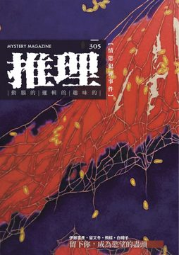
《推理》雜誌於 1984 年 11 月由「台灣推理第一人」林佛兒先生創刊，至 2008 年共發行 282 期。停刊 16 年後，由台灣犯罪作家聯會取得獨家授權，於 2024 年 6 月復刊，2024 年 11 月推出創刊四十周年紀念專號，並於 2025 年正式恢復月刊形式發行，2026 年持續深化每期的主題企劃，設定了具有閱讀趣味的不同情節故事。 305 期主題：「慾」。想要一個人，與想要一個人只屬於自己，中間隔著什麼界線？本期把情慾放回犯罪推理的核心：金錢與權力的動機向外索求，情慾卻在兩人之間長出來，越界因而沒有明確的一天，當事人到最後多半仍覺得自己是在愛人——讀者要指認的，於是成了溫柔在哪個轉折失去了分寸。 《推理》雜誌長期作為本土作家發表創作的重要園地，也將持續構建更寬廣、完整的月刊文學系統，以經典與創新並行的編輯策略，持續引領台灣犯罪推理的前沿發展！令人引頸期待！ 本期收錄內容如下： ◎封面故事◎ 枯荷（2019）◎張立欣 「荷華細語」系列以荷花為對象。張立欣在師大美術系的研究期間長期守著一池荷花，看它隨四季改換形態，開了又謝、謝了又開，年年如此。她用半抽象的手法處理這組循環：平面化的色塊、簡化的形式、平滑的筆觸。畫面裡的荷因此長出自己的生命樣貌，看畫的人直接感受得到。 ◎本期動態◎ 一則關於「被設計的真心」的命題——〈最近六筆〉◎洪敍銘 接近、取信、監看、回報這套諜報基本程序，被整套移植進〈最近六筆〉裡兩個男子的曖昧。敘事貼著操作的一方，讀者被放到近乎共犯的位置。當情感啟蒙被家庭以「保護」之名接管，那份「真心」是否還能算數？ 主編紀事◎洪敍銘 「傷害我們最深的人，往往就站在我們最靠近、也最難防備的位置」。在犯罪推理小說裡，情感與犯罪常是同個案件的兩面：金錢與權力的犯罪來自外部，情慾犯罪則從關係的內部開展。動機既已被默認，謎題便移到了「在哪一刻」——愛究竟在哪個瞬間翻了面。 蘭茝蓀蕙，各取所好，白駒過隙，瀟灑走一回——《花葬》◎田羽心 大正年間的花街、黑道的堂口、殉情的書生，五篇各借一種花為名，寫的卻是得不到愛的、離不開愛的人。各篇標題看似詠物，實則詠人；宿命最終歸給時代，寄存於血肉之軀的，不過是朝生暮死的蜉蝣。 犯罪推理大家觀◎喬齊安 三本書都繞著情慾怎麼變成動機。《男人的賞味期》收的故事橫跨作者的學生時代到二〇二五年，問愛情的賞味期過了以後會怎樣；琵琶湖畔的療養中心裡，《湖畔的女人們》讓一段病態關係疊上滿州人體實驗的舊事；《陷阱》從計程車後車廂開始，底層女子與掌權者相愛相殺。 ◎主題特輯◎ 【留下你，成為慾望的盡頭】 ——『渴求』是人的慾望中最古老的引擎，也是最難開口承認的那一種。 飼養◎伊藤雪彥 農村女孩隻身北上讀大學，半工半讀租著雅房。某個半夜，隔壁亮起不該亮的燈光；她再翻一次牆，看見門邊站著一個陌生男人，手抓一串繩子。 三具屍體與一幅畫◎留又冬 一記重擊把人打倒在地，面前站著戴口罩的黑衣男子，手上沒有多餘的動作。另一個渾身潑滿油彩、神智恍惚的人也被拖了進來，嘴裡反覆否認著什麼。這場面顯然籌劃已久，而對方到底要什麼，此刻還沒說出口。 離去◎飛樑 黎明前一小時，他站在自家門前，覺得快要窒息。記憶自己跑了起來：小時候父母是疼他的，後來兩人愈來愈少講話；母親愈活愈年輕漂亮，某天出了門就沒再回來，父親從此沉默失神。他成年後找到妻子，以為總算安穩，卻在她身上窺見似曾相識的美麗。 金鬍子◎白帽子 丈夫不在家的那天，她的好奇心動了。書房後面的階梯往下走，盡頭是一座地下車站；月台邊每格置物櫃門上，都貼著她自己的照片。 ◎犯罪文學場域DNA◎ 犯聯偵探地景（二）——二〇二五◎白羅 二〇二五年犯聯走過的場域一處處被記下來：台南市圖的解謎相談室整年開了四場，國際書展上幻華創造首度設攤，金車文藝中心的詭祕日。末了揭出一件事——《推理》停刊十六年後能重新出刊，起點就在那場詭祕日之後。 ◎本土創作小說◎ 刺青怨◎衍波 健身房更衣室裡，一名年輕女子側腹刺著天堂鳥花——那圖案，和另一個女人在丈夫手機裡翻到的照片一模一樣。 捧在手裡的真心◎怒放月光 同居戀人氣得大叫——他瞞著對方去見了前男友，還被同學做成限動發出來。他翻出絲絨盒子單膝跪下，換來的是戒盒被砸回身上，和一聲分手。人奪門而出，他顧不得戒指滾到哪去，也跟著衝了出去。 不存在◎貓魚的朋友 那是兩人交往的紀念，而男友又忘了接送她上班。她跟主管謊稱感冒，說晚點再進辦公室。公司裡她與同事明爭暗鬥，靠男友幫忙分析數據，才在年度會議上贏得青睞。某天她翻出一份簡報，抬頭寫著「人生破產公司」，於是決定去看看。 惡原者之殷殷子衿◎四弄一號 八個高中生挑在凌晨一點翻進補習班教室，帶著白蠟燭、一張大厚紙片和幾個小瓷碟，準備玩碟仙。遊戲還沒開始，人就一個接一個倒下。等剩下的人想離開，電梯按了沒反應。這層樓，顯然有人比他們更早到過。 失蹤人口案號501◎陳卓威 門口的監視器拍下警員走進一間叫「貳桌」的咖啡廳，老闆一看見他，手裡的玻璃杯就翻了。另一條線上，一名大學生站在西門捷運站六號出口，手上那份問卷沒有主題、也沒有選項。 惡種bastard◎皮皮 清晨遛狗，才開門就被兩位陌生男子攔下，問她這幾天有沒有見過住在附近的那位先生。話還沒說完，她的巴吉度掙脫韁繩，衝著一戶公寓瘋狂吠叫。 ◎名家作品大觀◎ 口紅 (1942)◎瑪麗・羅伯茲・蘭哈特／池水秀譯 死者從十樓候診室的窗戶墜落，驗屍官判定自殺；可她墜樓前還在窗邊塗口紅。表姊私下查下去，先發現那支金色口紅從死者的隨身包裡不見了，後來在排水溝找到它——壓扁了，擦去泥漿，字母圖案清晰可見。 謀殺與南風 (1945)◎瑪麗・羅伯茲・蘭哈特／池水秀譯 所有人都沒有不在場證明。佛羅里達那年冬天熱得反常，南風連吹好幾週，蚊子多到不能釣魚，丈夫只好每天冒著中暑去打高爾夫。就在這樣的日子裡，出海的那位船長沒有回來，而至少兩個人有動機。 「早知如此」的懸疑女王──瑪麗・羅伯茲・蘭哈特◎白帽子 緬因州的濱海豪宅裡，廚師因為想升管家未果，持槍闖進書房要射殺雇主。扳機扣下，喀，卡彈了。老太太逃向配膳室，廚師抄起兩把切肉刀追上來，司機、園丁與女僕合力才把人壓住。這樁真事是入口，通向那位開創「早知如此」流派的作家。 ◎精選翻譯小說◎ 倫敦之火 (1904)◎阿諾德・班奈特／陳典家譯 星期五晚上都快七點了，誰會這時候打來。話筒那端說的事很具體，指名了他的住處與現金；而這位金融家自己，正打算連夜帶著妻子離開這座城市。 ◎推理集錦◎ 【犯罪實案現場】吳荷花命案◎艾德嘉 高雄縣鳳山鎮的西里稻田裡，少婦吳荷花身中多刀，再也無法與人談笑。警方從她的屍身上找到一張照片，那成了第一條線索。照片裡那位交往五個多月的書法家，一度是頭號嫌疑人。 【灰色檔案室】何謂反情報？——從冷戰諜魂來看特工隻身犯險◎輝彌 先有間諜，才有反情報——把對方的人反過來用，或把自己的人安進敵營，《孫子兵法》〈五間〉與《戰國策》早寫過這套邏輯。《冷戰諜魂》裡的利馬斯為國家折損了不少線民，卻仍說得出那句「我希望你能在外面挨寒受凍一陣子」。提問最後落在：一個長期扮演別人的人，還能不能演回自己。 【另眼看劇】《從天而降的一億顆星》（韓版）◎雨町電視台 故事從一樁女子墜樓命案起步，警察追查下去，線索全指向一位啤酒釀造師——這人迷人輕佻，渾身散發危險的氣味，本身就是這齣戲最大的謎團。偏偏他和那名警察的妹妹，像被命運的絲線交纏著。 【遊戲開始 Games start】《血腥畫家戀愛遊戲》◎賴特 房門鎖著，只能從門縫這類視覺死角偷看外頭的動靜，玩家得在極短的時間內判斷該順從、還是試探性地拒絕。每一次點擊滑鼠都可能觸發死亡。而這款遊戲的「好」結局，超乎一般人的道德認知。 【書迷．書謎】Vol. 3：人體篇◎田羽心
《推理》雜誌於 1984 年 11 月由「台灣推理第一人」林佛兒先生創刊，至 2008 年共發行 282 期。停刊 16 年後，由台灣犯罪作家聯會取得獨家授權，於 2024 年 6 月復刊，2024 年 11 月推出創刊四十周年紀念專號，並於 2025 年正式恢復月刊形式發行，2026 年持續深化每期的主題企劃，設定了具有閱讀趣味的不同情節故事。 304 期主題：「族」。家先於個人存在，血緣在出生之前便將姓氏、輩分與名分一併綁上每一個人。本期把「家」放回犯罪推理的核心：一個外人難進、成員難出的半封閉系統，正是密室與孤島最熟悉的舞台——把人關進同一個屋簷下，動機便無從稀釋。 《推理》雜誌長期作為本土作家發表創作的重要園地，也將持續構建更寬廣、完整的月刊文學系統，以經典與創新並行的編輯策略，持續引領台灣犯罪推理的前沿發展！令人引頸期待！ 本期收錄內容如下： ◎封面故事◎ 虛無之實（2021）◎黃秋月 畫面抽離了可辨識的形象，以穩定的色面與線條統馭平面化的形體，把物體的幻影與心象空間疊合在一起。作品名「虛無之實」點出創作者的探問：當物相固有的顏色被一一捨去，留在畫布上那些不說明什麼的點、線、面，反而成為內心最真實的存在。 ◎本期動態◎ 你意想不到的〈大錯〉——尷尬的校園槍手◎塔塔 少年以為動了殺機、「想到」就贏，按下上傳鍵卻鑄成大錯——他殺了人，卻不懂這個時代的注目要怎麼經營。塔塔從〈大錯〉切入，談復仇這個沉重母題掉進流量世界後的荒謬。一個徹底外行的兇手，尷尬得剛剛好。 主編記事◎洪敍銘 家比個人更早存在，血緣把出生前無從選擇的一切綁上一個人。本期以「族」命題：家是半封閉系統，外人難進入、內部難出去，恰好是密室、孤島最熟悉的舞台——把人關進同一個空間，動機就無從稀釋。血脈、繼承、名分都是現成的動機；解開謎底，等於拆解一個家如何運轉。 一回生、二回熟、三回駕輕就熟——看我的《家弒絕招》◎田羽心 《家弒絕招》在懸疑機關之外，勾出一段看似照料、實則步步剝奪的兩性關係。路見不平成了義務，米莉要拿什麼接招？ 犯罪推理大家觀◎喬齊安 《窒愛 SUFFOCATE》是滅門血案改編小說，菜鳥記者帶失憶倖存者重返大宅，掀開立委家庭的假面；《拿著手術刀的獵人》讓連環殺手之女當上法醫，被屍體上父親的犯罪簽名拖回過去；《教出殺人犯》則反過來問，要孩子「好好反省」，為何有時只把人推得更遠。以家庭出發的犯罪故事之所以能讓讀者感到共鳴，定然是符合大眾的成長情境。 ◎主題特輯◎ 【血脈的宿命與暴力】 一人一家代，公媽隨人拜◎田羽心 家族島嶼上的年度宴席爆發集體死亡，《姓司武的都得死》就在成員相互猜忌中揭幕：斷絕往來的偵探、走不出男尊女卑的女兒、不事生產的富二代、獨攬大權的家主，一張人物表攤開就是壓力鍋。從制度史進場，把家族當成延續百年的繼承制度，看它與當代法律的拉扯。 虎毒不食子，人毒不堪親◎陳俊偉 廚師很快被排除，河豚毒無解，五十多人的場面牽動地方勢力。從毒與動機談起，再把鏡頭拉遠：司武家是半封閉的微型聚落，「孤島化」最能推極端劇情，追問一個切斷外界交流的系統，如何走向自毀的必然。 閉上了眼，你想起誰？◎皓清 每個人心裡的「司武家」都不一樣。借擲筊的哭、聖、笑筊，比喻志信、志愛、志義對家族的三種應對——脫離、留下、表面豁達。即便改口姓陳、放棄家族金，志信本質上仍被當成司武人。家族這座「靈魂的鳥籠」，怎麼讓三個截然不同的人，最後都困在同一個結構裡？ 農神與老虎◎白帽子 （含大量劇透）用一個神話追兇：羅馬農神為了不被兒子推翻，狠心吞噬自己的孩子，正對位中文俗諺「虎毒不食兒」。《姓司武的都得死》的兇手內心同時被這兩種本性拉扯，逐頁追進潛意識——父權對骨肉傳承的執念，最終如何反噬自身。 【庇護的反面】 入學通知單的祕密◎石川毅 好奇寶寶站在辦公室門口偷聽，幾個同學你一言我一語，硬從一張通知單裡推出一道密室。升學的家庭角力，全在一枚小小的印章。 爺爺過世了◎白帽子 一場師生的誤會，寫一個只剩爺爺照看的孩子，把死亡理解成「不能再一起玩」。大人眼中的偏差，常是孩子說不清的失去。 流星殺手◎322 主持人說當場驗證，話音未落，木門後傳來重物落地、餐具翻倒和孩童的哭——空中恰好亮起一點白光。屋簷擋風遮雨，也把聲音關在裡頭。 年夜飯◎飛樑 小時候手臂上是父親菸頭的痕，連起那些點的是母親的晾衣架。他怕陰影重演，索性把不幸都攬下，只盼別人家幸福。可那和樂融融的一桌人，原來各自守著祕密。 ◎香港作家訪談專輯◎ 在懸疑中見證時代——牧羊少年T與蘇那的港味推理與創作告白◎牧羊少年T、蘇那／洪敍銘整理 香港犯罪推理正以獨特的文化底蘊在台灣綻放。蘇那以《白浜戀人》細膩寫懸疑，筆觸帶著戲劇電影的明快節奏；牧羊少年T 憑《月色真美》深掘人性的主觀真相，講究讓案件裡每個人都有血有肉。兩位談港式粵語、出版環境的變遷，也以本期「族」為引，從化學毒物聊到未來的 AI 社會。 ◎本土創作小說◎ 紙人千金◎方晴君 紙紮人、紙馬、紙紅轎一字排開，熱鬧得與活人嫁娶無異，全村卻避之唯恐不及——那轎裡的新娘不是真人。貧苦書僮被推出來，替大公子與溺水而亡的邵家千金結一門冥婚。穿上紅袍的他兩眼空洞。當「成禮」少一步她就不認你，這門親事要的究竟是什麼？ 名刺交換會殺人事件◎康笙葳 日治時期總督府鼓勵仕紳率先過新曆、辦名刺交換會。會過新曆的林家除夕夜齊聚吃年夜飯，門口擺著迎年神的門松、掛起結界的注連繩。一樁殺人事件就放進這場新舊曆交替的家族聚會裡——人在屋簷下的，不只是改曆的百姓，也是同桌各有名分的家人。 洞◎靜川 住隔壁的「我」，總在深夜被她家爆炸的音樂震得牆壁發顫；按門鈴，總聽見一個中年婦女隔著鐵門用放棄的語調說「好，我會跟她講」，然後關門，音樂照舊。一週、兩週、三週⋯⋯互不打招呼的公寓，彼此滲透出一個洞。 抹茶乳酪塔◎百江寧 爸媽不和已久，我特地離鄉求學躲家中戰火；寒假被迫回到那個正在拆解的家，看著媽媽空了的行李箱、牆上結婚照淡淡的痕。一個甜點控少女，把父母離異最難下嚥的日子包進一只抹茶乳酪塔。愛，會被時間沖淡嗎？ 寄居蟹事件◎陳卓威 在飼養箱放入貝殼和一隻沒殼的寄居蟹，合為一體後，是寄居蟹操控貝殼，還是貝殼操控寄居蟹？九歲的陳卓升某天醒來，發現睡在身旁的雙胞胎弟弟「他」，用著自己的牙刷、從容穿上制服、眼裡沒有一絲驚恐……。這是一場最親密也最毛骨悚然的對質。 ◎名家作品大觀◎ 分界線謎案 (1928)◎瑪格麗・艾林翰／池水秀譯 凌晨一名男子踉蹌倒地，巡警以為是昏倒，救護車到時人已斷氣，死因竟是一顆精準打入兩肩之間的子彈，現場卻無人聽見槍響。艾林翰一九二八年的坎比恩探案——名偵探起初只禮貌地表示興趣，看一樁簡單明瞭的小事件如何踩到分界線的另一邊。 窗邊老人謎案 (1936)◎瑪格麗・艾林翰／池水秀譯 新上任的歐茲警官沒喝醉，但心情極好，向老友坎比恩誇口要寫回憶錄：「我們這行知道很多業餘人士從沒遇過的事，今天我就碰到一件奇怪的。」艾林翰一九三六年的坎比恩探案，從兩個老相識在小餐館的閒話切入：升遷的得意、大企業裡的犯罪誘因、一家陷入財務危機的劇院公司。 某天清晨他們會將他吊死 (1969)◎瑪格麗・艾林翰／池水秀譯 肯尼探長凌晨兩點起床，處理女人、眼淚和鬼天氣，最氣的是白費力氣。他向望著雨的坎比恩抱怨一樁「一清二楚」的小案子：富有的寡婦遭槍擊，外甥在警局協助調查，案情普通卻卡著一個說不通的環節。 製作「聖誕布丁」的犯罪女王——瑪格麗・艾林翰◎白帽子 「偵探小說家會讀別人的偵探小說嗎？」克莉絲蒂說，真正該問的是：讀過的還記得多少？並不多，但艾林翰是被記住的那個。白帽子替這位「犯罪女王」側寫：八歲賺到第一筆稿費，筆下名偵探坎比恩學識淵博。她說寫小說像做「聖誕布丁」，把冒險、懸疑、喜劇、間諜全攪進去，每一口都有不同風味。 ◎精選翻譯小說◎ 折磨四號案 (1935)◎查爾斯・戴利・金／既晴譯 敘事者載著妻子薇樂莉一路南下，到湖畔接朋友塔蘭特，峽谷裡熱得要命。塔蘭特靠在吊椅上聊起他聽過最完美的謎案，月光照亮他剛毅的臉，湖對岸一艘機動船像影子滑過水面。 ◎推理集錦◎ 【犯罪實案現場】北投查宅血案◎艾德嘉 占地兩百多坪的北投豪宅，雅致的外觀讓人想著裡頭的家庭該有多幸福。但一九七四年四月二十七日凌晨，兩男三女躺在自己的血泊中：中學董事長一家，主人夫婦出國、長子女剛好外出躲過劫難，留在家的三名未成年孩子與傭人慘遭多刀殺害。半世紀前的滅門舊案重新攤開，看當年偵查在哪裡逼近、又在哪裡撞牆。 【波光衍影】苦澀的布萊登棒棒糖◎衍波 諾貝爾提名二十多次全落空的格雷安・葛林，作品多被歸為娛樂小說，筆下卻自成一片晦暗的「葛林原」。從一九三八年的《布萊登棒棒糖》出發，談這部向來被當成天主教小說、卻也最怪誕最黑色的驚悚之作，如何成為英國擁抱黑色電影的源頭。從《職業殺手》的冷面殺手到改編電影的光影，一路沖刷而下。 【另眼看劇】《殺人時計館》◎喬齊安 叮噹作響的一百零八個時鐘、陰森的降靈密室、館系列招牌的密道，這回搬上了銀幕。二〇二六年 Hulu 改編的《殺人時計館》：繼《殺人十角館》突破敘述性詭計的影像化後，續作用更大的成本重現八〇年代的怪奇建築——那座大費周章的館，背後是對家人的深情。 【遊戲開始 Games start】拒絕雲端辦案——《春逝百年抄》◎賴特 《春逝百年抄》是真人演出的新本格推理遊戲，把辦案拆成三段。「問題篇」用真人影片演命案，線索全藏在裡頭、一閃而過——一個冷笑、一只不對勁的茶杯，都得在溜走前按鍵採集。「推理篇」把邏輯具象成六角網格，自己拼出假說；「解決篇」再從假說裡挑對的。 【勘誤啟事】火車難題◎塔塔 （本篇因第三〇二期排版貼近裝訂邊致內文難辨，特此勘誤重載。） 災後現場的清理員，這已不是「我」第一次到火車事故現場，今天心緒卻被地上一個可愛的玩偶背包撞了一下。火車主題園區裡，車身漂亮的天藍純白，車頭卻有血跡。當清理員打探小孩怎麼跑到鐵軌上，那答案把課本裡的電車難題放回了真正的駕駛室。
《推理》雜誌於 1984 年 11 月由「台灣推理第一人」林佛兒先生創刊，至 2008 年共發行 282 期。停刊 16 年後，由台灣犯罪作家聯會取得獨家授權，於 2024 年 6 月復刊，2024 年 11 月推出創刊四十周年紀念專號，並於 2025 年正式恢復月刊形式發行，2026 年持續深化每期的主題企劃，設定了具有閱讀趣味的不同情節故事。 303 期主題：「間諜」。間諜文學長期被龐德電影與好萊塢動作敘事定型，使得這條已有兩千五百年歷史的類型脈絡，在台灣讀者的閱讀經驗裡被切割成「動作」與「異國」兩種印象。本期回到類型的真正核心命題——情報為何而做，間諜為誰服務——從西方類型史的內部探問出發，重新檢視這個被影像簡化已久的書寫傳統。當代本土書寫則接續這條提問軸線，將諜報元素一路推進當代台灣的日常尺度，從國家對國家的戰場，落到資本對個體、家族對成員的微觀現場。間諜在當代不再只是冷戰時期的職業標籤，而是一種關於信任、忠誠與身分如何被體制反覆磋商的提問方式。 《推理》雜誌長期作為本土作家發表創作的重要園地，也將持續構建更寬廣、完整的月刊文學系統，以經典與創新並行的編輯策略，持續引領台灣犯罪推理的前沿發展！令人引頸期待！ 本期收錄內容如下： ◎封面故事◎ 心流彼岸（2024）◎張哲軒 畫面以流動的色塊與層次堆疊出心象的彼岸，作品名直接指向那條意識與無意識之間的航道。創作者長期關注內在狀態如何被視覺化為可閱讀的物質痕跡，這幅作品延續了他對「流動」與「定格」之間張力的探問。 ◎本期動態◎ 地下秩序的進化——讀《百殺王殺人事件》◎牛小流 四弄一號與仁狼血黑兩位擅長書寫人心幽暗的犯罪作家，300期合作創作了一部以殺手集團為核心的本土短篇。此次書評讀出了一個被許多讀者忽略的層次：本作把七十年代台灣的時代氛圍刻畫得入木三分，連帶讓殺人手法回到「車裂」「聖十字」「掛肉粽」三大傳說色彩的變奏。地下秩序如何隨著時代逐步上市集團化，是這部作品最值得關注的焦點。 主編紀事◎洪敍銘 本期以「間諜」為主題。在台灣本土的類型創作中談這個類型有其困難，主要在於它在台灣讀者的閱讀經驗裡，長期被西方影像系譜占據了想像空間。本期希望透過西方類型史譜系線與本土書寫當代尺度的兩條脈絡並置，讓讀者對「間諜」這個被影像定型已久的詞語，重新產生屬於閱讀的想像空間。 當正義利劍敵我皆傷時，保護主義便會轉守為攻——《復仇女神的正義》◎田羽心 觀察點在於復仇女神「憤怒」與正義女神「安放」之間那道難以平衡的天秤。網路匿名與交友軟體個資外洩讓尋芳獵豔的捕食者有機可乘，而循合法途徑申訴的受害者反受多次傷害——這是當代社會的結構性陷阱。當「以毒攻毒」的私刑邏輯被推到極致，書評提醒讀者：戰勝怪物的方法若只剩讓自己也變成怪物，那才是復仇敘事最沉重的代價。 犯罪推理大家觀◎喬齊安 本期以間諜為共同提問，三本書各自從不同地理座標切入。當間諜身分與國家敘事交纏，平庸之惡與制度之惡的界線在哪裡。 ◎主題特輯◎ 影子之下——間諜文學的系譜與當代展開◎衍波、輝彌、洪敍銘 本期主題專文由兩位撰文者接力完成，並各自從不同的閱讀方法切入。衍波從影像史切入如何閱讀間諜文學；輝彌則跳離時序，從議題出發挑選六本作品、六種敘事姿態並陳，提供讀者一張當代的閱讀地圖。兩條軸線最終匯流於同一個提問：情報為何而做，間諜為誰服務。 【親密的敵人——無處不「諜」的日常解剖】 鱒魚◎白帽子 1943 年初的倫敦聖詹姆斯公園，後來寫出 007 的伊恩．佛萊明，當時還只是海軍情報局第十七處的中校。本篇以二戰最關鍵的西西里登陸誘餌行動「肉餡計畫」為底，將佛萊明早年作為情報員的真實工作經驗戲劇化重寫。 戰時軍律◎鍾潁秀 雷達突然損壞，匪諜傳訊嫌疑被鎖定到電廠調度員與機槍兵頭上，軍法庭依戰時軍律輪番開庭判處。曳光彈裡藏著的密語往返於哨所與海面之間。當體制需要找到一個祭旗的對象，誰是真兇變得不再重要。 那群貪婪老人的爛水田◎柯彥豪 都更區裡有一塊老人家死守的爛水田，房仲為了拿到權狀，假扮成阿嬤失智誤認的兒子滲透進那個家。當諜報工序被資本邏輯接管，受害者甚至無法辨認自己正在被監視。這正是當代台灣都市發展現場中最不願被命名的諜戰變形。 最後六筆◎小安 一張悠遊卡上的近期六筆出站紀錄，被一個看似只是來赴約的男人逐筆校對。間諜文學經典命題「最危險的敵人是最信任的那位」，在這篇極短篇中被推到當代親密關係的內部現場。諜戰光譜上最隱蔽、也最難拆解的一條支線：當「為你好」與「監控你」共用同一張臉，受害者連能否求救都無從判斷。 ◎犯罪文學場域 DNA ◎ 犯聯偵探地景（一）——二〇二〇〜二〇二四◎白羅 全新專欄「犯罪文學場域 DNA」。以時間與空間為座標，記錄犯聯（台灣犯罪作家聯會）2020 至 2024 五年間於台灣各地走過的線下足跡。本系列接近一種編輯角度的歷史紀錄，由白羅以親歷者身分留下的空間軌跡，正是本土犯罪推理閱讀社群曾經存在、並繼續存在的證據。 ◎本土創作小說◎ 間諜情深◎四弄一號 本格信念在本土巷弄裡的具體實踐：一條七十年歷史的老街、一位四十歲普通公寓住戶、一段日復一日的散步路線。當諜報元素被細密縫進每一個尋常的日常物件，本格密碼戰擁有了濃厚的本土生活感。情報、扮演、滲透、確認、解謎，全部在華文間諜書寫中相當少見的本土巷弄質地裡完成， 無意義的盜竊◎淡秋紅葉 為什麼會有人去偷一台沒有價值的東西？三位博士生隔著午餐桌一邊吃飯一邊推理。日常推理的真正考驗不在謎團有多複雜，而在能否從「不應發生」的細節出發，反推出一個邏輯自洽的犯人動機。 Ｋ縣大戰錄◎陳俊偉 本期最不像「間諜小說」的本土創作，卻可能是最接近台灣當代政治日常的諜報變形。作者以虛構地名 Ｋ縣為座標，用魔幻寫實的調性這些荒誕情節拼貼成一份當代社會的政治寓言。當「間諜」這個概念被拉到鄉野政治場域，諜戰元素轉譯為派系角力、輿論操作、外地人被夾在新舊兩派之間的無聲位置。 ◎間諜小說特輯◎ 女人的智謀（By Woman's Wit, 1900）◎佛列德．Ｍ．懷特／輝彌譯 英國祕密情報基金會探員紐頓．摩爾奉命前往康提嘉首都，調查三位探員接連神祕喪命的案件。1900 年問世的這篇作品，是衍波導論裡所述「早期作家如勒貴格、奧本海默」家族的代表性範本。對當代讀者而言，這篇的閱讀價值不只是浪漫色彩的歷史標本，更在於它讓我們具體看見「間諜小說作為現代類型」剛剛成形時的內部假設。 針對英國的陰謀（The German Plot Against England, 1909）◎威廉．勒．魁克斯／輝彌譯 1908 年的巴黎布洛涅森林。一場下午茶，一位曾以薇拉．葉爾莫洛夫為名的誘餌女子，以及一個由雷．瑞蒙、薇拉．瓦朗斯與「我」組成的反德皇間諜小團體。本篇讓讀者看見間諜小說在類型史上扮演的另一種角色——不只是娛樂，更是國家集體焦慮的書寫載體。 十三個鉛兵（Thirteen Lead Soldiers, 1937）◎沙波／輝彌譯 瑟爾勳爵、迪納爾伯爵、梅特倫與多金爵士共聚一堂——歐洲的命運就在某座古堡的議事廳裡被決定。一位替孩子塗鉛兵蘇格蘭裙顏色的怪人，以及一位悄悄走進門房的蘇格蘭場督察。這篇讓我們看見英美間諜小說在跨入二戰前夕，已悄悄完成了對毛姆《祕密情報員》之後寫實風格的某種傳承與轉化。 安德烈亞．科魯斯特的七場晚宴（The Seven Suppers of Andrea Korust, 1911）◎Ｅ．菲利浦斯．歐本海姆／簡意薇譯 阿罕布拉劇院的某個夜晚，葛羅斯特男爵與妻子薇奧萊特正享受著難得的輕鬆時刻——直到一張來自舞者蘇菲．瑟萊爾的便條被遞到男爵手中。本篇展現的不只是浪漫間諜小說的典型語調，更示範了「諜報任務的真實舞台往往不是戰場，而是某張餐桌」這個後來被葛林、勒卡雷反覆改寫的設定原型。 ◎精選翻譯小說◎ 潛伏的暹羅人（Creeping Siamese, 1926）◎達許．漢密特／池水秀譯 黃昏時分，一個骨瘦如柴的男人推門進來，打個哈欠就倒在地上。胸口刀傷、紅色絲綢、口袋裡蒙哥馬利飯店 540 號房的鑰匙——黑色硬漢派開山宗師漢密特，1926 年寫的這篇短篇，把冷硬派偵探小說的核心氣味毫無保留地攤開。對死亡的態度不是震驚也不是悲痛，而是一種職業化的冷漠。 天啟三騎士（The Three Horsemen of Apocalypse, 1935）◎Ｇ．Ｋ．卻斯特頓／池水秀譯 卻斯特頓晚年作品。普魯士元帥的精銳白色騎兵團、克拉科夫詩人的處決令、橫越沼澤的高堤道路——彭德先生注意到的是一個悖論：當紀律過於嚴格反而導致整個軍事行動失敗。卻斯特頓在這個系列中放棄了布朗神父的宗教悟性結構，改以悖論作為偵探的觀察工具。 ◎推理集錦◎ 【犯罪實案現場】黃士翰命案◎艾德嘉 2008 年震驚台中的真實命案。一名擁有大好前程的年輕男性在交友網站上認識的對象，竟是計劃多時、想藉殺人冒用他人身分逃避通緝的犯罪者。麻醉劑「牛奶」、肌肉鬆弛劑「肉鬆」、學府路公寓裡的鋸子。這起案件不只是離奇，更讓「我是誰」這個間諜文學的核心提問，反向以最殘酷的方式落回真實社會。 【灰色檔案室】《何謂服從？》當信仰成為市場：異端宗教的造神機制◎輝彌 剖析異端宗教透過「正當性、強化身分、累積承諾、永遠離不開」四個機制完成的市場操作。「信仰被市場化」這個現象放回當代社群媒體與粉絲經濟的脈絡——當「神」可以是教主、可以是網紅、也可以是任何能持續強化追隨者身分的符號，造神機制便不再只是宗教問題，而是當代注意力經濟的核心結構。 【另眼看劇】猜想間諜電影的惡搞法◎陳俊偉 從《007》《神鬼認證》《金牌特務》長期形成的間諜電影公式切入，鎖定其中最接近本格推理精神的「抓內鬼」劇情，並以《不可能的任務》《無間道》《SPY×FAMILY 間諜家家酒》三條對照線展開分析。觀察精準切中兩部作品的真正動機都不是國家或意識形態，而是角色對「另一種人生」的拒絕。這個拒絕本身，就是當代諜報敘事最重要的人性內核。 【遊戲開始 Games start】當諜報小說從紙頁走進總督府——《總督諜影》◎賴特 諜報小說的核心命題被一字不漏地搬進實體空間。遊戲玩法直接追問：本土實境遊戲能不能承接歐美諜報小說已經發展近百年的議題密度？ 【詩意尋蹤】滲透她的心◎夜鳴 潛伏在黑暗中，把諜報工序中的滲透、跟蹤、情報拼湊、零散探聽，逐字逐句轉譯成一場單戀者的暗中觀察。情報蒐集的本質從來不是國家機密，而是「想完整掌握另一個人」這個古老的人類欲望。 【填字遊戲】Vol. 2：數字篇◎田羽心 全新單元第二彈，以數字作為交叉字根。橫向縱向共十四道題目，從新本格、英美黃金時代、日本社會派、推理女王、密室之王、本屋大賞新人——每一題都通往一位你應該認識、或正等著被你認識的推理創作者，以及一本以數字為書名核心的代表作。
《推理》雜誌於1984年11月由「台灣推理第一人」林佛兒先生創刊，至2008年，共發行282期。停刊16年後，由台灣犯罪作家聯會取得獨家授權，於2024年6月復刊，2024年11月推出創刊四十周年紀念專號，並於2025年正式恢復月刊形式發行，2026年獲得臺文館115年度優良文學雜誌之補肯定，未來將持續深化每期的主題企劃，設定了具有閱讀趣味的不同情節故事。 302期主題：「戲」。遊戲總被歸入娛樂的範疇，本期反其道而行，將其視為一套檢驗人性的機制。當對局的籌碼從輸贏升級為性命與倫理，所謂規則便暴露出它支配與宰制的另一面。智性的純粹較量、自尊與慾望的隱性博弈、生死之間的最後追逐，共同構成這場關於人何以在賭局中現形的觀察。 《推理》雜誌長期作為本土作家發表創作的重要園地，也將持續構建更寬廣、完整的月刊文學系統，以經典與創新並行的編輯策略，持續引領台灣犯罪推理的前沿發展！令人引頸期待！ 本期收錄內容如下： ◎封面故事◎ level.04◎游智涵 壓克力的畫面，把「關卡」兩個字直接寫進作品名字裡。創作者在研究所時期長期被畫架、噴筆、空壓機的機械聲響圍著工作；累了便拿起 Game Boy 回到像素的世界——那種按鍵直接操作影像的觸感，重新喚起他面對畫布的直覺。Level 系列正是這條私人經驗的具象化：每一張畫，是一道關卡，也是一次重新存檔。 ◎本期動態◎ 〈半致死忌量〉後記◎田羽心 一位醫學院出身的創作者，多年來在腦中養著一個問題：當生與死之間留下一道刻意維持的灰色地帶，人會走進去多深？文中回溯她的閱讀印記——從強調醫療細節的犯罪劇場，到把恐懼放慢到極限的恐怖系列——再帶出本期同名短篇的真正起點。讀完後記再回頭看小說，會發現那些冰冷的劑量單位底下，藏著一個比劑量更難量化的東西。 主編紀事◎洪敍銘 本期把「戲」當成一面鏡子。從純粹智力的對局、自尊與欲望的暗盤、被血緣逼到牆角的倫理難題，到生者與死者之間那場最後的捉迷藏——四個方向構成主題特輯的骨幹，也對應台灣推理當下正在嘗試的四種寫法。 遊戲是一種生活——評孫靜《嬉遊志：透過電子遊戲看世界》◎梁右典 電子遊戲被當作一種看世界的方法。書評帶讀者走進一本以遊戲研究為核心的學術著作：從遊戲識讀的能力建構，到玩家社群的自學自治，再到性別、酷兒、原住民議題如何在虛擬空間裡被重新拾回。文中把懷舊拆成兩種——耽溺於原樣的復原，與承認時代裂縫的反思——對推理迷而言，這正是把「讀作品」升級為「讀世界」的那道門檻。 犯罪推理大家觀◎喬齊安 三本書，三條航線，把當下犯罪推理的版圖撐開。一邊是入選釜山影展的華文新作，把校園邊界重新設計成一場無從退場的生存遊戲；一邊是富豪在館中扮偵探的日系黑色幽默，向經典致敬卻在最後拆解經典；最後一條航線停在韓國的連續殺人魔身邊，雷劈與靈魂互換把驚悚推到不能更暴烈的位置。書評像一份地圖，告訴你這一年值得親手翻開的，是哪些書。 ◎主題特輯◎ 【變調的遊樂場——生死猜謎四重奏】 布萊德的怪獸◎張兆廷 馬戲團來到鎮上，盲人男孩走近那頭從未見過的巨獸，手與耳替他輪流下判斷——皮、腿、耳、鼻、牙、尾，每一處都是一塊可以推導的線索。這篇短篇把純粹的智力遊戲還給推理，沒有屍體、沒有血，卻有一個從感官到結論層層收緊的破解過程。 贏家◎白帽子 拳擊手把最後一場比賽推向擂台之前，先把自己推進了一場更陰暗的對局。怕輸不只是怕落敗，更怕台下那群看著他長大的眼睛——於是有人提議他押注一個既能贏也能不輸的賭局，把自尊與賠率一起放上磅秤。這篇短篇刻意走入黑色調性的灰帶：勝負不在拳套之間，而在心裡那筆怎麼算都對不平的帳。 火車難題◎塔塔 黃昏的兒童火車主題園區，一場再也無法回放的事故發生之後，現場清理人員與另一個沉默的男人坐在軌道旁。對話從假設題切進去：如果只能在兩條軌道之間做一次選擇，會不會是另一種答案？ 躲貓貓◎魚肉（飲鴆） 半夜被老婆趕出門的次數，比公寓樓道的燈還準時。這次他又笑著敲門、又自然地往廁所裡躲，朋友只記得替他打通電話報平安——電話那頭遲遲不開口的妻子，背景傳來不該在深夜裡出現的對講機聲。 ◎馬來西亞作家訪談特輯◎ 來自赤道的懸疑雙星——蕭宇淮與牛小流的小說狂想與創作對話◎牛小流、蕭宇淮／洪敍銘整理 兩位馬華犯罪推理新銳坐進台灣讀者的視線。理科出身、寫人在壓力下抉擇的他，把熟悉的離散框架放到一邊，挑戰更逼近現實的小題大做；藥劑師出身、把醫院夜班拆成日常推理的她，給馬華犯罪文學下了一個比喻——「羅惹」，多元混雜的街頭沙拉。對話裡讀得到出版市場的縫隙、禁忌題材的紅線，以及一個在華文世界裡持續發明自己樣子的赤道創作圈。 ◎本土創作小說◎ 惡鄰與我為伍——關於「二」的死前留言◎田羽心 都市公寓最棘手的難題，往往是樓上那扇打不停的拖鞋聲。小說把噪音地獄、社區管委會、債務糾紛、刑警偵辦串成一條線：被害人留下的是一個僅僅一筆的數字，警方拿著這個「二」追凶，住戶們各自抓著各自的憤怒上場。讀完你會發現，公寓門背後最難解的，往往是那些寫進門牌號裡、每天踩出去的，所有人共享的怨氣。 惡原者之尋寶遊戲◎四弄一號 段被推送到手機上的訊息：限時尋寶、抽選玩家、密碼鎖直播、最終獎項百萬入袋。兩個多年舊識搶到這場機會，車程盡頭是一座郊區廢棄診所——荒草、發霉、生鏽的鐵架，與一只藏在角落的木盒。小說把「遊戲」兩個字推到一個最不該玩的位置：當直播尋寶被悄悄寫進另一條規則裡，誰才真的在玩、誰被玩，要等到盒蓋打開才會分曉。 薯條三部曲◎百江寧 寒假返家、父親又出國辦案、青梅竹馬約她去那間剛開幕的日式薯條專賣店——她和小東面對著一整面醬料牆，從點餐到結帳，把幾個月沒說的話、幾年沒處理的關係，一根薯條一根薯條換出來。小說借三幕劇的節奏，讓一頓速食的時間承載兩個家庭、兩段感情的暗線。日常推理的味道，總是這樣淡淡的酸甜，吃完才知道剛剛吞下的是什麼。 完美跳躍：花滑死亡步點◎姬雪 電視台直播訊號正穩定送出：十五歲花滑天才、四個拉丁化名的高難度跳躍、場邊的教練母親按碼錶。一切看似完美，直到第三步落冰之後，畫面靜了下來。小說把競技體育、神經科技、直播時代的目光全部疊在一張滑冰場的冰面上：當運動員的肌肉記憶可以被外接系統優化、訓練筆記可以被反向解碼，一場意外，究竟還是不是意外？ 探險家◎紅心橙 「我是一個探險家，有編制的那種。」故事從這句話展開。地球資源在被翻過去的那段歷史中燒到了底，世界政府推出「探險家計畫」，把太空人送進荒涼的星海，去找一顆勉強能落腳的相似地球。小說用科幻外殼包了一道更難破解的問題：在那個叫做新地球的地方，第一個踩上去的人究竟看見了什麼、又把什麼帶了回來？ ◎名家作品大觀◎ 密室◎桃樂西．Ｌ．榭爾絲／池水秀譯 上流社會的書房，門扣得緊，僕人記得鎖好的時間，可裡面的人早已不是進去的那位。1924年的這篇英式短篇，把新婚夜的奇異氛圍與一道古典密室扣在一起：剛從義大利度蜜月的姪女夫妻歸來，餐後客廳裡卻飄出誰都沒準備好的那個問題。彼得．溫西爵爺仍是被當作擺飾的紳士，要等到燈光打到那扇鎖上的書房門前，才會把客廳裡所有人重新看一遍。 被鬼纏身的警察◎桃樂西．Ｌ．榭爾絲／池水秀譯 兒子剛出生的那一夜，新手父親推開家門想透口氣，碰見一位渾身發抖的巡警——他堅稱自己幾分鐘前在一條安靜街道上見過一扇「不該存在的門」。1939年的英式短篇把哥德式霧夜、剛迎來新生命的私人喜悅，與一場不像案件的案件擠進同一個壁爐前的對話。彼得．溫西爵爺要做的，是把這位被嚇到的巡警慢慢帶回理性，再陪他走回那條街上，把那扇門找出來。 年輕的彼得爵爺諮詢福爾摩斯◎桃樂西．Ｌ．榭爾絲／池水秀譯 兩位古典名偵探的世界第一次正面交會。1954年BBC為慶祝福爾摩斯百歲所製播的這篇短文裡，年僅九歲的彼得．溫西被家中愛貓的失蹤難倒，一路從鄉下找到倫敦，敲開了大家都熟得不能再熟的221B大門。文章不長，卻是兩個推理譜系彼此致敬的一次珍貴握手——資深偵探如何對待童年的求助、童年的求助者又如何記下這段問答，七十年後首度以中文露面。 神學家也會寫謀殺——桃樂西．Ｌ．榭爾絲◎白帽子 她是英國推理黃金時代最值得被重新介紹的一位。從一句改變廣告史的「芥末罐文案」起家，創造了彼得．溫西爵爺與後來補進世界觀的哈麗葉．范恩，再到把寫作之筆轉向神學、把但丁《神曲》譯成英文的最後二十年——這篇評傳把作家的三段人生疊成一張地圖。 ◎精選翻譯小說◎ 消失的明星◎查爾斯・戴利・金／既晴譯 1944年好萊塢，州際廣播裡傳出最新快訊：當紅明星在比佛利山莊的住所離奇消失。私家偵探帶人衝進那座門窗緊閉的住宅，從酒櫃、書房到廚房、地下儲藏室翻了一遍，每一道門都鎖在內側、每一個出口都從裡面被釘死。黃金時代密室短篇新譯——廣播時代的時間戳、好萊塢的流言碎片、上鎖的房門列表，全部攤在桌面上等讀者一起把它解開。 ◎推理集錦◎ 【犯罪實案現場】龍江街彭宅血案◎艾德嘉 1967年5月25日中午，臺北市龍江街一棟公寓裡，一場讓所有鄰居都不敢相信的雙屍案被發現。受害者是位年輕的大學助教與她四歲的女兒；現場凌亂、刀痕複雜，血型鑑識成為破案最關鍵的一條線。 【波光衍影】踩著華爾滋滑入黑暗◎衍波 一首詩、一支舞、一個跨世代被反覆改編的危險故事。本期「波光衍影」從黑色電影的源頭——康乃爾．伍立奇1947年的《華爾滋終曲》談起，沿路追到楚浮在新浪潮高峰拍出的法語版本《騙婚記》，再走到二十一世紀好萊塢的同題重拍。三個版本各自把致命女子的形象往不同方向推：命定的悲劇、新浪潮式的解放，還是靠官能感拼起來的奇觀？ 【另眼看劇】《六花的勇者》◎喬齊安 魔王降臨之前，被選中的六位勇者要在神殿前集合——可聚到的人數，不是六，是七。這部奇幻輕小說真正的位階：一場罕見地把本格推理的密室格局與「誰在說謊」的狼人殺機制拆開重組的故事。動畫十二集卻信息量驚人：每集都在縮小嫌疑範圍，又每集都在製造新的懷疑。對推理迷而言，這是少數能在ACG櫃位上找到的本格寶藏。 【遊戲開始Gamesstart】原來如此！這就是〈怪獸〉◎飛樑 動畫《地——關於地球的運動》片頭那首〈怪獸〉，初聽是一段躁動的搖滾，再聽會發現是一首寫給推理迷與真理追尋者的歌。本期「遊戲開始」把樂團的歌詞、編曲、MV敘事一層層拆開——「神」之名的避風港、地下道的寒風、最後再現的低語——對應的是每個熱愛犯罪推理的讀者都熟悉的那種狀態：明知道追到真相要付出代價，仍舊讓那隻怪獸繼續走下去。 【詩意尋蹤】 暗潮◎劉哲廷 鋼索咬入頸椎、汗滴在暗鈴的曲線上結晶、玻璃倒映出膝蓋深處的藏屍空間。本詩把健身房當作一處重訓器材與屍體並排陳列的密室，用一行行緊縮的詩句堆出當代都市裡最被熟視無睹的暴力——肌肉的暴力、規訓的暴力、慾望的暴力。讀完才會發現：那些教練菜單背後寫的不是身體，是一份被慢慢蒸發的供詞。 胡桃鉗木偶兵◎方晴君 童年的客廳、深夜的鐘響、一群不肯退縮的小小木偶兵——本詩把柴可夫斯基那個熟得不能再熟的童話搬進一場推理意義上的對峙：英勇與卑劣、勝負與犧牲、在毫無妥協的回合裡反覆掂量。短短幾行，作者用童話的外裝包覆推理的鋒利，讓讀者重新理解小時候沒讀懂的那一節——胡桃鉗為什麼非贏不可，又是用什麼把那場勝利贏下來的。 【填字遊戲】Vol.1：怪 全新單元第一彈以「怪」作為交叉字根：橫縱共十一道題目，從金氏世界紀錄的暢銷作家、台灣本土法庭推理第一人、平成國民作家筆下的江戶恐怖故事，到妖怪小說系列中的「百鬼夜行」。每一題都通向一位你應該認識、或正等著被你認識的推理創作者。
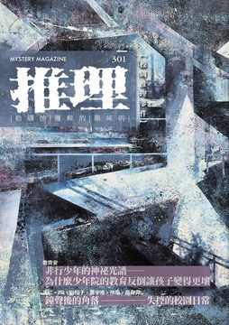
《推理》雜誌於1984年11月由「台灣推理第一人」林佛兒先生創刊，至2008年，共發行282期。停刊16年後，由台灣犯罪作家聯會取得獨家授權，於2024年6月復刊，2024年11月推出創刊四十周年紀念專號，並於2025年正式恢復月刊形式發行，2026年持續深化每期的主題企劃，設定了具有閱讀趣味的不同情節故事。 301期主題：「校」，試圖剝開青春的濾鏡，直擊校園這個微型社會潛藏的殘酷生存法則。藉由多元懸疑創作與專題，探討師生階級宰制、同儕信任撕裂的惡意與體制高壓。在解謎之外，直視生命初歷社會化陣痛的真實。 《推理》雜誌長期作為本土作家發表創作的重要園地，也將持續構建更寬廣、完整的月刊文學系統，以經典與創新並行的編輯策略，持續引領台灣犯罪推理的前沿發展！令人引頸期待！ 本期收錄內容如下： ◎封面故事◎ 存在的軌跡5◎呂宗憲 我們總在日常的場域裡，反覆尋找著自身存在的軌跡。以半具象形式與複合水性媒材，巧妙描繪出這個難以捉摸的概念。藉由影子投射在相異空間所產生的多種狀態，隱喻著相同輪廓在不同時空背景下的百變樣貌。這宛如我們在漫長的社會化過程中，面對不同場合時，所展現出的各種自我，它們皆是存在的真實軌跡。 ◎本期動態◎ 妝容美麗的遺體，打破框架的推理──讀〈推理殺人事件〉◎白帽子 從一具妝容美麗的女性遺體切入，深入探討「美麗死亡」的古典命題。透過打破敘事框架的銳利剖析，不僅直指讀者在文本外的共謀身分，更對這流淌著血色與理性的創作園地提出挑釁叩問。準備好面對這份直指人心的控訴了嗎？ 主編紀事◎洪敍銘 直擊校園日常背後的懸念。故事裡不僅有青春的迷惘，更深藏著同儕信任被撕裂時的首度深層惡意，以及面對師生階級與體制宰制時的窒息感。角色們在心智與道德界線崩塌的邊緣，展現出真實而令人不寒而慄的社會化驅力。 怒火尚未燃盡，靜待立場反轉之際——讀《噛み合わない会話と、ある過去について》◎風說 當年的弱勢者在多年後站上高位，與過去的加害者再次相遇。這並非肉體暴力的復仇，而是利用地位反轉帶來的心理折磨，強行剝開人們以「大家都這麼做」來粉飾的虛偽外皮。曾經的受害者以銳利話語逼迫對方直面事實，讓其在惱羞中體會同等的屈辱，過程令人直呼過癮。 犯罪推理大家觀◎喬齊安 從三部風格迥異的作品深探校園的多重面貌。在輕快的解謎中，看見偵探為守護同儕日常，溫柔包容犯行背後的不得已。視角一轉，極致的恐懼襲來，無話不談的群組淪為惡夢與真實命案交錯的獵場，展現悚然的同儕與網路惡意。最後則直擊血淋淋的體制現實：當學校成為階級實驗場，大人扭曲的價值觀如何將弱勢學子逼入無處可去的地獄？從青春謎團、驚悚惡夢到社會的沉重叩問，故事仍試圖在絕望中尋找群體改變的微光。 ◎主題特輯◎ 非行少年的神祕光譜──為什麼少年院的教育反倒讓孩子變得更壞◎喬齊安 當社會期盼嚴管能讓非行少年新生，卻揭露少年院的高壓馴化教育反剝奪其溝通能力，致使再犯率居高不下。事實上，許多凶惡少年藏有認知障礙。他們並非無悔意，而是連均分蛋糕都有困難，根本無法理解大人口中的「反省」。邀您打破刻板印象，直視體制盲點。 【鐘聲後的角落——失控的校園日常】 台大◎呂仁 來到台灣旅遊的外籍教授，搭車前往最高學府，下車卻發現景象全然陌生。是被不肖司機惡意繞路？還是語言隔閡導致的烏龍？當完美行程因一趟車變了調，隱藏在熟悉地名背後的在地文化盲點，正悄悄左右著真相。 Beheader◎lfR 圖書館內的推理暢銷書，接連遭到神祕客惡意畫記，關鍵線索與真凶身分被提前劇透！是誰在剝奪讀者推想的自由與驚訝的權利？兩名少年以愛校服務為契機，化身校園偵探，從館內清潔排班到書頁痕跡中抽絲剝繭。當調查越發深入，破案關鍵竟藏在死角。 大錯◎白帽子 沉悶的教室內，驚悚校園槍擊正全網直播。出於流量的病態嫉妒，他扣下扳機，誓言用同學死亡換取爆紅。這齣揉合血腥與幽默的悲劇，精準刺穿流量至上價值觀，結局必定令你拍案叫絕！ 你的煽動，我的殺機◎蕭宇淮 當校園發生女學生墜樓命案，曾與她有衝突的平凡教師，瞬間成為千夫所指的凶手。面對校方虛偽的誘導認罪，以及學生集體的言語霸凌，被逼至崩潰邊緣的他，決定用極端方式證明清白。然而，在生命消散的最後一刻，真正的惡魔才在耳邊輕聲低語。 解決◎飛樑 「暴力不能解決問題。」這句昔日訓導主任的勸誡，如今竟成學生殘酷復仇的開場。當年被撞見霸凌的少年，將恨意化為私刑，把恩師囚禁於廢棄儲藏室施暴。然而，獵物與獵人的界線卻逐漸模糊。主任的獰笑，牽扯出一段不堪的齷齪過往。當極致惡意碰撞，誰才是贏家？ 夜寐－宿舍◎星宥羿 連假獨留宿舍的女大生，聽信了室友傳來的校園怪談：據傳夜晚會有上吊女教官在走廊巡邏。室友傳來神祕的監視器連結，那恐怖身影竟隨著每次觀看，一間間逼近她的寢室！ ◎旅日作家訪談特輯◎ 微型社會的生存守則——風說與Shika西卡未完成的幻想解謎旅程◎風說、Shika西卡／洪敍銘整理 專訪兩位屢獲大賞的旅日新銳作家：風說與Shika西卡。她們從網路連載發跡，暢談社群焦慮與文學獎致勝心法。並呼應本期專題企畫，剝開「校園」濾鏡，直擊微型社會裡的人性角力與家庭縮影。更以第一手視角，剖析台日出版市場差異與台灣多元優勢。 ◎本土創作小說◎ 速度速度！◎菜仔 夜空中的神祕高速飛行物，是外星飛船還是另有隱情？校園「不明現象俱樂部」在聖誕前夕鎖定這架UFO。社長堅信這是外星人出沒的鐵證，帶著社員徹夜埋伏；理性的好友卻從教授的異常舉動中嗅出端倪，步步逼近真相。 老師◎Yuki 當憂鬱女孩終於踏入她瘋狂仰慕的暢銷作家屋內，以為迎來生命救贖，卻在冰箱中驚見一具身穿華麗洋裝、宛如精美人偶的冰冷屍體！面對駭人景象，作家沒有滅口，竟遞上利刃平靜地懇求女孩殺死自己。被反鎖在藏有屍體的密室中，女孩卻因病態的迷戀而不願逃離。當畸形的憧憬與血腥命案交織，真相究竟為何？ 逃生梯◎郭耘 高壓的學術牢籠將人逼向崩潰。炎夏之際，隔壁實驗室竟反常展開大掃除。敏銳學姊以此為題，半開玩笑推演出一場驚悚命案與藏屍過程。然而，這場看似替學弟解悶的邏輯遊戲，卻在深夜湖畔迎來令人窒息的反轉！當謊言與破綻被層層剝開，殘酷的矛頭竟直指最不可告人的黑暗秘密。 半致死忌量◎田羽心 女宿墜樓意外讓品學兼優的女大生陷入重度昏迷。當眾人以為是感情糾紛，她的靈魂卻意外脫離軀殼，化作幽靈穿梭校園，親身調查自己的謀殺案！是錯失比賽資格的同儕痛下殺手？還是室友暗中挾怨復仇？ ◎名家作品大觀◎ 白金坩堝的下落◎座光東平／既晴譯 百年前的台灣，農事試驗所保險箱內的無價之寶離奇失竊！職員陷入恐慌，竟求助神祕算命師尋物。然而謎團未解，算命師卻跟著人間蒸發。當這件稀有失物輾轉流落至台北市集，意外引發一場因心虛與誤會交織的荒謬交易。究竟是內鬼監守自盜，還是命運的惡作劇？ ◎精選翻譯小說◎ 釘子與安魂曲案◎查爾斯・戴利・金／既晴譯 頂樓公寓迴盪著悲涼安魂曲。破門後，映入眼簾的是具胸口中刀的女屍，一旁畫像的同部位竟也被狠狠釘入鐵釘！門窗自內部反鎖，涉重嫌的藝術家卻憑空消失。面對這座完美密室，神探必須從微小的地板凹痕與畫架方位中，抽絲剝繭出不可思議的逃脫機關。 ◎推理集錦◎ 【犯罪實案現場】崔蔭殺人案◎艾德嘉 「我要殺死你全家！」一句凶狠咒罵，竟在純潔校園中化為血淋淋的現實。真實犯罪檔案帶您重返震驚社會的「崔蔭殺人案」。曾與校長共同打拚的體育主任，為何會手持槍械對昔日同僚大開殺戒？從學校創辦歷史到錯綜複雜的恩怨，文章剝開教育神聖的表象，直視因利益與猜忌而引爆的極端失控。 【灰色檔案室】何謂套路？——從《雷普利遊戲》來看如何讓一般人被說服從事危險行為◎輝彌 說服一個普通人去殺人，到底有多難？專欄透過經典小說《雷普利遊戲》，為您拆解令人不寒而慄的犯罪心理。湯姆．雷普利親自示範如何鎖定身心脆弱的完美獵物，以「舉手之勞」的偽裝步步卸下心防。透過看似好意的招待，將目標悄悄推入無法回頭的深淵。這不僅是犯罪套路，更是對人性弱點的精準狙擊。 【另眼看劇】《3年A班從此刻起，大家都是我的人質》◎賴特 距離畢業僅十天，平靜校園伴隨巨響化為無法逃脫的密室。溫和導師竟宣告全班成為人質，展開震撼教育與極限解謎！本篇影評帶您重溫經典日劇《3年A班》，看它如何翻轉「暴風雪山莊」模式。在倒數壓迫下，同儕偽裝與社會冷漠被層層剝開。當尋凶動線延伸至虛擬網路，你將驚覺鍵盤後的輕率留言，竟是殺人的無形利刃。 【遊戲開始Gamesstart】選擇絕望或希望？——《槍彈辯駁》系列◎輝彌 當匯聚國家希望的「超高中級」天才學子，被迫關在封閉校園內，展開自相殘殺的大逃殺，人性將展現何種面貌？ 【詩意尋蹤】學園祭◎夜鳴 明媚的校園、喧鬧的歡語，學園祭本該是揮灑青春的最美時刻。然而，當無拘無束的慶典成為病態狂熱的掩護，這片樂園瞬間淪為血肉橫飛的獻祭道場！ 【天馬行空】Vol.1被封印的窗景
《推理》雜誌於1984年11月由「台灣推理第一人」林佛兒先生創刊，至2008年，共發行282期。停刊16年後，由台灣犯罪作家聯會取得獨家授權，於2024年6月復刊，2024年11月推出創刊四十周年紀念專號，並於2025年正式恢復月刊形式發行。300期主題聚焦在類型傳統的「殺人事件」，尋繹象徵本土犯罪推理文學在時代轉折中的解構與蛻形，並致敬古典本格的標誌性命名傳統，但不再滿足於純粹的智力對決，而是承載極度開放的當代社會議題。創作者們深度挖掘本土空間與歷史記憶，將靈異、民俗與高科技等非理性元素化為放大社會斷層的濾鏡，展現出跨越虛實的文體實驗。推理不再只是破案，而是對敘事本質的深刻叩問；在顛覆日常安全感的謎團中，為當代犯罪文學確立了深邃的本土新座標。 《推理》雜誌長期作為本土作家發表創作的重要園地，在邁入三百期這個承先啟後的分水嶺，往後期數也將全面融合「林佛兒獎」作品與《詭祕客》企劃，構建更寬廣、完整的月刊文學系統。伴隨跨國論壇、作中作解析與「推理漫畫」的全新重啟，雜誌將不斷求新求變，持續引領台灣犯罪推理的前沿發展！令人引頸期待！ 本期收錄內容如下： ◎封面故事◎ 心中的樣子◎俞柏安 在網路資訊與科技強勢發展的時代，我們是否逐漸迷失真實的自己？藝術創作者俞柏安敏銳地察覺，過度沉浸於虛幻的數位世界，正剝奪人們面對現實的能力，帶來空洞的焦慮與群體失落感。〈心中的樣子〉揭示他如何營造虛幻空無的氛圍，引導觀眾走入抽象的質問空間，直視資訊洪流下的心靈狀態。即使環境看似無奈，他仍試圖從中發現喜悅，藉此反襯人們的無力感，邀請我們褪去社群媒體包裝的軀殼，重新尋覓存在於現世的真實價值。 ◎本期動態◎ 重新演繹人類史上第一宗殺人案——〈該隱殺人事件〉的奇幻與哲思◎閱讀探戈 評析〈該隱殺人事件〉如何顛覆首宗命案神聖敘事。指出作者將神話降落凡俗，藉該隱化身酒館說書人視角展開自白。敘事核心超越純粹殺意，昇華為針對敘事權、長幼倫理與自然法則的殘酷哲學辯證。同時指出該作語言濃密且拒絕提供道德退路，不作主觀批判，純以魔幻敘事引領讀者直面壓迫與撕裂。精準點出其卓越文學技法。 《推理雜誌》三百期序◎既晴 以宏觀視野，為刊物三百期里程碑定調。敘事捨棄感傷懷舊，轉而聚焦務實的出版策略與平台重整，精準爬梳通路轉型、獎項合流與專論企劃的整併脈絡，展現重塑台灣犯罪文學論述系統的強大企圖心。字裡行間傳遞對市場的敏銳嗅覺，並透過預告跨界嘗試，宣示立足趨勢前沿的決心。此乃一篇兼具歷史意義與未來藍圖的導言。 在「殺人事件」的符號森林裡，重建本土推理新座標◎洪敍銘 三百期定調為深掘「殺人事件」中古典符號於本土語境的質變。以宏觀視角剖析創作者如何挪用本格封閉框架，承載開放的當代社會議題。內文聚焦日常空間異質化，指出靈異與科技已非理性對立，而是折射權力失靈的濾鏡。文本透顯強烈解構企圖，將純粹智力對決昇華為哲學叩問，為台灣犯罪文學確立深邃的本土新座標。 范．達因的「殺人事件」系列◎林斯諺 爬梳范達因「殺人事件」系列的敘事貢獻。捨棄繁瑣情節介紹，以宏觀演進視角提煉各作技法雛形。從實案改編營造的虛實氛圍，到首創藝術犯罪側寫與模仿殺人的結構變革，直指其深遠影響後世歐美巨匠與日本本格派發展。字裡行間深度解構古典推理基因，不僅補足歷史景深，更精闢闡述原作者打破推理守則的破格精神與感性。 繭居族殺人事件——《隱蔽嫌疑人》◎田羽心 《隱蔽嫌疑人》捨棄單一神探視角，藉由刑警、作家與高層的「多重推理」展現成見與盲點。敘事核心超越獵奇命案表象，深度聚焦繭居族的孤立困境。透過令人瞠目的誤導技法與反轉結構，文本剝離傳統勸善懲惡框架。真相揭露不在於純粹的惡，而是探問城市幽暗處交織的悲情與溫情。在錯過與過錯的悵然間，精準刺探出現代社會的疏離痛點。 犯罪推理大家觀◎喬齊安 當代犯罪推理不僅探討虛擬與現實的交界，更深刻挖掘網路匿名性背後「皮」與「魂」的人格落差。透過一名身兼講師的虛擬創作者視角，故事展現出數位時代下權力與霸凌的陰暗地景，讓讀者在搜尋真兇的過程中，反思科技賦予的人性偽裝。同時，經典的本格謎團將舞台移至輕井澤別墅與充滿古老時鐘的異樣建築，運用「活屍」與「作中作」等奇幻筆觸，重新定義封閉空間內的生存正義。從英倫荒郊的硬派警官到深陷心理病態的城市殺手，這些作品藉由地理環境與社會批判的交織，在層層翻轉中拋出最令人屏息的道德問項。 ◎主題特輯◎ 跟著經典小說去旅行──周遊日本的「殺人事件」聖地◎喬齊安 以「聖地巡禮」為引，勾勒日本旅情與本格推理交織的文學地景。捨棄單純遊記框架，深入評析內田康夫、江戶川亂步至西村京太郎等七位巨匠如何將在地歷史、建築與民俗化為敘事核心。文章精準指出，從長屋密室的日本在地化，到將神話信仰轉化為殺機的民俗推理，這些「殺人事件」不只解謎，更承載了時代氛圍與文化厚度。 殺人事件的光譜——從日常到永恆 本次極短篇特輯勾勒由實入虛、從生理恐懼跨向靈魂辯證的軌跡。起手於日常異化，拆解惡意如何滲透生活；過渡至物質冷感博弈，展現理性將罪行化為技術的歷程。隨動線深入，殺戮轉向集體荒謬叩問，以感知同步模糊施暴與受難界線，直搗倫理極限。最終視角拉升至非人維度與時空永恆，沉澱於跨越千載的宿命輪迴。 晚間新聞的殺人事件◎周志誠 巧妙操弄視角，將駭人犯罪解構為居家生活的節奏。敘事遊走於新聞播報與廚房備料間，藉冷調白光、刀具摩擦與臟器處理的描寫，建立起錯置感。全文沒有血腥獵奇，透過閒話家常與冷酷獨白交錯，精準誤導預期心理。字裡行間探問當剝奪生命成為日常，罪行如何異化為純粹的物質勞動。 水族箱殺人事件◎賴特 以極度冷冽的筆觸，將凶案現場轉化為精密的物件修復過程。敘事聚焦於「物質與冷感」的博弈，透過修復師茹生理性且近乎潔癖的善後動作，展現罪行如何被技術化為無溫度的空間整理。小說捨棄激烈衝突，以氣味、濕度與粉末等微觀細節建構張力。深掘階級壓迫下的反撲，並在結尾的呼吸停頓中，暗示了加害者與被害者間無法抹滅的共生與反噬。 運動會殺人事件◎款款 以極度反常的明亮語調，書寫一場令人毛骨悚然的校園慶典。小說將「殺人」與「霸凌」的殘酷現實，扭曲為一場充滿儀式感、被師生集體祝福的「重生」埋屍大會。敘事捨棄了解謎與道德批判，藉由施暴者與受害者和解的荒謬巡禮，直指校園體制如何將惡意內化並粉飾太平。 同步殺人事件◎蕭宇淮 第一人稱視角精準操控讀者的認知邊界。敘事始於記者對精神病患的傲慢審視，卻在對話中逐步模糊了現實與妄想、主體與客體的界線。作者巧妙利用「平行時空」與「感知同步」的概念，將殺戮的生理實感轉化為精神層面的顫慄傳染。結尾的反轉不落俗套，打破了觀察者的安全距離，讓恐懼從封閉的病院蔓延至記者的日常。 人造意識殺人事件◎班傑明 敘事捨棄繁複情節，純粹倚賴警官與人造意識的銳利交鋒，剝開數位生命與人類道德的邊界。作者巧妙翻轉古典「密室」概念，將其從具象物理空間，昇華為由人類正義感鑄造的認知陷阱。穿插的親情創傷與唯心哲思，深化造物主與被造物間權力反噬的張力。 輪迴殺人事件◎更木奈月 揉合哥德美學與宿命悲劇，將「殺人」概念昇華至跨越千年的靈魂獻祭。捨棄傳統邏輯解謎，轉而刻劃一場角色對調、無盡輪迴的生死博弈。永生與轉世不再是浪漫的恩賜，而是反覆絞殺彼此的凌遲工具。字裡行間瀰漫著深沉的無力感，深刻詮釋愛與毀滅的一體兩面。這是一樁沒有真兇的命案，唯有命運在時間長河裡，冷酷地執行著永劫不復的判決。 江郎才盡殺人事件◎呂仁 以黑色幽默解構「殺人」定義，將才華枯竭等同於死亡。敘事融合奇幻，藉由帶來靈感的前輩遺物鋼筆，探問商業與風骨的拉扯。故事反轉道德教訓：主角失去才氣後並未落魄，反而以雇傭代筆持續名利雙收，辛辣諷刺出版業荒謬。神祕視角介入，將才華褫奪的命案，昇華為對文壇名氣與厚顏文化的冷眼旁觀，成就出精準的現形記。 ◎既晴專輯◎ 如蘆葦般思考，以創與作前行──既晴訪談錄◎既晴／慣看春秋整理 獨家專訪臺灣推理先行者既晴，深度挖掘其遊走於科技與文學的雙重凝視。對談直指本土犯罪文學轉型核心，藉拆解《城境之雨》敘事策略，闡明如何將古典公式與臺灣在地議題——如疫情、輿論與家庭解構——進行有機縫合。文中叩問AI時代下欺瞞的人性本質，為偵探文類築起防線。其提出創與作並行的心法，不僅是技藝傳承，更是向新生代發出拓荒戰帖。 既晴作品選 案件關係人◎既晴 極冷冽的第三人稱視角，精準解剖都會男女在慾望與道德邊界的失足。敘事巧妙揉合戀物癖與連環命案，將高跟鞋的絕美意象，扭曲為致命的死亡誘惑。作者刻意捨棄正邪對立的傳統偵探框架，轉而深掘關係人幽暗的心理穴道；透過冰冷的鑑識照片與壓抑的網路展演，展現暴力如何催化出極致愉悅。字裡行間瀰漫強烈窺視感與異化感。 凝視慾望，墜入性關注的自我迷失──一起關於白紋鳳蝶的殺人事件◎閱讀探戈 〈案件關係人〉中慾望與道德的危險界線，直指敘事核心的心理畸變，細膩剖析高跟鞋作為致命誘惑的符號象徵。敏銳捕捉豔麗櫃姐與純樸女大生間，看似對立實則共享虛擬狂熱的鏡像關係，深掘都會男女的空虛與迷失。字裡行間精闢闡明，寫實的職場描繪不僅是背景，更是催化角色心理異變的關鍵結構，為情色與驚悚的交疊提供了絕佳的社會學觀察視角。 ◎本土創作小說◎ 珈琲店女給殺人事件◎康笙葳 本作定錨二〇年代台北，揉合日治摩登風情與古典探案。捨棄了沉重獵奇，藉富家少爺、直率少女與拌嘴家僕的視角，推動鮮活輕快的敘事節奏。故事透過細微考據與女給的愛恨糾葛，生動還原新舊文化交替時，自由戀愛與傳統禮教衝撞的矛盾。在解謎趣味之外，更側寫出女性意識萌芽的時代縮影，為這場命案注入純粹的在地人情溫度。 一張椅子殺人事件◎衍波 兼具古典解謎樂趣與文獻考證，敘事藉由警探與安樂椅神探交錯推進。最大亮點在於操弄聽覺盲點與收藏偏執，將荒誕的日常對話，翻轉為牽涉日本文壇巨匠的致命線索。故事捨棄血腥獵奇，轉而深掘藝術品殘缺如何引發狂熱者的崩潰與殺意。結合扎實的地理潮汐應用，字裡行間流露愛書人的極致執念，為懸疑氛圍滿溢迷人書卷氣息。 空屋殺人事件◎小非 幽默的口吻翻轉了「靈異偵探」的敘事窠臼。故事中的陰陽眼並非全知外掛，而是用以擊潰嫌犯心理防線的攻防話術。敘事視角聚焦於城市邊緣的街友生態，藉由一場看似凍死空屋的自然意外，劃開隱藏於冷氣團底下的殘酷算計。行文節奏明快，帶有黑色喜劇的荒謬感，冷硬地展示出不見血刃的「間接殺戮」如何運作。以輕盈狡黠的語調，精湛碰觸了社會底層的弱勢悲歌與道德灰階。 百殺王殺人事件◎四弄一號、仁狼血黑 翻玩都市傳說框架，將北海岸地景與懸疑刺客傳聞進行極具創意的縫合。敘事節奏明快且富含電影感，近身格鬥的動態感與充滿黑色幽默的師徒對話交錯，營造出極佳的閱讀張力。故事跳脫傳統黑幫套路，深掘地下秩序如何在利益與初衷之間發生質變。殺手集團不再是單純的冷血符號，而是被賦予充滿諷刺意味的企業化面貌。透過動作場面與言語交鋒，生動展現法外狂徒面對權力腐化時的殘酷抉擇。 推理殺人事件◎M.S.Zenky 在暴風雨山莊與連續密室的古典框架中，展開一場極具後設意味的敘事實驗。文本模糊虛構寫作與現實殺戮的界線，進行對偵探地位的徹底解構——當解謎不再是發掘真相的工具，而是驅動命案發生的致命引擎，邏輯推演便成了最駭人的凶器。字裡行間瀰漫創作者的焦慮，更以打破第四面牆的手法直視終端受眾，完成一次針對閱讀與書寫權力關係的深刻叩問。 ◎名家作品大觀◎ 復仇時機◎安東尼．柏克萊／既晴譯 本篇為安東尼・柏克萊的經典名作。作者刻意引導讀者的預期心理，將看似明確的動機、手法與線索層層疊加，實則佈下重重迷陣。故事並非聚焦於神探的無所不知，而是將敘事重心轉移至「巧合」這項不可控變因，探究精密算計在荒謬現實面前的脆弱。字裡行間洋溢著英式古典的從容與機鋒，在嚴密的邏輯推演中，透出對人類智力傲慢的冷眼旁觀。 完美的不在場證明◎安東尼．柏克萊／既晴譯 藉由名探與局長的閒聊，逐步剝開和平鄉間的離奇意外。作者捨棄血腥獵奇，將敘事張力凝聚於對話之中，直搗完美不在場證明的脆弱本質。當提供鐵證的警員的退場，堅若磐石的邏輯瞬間崩解。字裡行間流露古典從容節奏，透過機鋒探問體制漏洞，打破了敘事神話。 失常的心◎安東尼．柏克萊／既晴譯 一通宣告自殺的絕望去電，開啟了這場悲劇。莫斯比督察趕抵醫生宅邸，卻見死者服用的毒藥，與電話所稱截然不同。現場遺書、洗淨的玻璃杯，以及對破傷風的疑懼交織。當物證難以說明異狀，真正的迷宮便藏於情感最深處。 多重解答的推理大師──安東尼．柏克萊◎白帽子 既是黃金時代推動「多重解答」的先驅，也是深掘犯罪心理的開創者。反傳統神探的設定，源自與學歷顯赫的家人相較之下的自卑與反叛。這股動力讓他塑造出時常犯錯的羅傑・薛靈漢，更催生了具備多方解謎視角的謎題。同時，他也積極提攜後進，展現了極佳的文壇影響力。 ◎精選翻譯小說◎ 往日危機◎Ｅ．Ｓ．賈德諾／陳典家譯 遠離喧囂的公路餐館，是前科犯喬治洗心革面後築起的平靜堡壘。然而，昔日犯罪首腦突襲現身，以致命過往要脅勒索，讓這份安穩瞬間崩塌。退無可退之際，冷靜幹練的女服務生史黛拉，卻做出了令所有人錯愕的抉擇。 犯罪小說．作繭自縛◎座光東平／既晴譯 鮮明的一九二○年代台灣時代色彩，由辦案警官的日常起筆，順勢牽扯出藥鋪豪門的深邃暗流。文本結構俐落，以「做賊喊抓賊」的敘事圈套為核心推進，並將謎團機關附著於古董人偶箱上，最終則收束於傳統家庭倫理的悲涼底蘊，是一篇兼具歷史文獻價值與古典解謎趣味的早期短篇。 ◎推理集錦◎ 【解謎札記】 德文語境的殺人事件情景與犯罪文學◎余心樂 筆尖觸及「謀殺」二字，創作者心底總會掠過一絲難以言喻的戰慄。余心樂帶領讀者直視德、奧、瑞三國對「致人於死」的刑法界定。德文中蓄意謀害與衝動殺人的罪名，具備截然不同的法律尺度與人性重量。文本由該隱與亞伯相殘溯源，探討動機如何決定罪惡形貌，滋養豐富類型故事。世間生死由天，然而文字裡的性命全繫於作者筆端。 推理小說「殺人事件」裡的文學◎譚端 為何「殺人」能成為歷久彌新的文類？作家譚端回首七〇年代台灣文壇，當時主流現代主義深掘人類處境，與著重解謎的推理彷彿平行線。然而，翻開橫溝正史的《本陣殺人事件》，卻能看見命案背後深沉的封建壓抑與時代困境，文學厚度不亞於嚴肅經典。本文將犯罪敘事比作微縮盆景，指出書迷所迷戀的詭計，是極限條件下的微觀藝術。 【犯罪實案現場】 台灣旅行殺人事件◎艾德嘉 一九九〇年，二十三歲的日本女大生井口真理子獨自踏上台灣旅途。她深信旅遊指南上「台灣人民和善樂於助人」的描述，卻在南下之際無聲蒸發，化為震驚台日的重大懸案。本篇紀實報導重回當年搜索現場，還原這起重創本地治安形象的悲劇始末。當熱情的文化濾鏡被無情現實撕裂，這不僅是異鄉客的失蹤謎團，更是逼迫整個社會直視人性幽暗的沉痛紀錄。 【波光衍影】 本陣殺人事件遺事◎衍波 細緻比對各世代編導如何詮釋這樁發生於傳統驛站的密室疑雲。從名偵探金田一耕助的服裝演變，到家族恩怨與角色設定的更迭，不同的影像語言賦予了原著截然不同的面貌。這是一趟跨越文字與螢幕的回顧，為喜愛經典作品的讀者，提供了一扇檢視名作流變的獨特視窗。 【另眼看劇】 〈獻給美國人的殺人事件〉◎白帽子 艾勒里．昆恩一部極為罕見的廣播劇〈獻給美國人的殺人事件〉從未改編成小說，原稿至今深鎖於海外圖書館。這部一九四七年的劇本，並未將重心放在繁雜的機關迷陣，而是將筆鋒直指當時美國社會的反猶風潮與歧視。本文帶領讀者重溫這齣因衝撞保守價值而痛失商業贊助的震撼之作，帶您一窺犯罪敘事介入現實、對抗國家道德危機的強大能量。 【遊戲開始Gamesstart】 《臆斷推理殺人事件：福澤家的落日》◎賴特 本作規則比「抽鬼牌」更容易，玩家僅需透過卡牌湊對來建立不在場證明、排除嫌疑。然而，致勝核心卻是「先猜先贏」的膽識。在證據確鑿前大膽下注，讓理性的消去法瞬間化為遊走於直覺邊緣的刺激心理博弈。配合散發濃烈昭和懷舊感的美術，以及充滿戲劇化張力的人物標籤，這款披著懸疑外皮的派對桌遊，讓人可以在輕鬆歡鬧的節奏中，充分享受直指真兇的娛樂快感。 【詩意尋蹤】 隱性殺人事件◎夜鳴 一場不流滴血、沒有屍體的完美懸案，連最精明的偵探也無從破解。以犯罪意象為引，勾勒無聲的深夜殺戮。當不合時宜的狂傲與信仰遭深淵埋葬，殘存的僅是順應世界、壓抑微小的軀殼。這是一首獻給大人的殘酷輓歌，直指成長的妥協代價，帶領讀者傾聽夢迴時分來自過往的絕望吶喊。
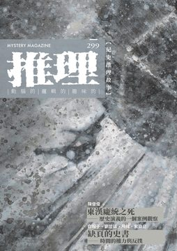
《推理》雜誌於1984年11月由「台灣推理第一人」林佛兒先生創刊，至2008年，共發行282期。停刊16年後，由台灣犯罪作家聯會取得獨家授權，於2024年6月復刊，2024年11月推出創刊四十周年紀念專號，並於2025年正式恢復月刊形式發行，2026年持續以月刊形式發行。299期主題：「史」，真相永遠比虛構更驚悚，而且它從未遠去。當信仰、民俗、恐怖與社會焦慮，以嚴謹的推理邏輯重新編織，故事不僅止於破案，而是在時間的遞嬗間，重新定義「罪惡」與「正義」的樣貌。 《推理》雜誌長期作為本土作家發表創作的重要園地，在漫長的空白後，如何通過新世代的視角與對類型文學更寬廣的定義、詮釋，接續起犯罪推理在台灣的本土化發展？2026年將透過改版，迎來嶄新的氣象。 本期收錄內容如下： ◎封面故事◎ 飛梭◎邱建銘 灰階調性中，複合媒材層層堆疊，建構出速度、旋轉與記憶殘影交織的視覺場域。畫面中心，一道如巨大渦輪的結構向外放射，它既是工業機械的冰冷截面，亦是城市設施無休止運轉的俯瞰符號。 藝術家透過刮除、覆蓋的反覆壓疊，創造出近乎風化磨損的粗礪肌理，暗示著「飛梭」的軌跡在耗損中生成。這不僅是穿梭的工具，更是個體被城市節奏捲入的生命軌跡。畫面下方刻意留白的區域，形成一處視覺暫停，使觀者得以在高速意象中，感受片刻的停頓與反思。 ◎本期動態◎ 主編紀事◎洪敍銘 當空間的坐標被定錨，時間的軸線開始穿透這片島嶼。小說不再追逐沉重的大敘事，而是潛入在地、私密、充滿民俗色彩的幽微角落。 未被寫入官方紀錄的恐懼與信仰，在字裡行間獲得了新的血肉與溫度。那些愛恨與記憶的總和，是時間在土地上留下的神祕刻痕。 從日治時期經典犯罪實錄，反思歷史冤案與推理調查的嚴謹與疏漏——《苗栗小使命案》◎Yuki 忠實還原當時的犯罪實錄，詳載命案發生、法醫鑑識與大量的偵訊對話，呈現日治時期偵查與科學技術的局限與演變。 法官傾向於簡化推論，將焦點鎖定在金錢往來，並運用長期密室監禁，試圖擊潰嫌疑人的心防。讀者將重回現場，在詳盡的物證與對話中，探討正義的失落。 犯罪推理大家觀◎喬齊安 跨越臺日韓的東亞文學地景，在虛實交錯中重塑歷史記憶與空間場域。千筆的《藝妲探偵手帳本》以大正浪漫為底蘊，將大稻埕的酒樓空間轉化為推理舞台，細膩描繪藝妲文化的流動與消逝，在華麗的在地風情中演繹安樂椅神探的邏輯趣味 。日本的三津田信三在《異聞之家》透過「偽怪談實錄」建構恐怖的幽靈屋敷，利用後設手法模糊現實邊界，探討家屋空間中積累的歷史悲劇與人為罪孽 。韓國金息則以《最後一個人》直面二戰慰安婦的身體創傷，將個體的苦難證言銘刻於歷史的集體記憶，揭示戰爭暴力下的人權議題與轉型正義的未竟之業 。資深編輯喬齊安透過這三部作品，引領讀者凝視時代的傷痕與光影，在犯罪與謎團之外，看見更深層的人文關懷。 ◎主題特輯◎ 東漢龐統之死——歷史演義的一個案例觀察◎陳俊偉 效力於蜀漢陣營的頂尖軍師，為何在尚未大展宏圖之際，竟被一支不知從何而來的亂箭奪走性命？史書的記載，為這位與臥龍齊名的謀士留下了驚人的空白與謎團。 【缺頁的史書——時間的權力與反撲】 史書◎白帽子 一個專業的殺手為何不用利刃，卻選擇痛苦的撞樹？他為何在臨死前洩露君王機密？在權力能夠輕易謀殺並抹除名字的時代，史官面臨兩難：直書真相，危及性命；書寫謊言，又將辜負歷史。面對強權的示威，他們該如何記錄這段進退維谷的血色春秋？ 溪水帶不走◎劉哲廷 濁水溪支流靜靜蜿蜒，廢棄糖廠的鐵軌像被截斷的蛇骨，固執地留在鎮外。春末的命案與多年前的火車事故，讓此地的沉默更加壓抑。半個月前，村人舉行了「送肉粽」儀式，七個壯漢將包裹拋進溪水，試圖送走上吊的亡魂。然而，溪水帶不走那些不曾言說的往事。 繳旨◎飛樑 清冷的晨曦照亮了海邊的王船祭典。金碧輝煌的巨船即將啟航，載走人間一切災厄。在網路直播與無人機的俯瞰下，民眾虔誠地恭送代天巡狩的王爺。然而，這場亙古的傳統儀式，正被捲入現代的官商醜聞。 不准走◎紫玖島 為了一己私慾，男子懇求山神將心儀的女孩強留在身邊。交換條件是：她必須找到九十九個負心者，才能成為真正的人。男子小心翼翼地維持著距離，用鮮花與書籍溫柔地守護著她。 當女孩終於卸下心防，主動要求探索世界時，他卻決定放手。 ◎秀霖專輯◎ 在史料縫隙裡築夢——秀霖訪談錄◎秀霖／提子墨整理 秀霖從古典推理的公平性原則起步，卻不甘被任何類型框架限制。他的推理不僅關乎當代懸案，更關乎歷史的縫隙，以近乎學術的紮實工法還原真相。他稱之為「雙重推理」：在史料的嚴謹考據後，小說家以邏輯演繹填補時光的謎團。 他的作品跨越明朝的科舉舞弊、日治時期的飄零之島，直至三國名將的千年冤案。這是一場自由奔放的創作實驗，屢獲國際影展IP青睞，只為讓讀者「看得享受」，在虛實交錯中尋求最純粹的閱讀樂趣。 秀霖作品選 雨霖鈴◎秀霖 船板之上，女子眼中滿是恨意，質問他赴任的真偽。她深信男子已金榜題名，為貪戀富貴而將她拋棄。然而，在兩人生命即將燃盡之際，男子道出一個無人能解的巧合。愛恨交織下的致命誤會，使這場船上訣別，終成一闕無可挽回的苦戀悲歌。 一場對古典詩詞的現代「誤讀」——〈雨霖鈴〉◎陳俊偉 優美的詞章成為痛苦悲劇的紀錄，冷冽刺骨的算計暴力，赤裸裸展現人心的隔閡與錯位。這是一場精悍的極短篇，在古典的留白處，鑿刻出現代社會的焦慮。 ◎本土創作小說◎ 該隱殺人事件◎白帽子 歡迎光臨全知酒館，老闆老皮見過形形色色的客人，但這次坐在吧檯的男子，卻是人類史上第一個兇手。 耳談◎洪碩鴻 一名賦閒在家的男子，在家族的改姓壓力與國語推行中，前往探望久病的阿嬸。 阿嬸戴著斗笠，遮掩著左耳的異狀。當她緩緩脫下遮蔽，一個巨大的肉瘤赫然取代了耳朵，它表面布滿血管，且會規律地跳動。這究竟是醫書記載的「人面瘡」，還是地方限地醫無法理解的異變？ 高山青◎f.c. 昭和年間的嘉義，阿里山林鐵火車載著珍貴檜木下山。一名少年為籌措姊姊嫁妝，奮不顧身跳上車廂，卻遭持武士刀的青年追殺。一場爭奪戰被打斷，兩人被捲入永恆迷霧的深山。 船長的眼淚◎潘尚均 厭世的高中生活，第八節課的睡意被女老師的尖刻嘲諷打斷。比起課本，男子更在意後排同學的邪惡計畫：放學後要去港口惡搞那位被假釋傳聞纏身的船長朋友。腥鹹的海風吹來，船隻上卻只見滿佈的汙穢。 當惡作劇的同學被殘忍殺害，死狀悽慘，媒體立刻將命案與在地傳說「船長的眼淚」連結，所有線索都指向港邊那位溫柔的男子。 灰藍之森◎皮魯可 部落被灰藍色的詛咒纏繞，古老的精靈信仰與科技的威脅形成尖銳對立。織布少女無法編織出自己的命運，只能眼睜睜看著族人分裂，年輕勇士主張抗爭，而長者選擇沉默。在無盡的夜裡，她開始懷疑，她所編織的一切，究竟是生存的希望，還是早已注定的，一千零一夜的謊言？ ◎名家作品大觀◎ 詛咒的寶石◎麥克斯・潘伯頓／蘇那譯 倫敦珠寶商的保險櫃底層，沉睡著一批被詛咒的寶石，每顆都承載著無法磨滅的悲劇烙印。一串為婚禮訂製的珍珠，見證了一場世紀社交醜聞。 一位貴族男子在拉姆斯蓋特海岸邊神秘失蹤，未婚妻在肯特郡的教堂苦等。他實則被一位復仇的美國少女誘騙至遊艇上，強行駛向法國。當他被釋放，婚期只剩數小時。男子必須與時間搏鬥，穿越英倫海峽，面對這場為尊嚴與愛情的絕望競速。 銀色婚禮◎麥克斯・潘伯頓／蘇那譯 一位頂尖司機受雇於一名脾氣古怪的紅髮富商。他駕駛著高性能蒸汽車，從倫敦疾馳至英格蘭鄉間。這趟旅程名義上是為了一場秘密的私奔，但富商詭異的笑容、對電報局的恐懼，讓司機心生疑竇。深夜，他在一場「銀色婚禮」派對外的樹林邊緣等待。當偽裝成女僕的管家與突然現身的臥底警察交鋒，真相瞬間爆發。司機被迫載著持槍的亡命之徒，展開一場驚心動魄的午夜逃亡。在恐懼與時速一百英里的極速中，他必須活到天亮。 惡魔的代價◎麥克斯・潘伯頓／蘇那譯 倫敦金融區，一名脾氣火爆的男子正與未婚妻爭執。此時，一位面容黝黑、眼神火熱的伯爵帶著一筆五十萬英鎊的邪惡交易現身。男子驚覺對方可能是魔鬼，在衝動之下，將其鎖進辦公室的巨大保險箱。世界瞬間陷入詭異的平靜。 原先貪慕虛榮的未婚妻變得溫順，決定放棄珠寶與跳舞，一心向善；醫生和牧師則擔憂，沒有了邪惡的鬥爭，人類將失去靈性。男子意識到，沒有了慾望與衝突，生命失去了所有趣味。當他飛奔回辦公室打開保險箱，卻發現裡面空無一人。而那位伯爵，仍坐在桌邊，等待他的簽名。這場關於道德與誘惑的寓言，揭示了人類世界運轉的殘酷動力。 寫而優則教的冒險大師──麥克斯・潘伯頓◎白帽子 他機智風趣、精力充沛，卻也神經質地與截稿日搏鬥。當他從報業轉向虛構創作，在他的推理故事中，珠寶商主角運用專業鑑定知識與圓滑手腕，周旋於貴族名流間破解謎案。寫而優則教，他將實務經驗轉化為教育，在現實中創辦學府，孜孜不倦地指導下一位勇闖文海的作者。 ◎精選翻譯小說◎ 芬德雷特先生的三個夢◎Ａ・Ａ・米恩／池水秀譯 一名飽受婚姻折磨的銀行經理，在規律的日常中利用中產階級的身份與保守黨俱樂部的空間地景，精心設計了無法追查的不在場證明。在想像中，他與海島上的「她」討論每個環節，從偽裝、竊槍到繩索攀爬，耗費半年進行準備與排練。 計畫完美無缺，動手日迫在眉睫。就在他下定決心，準備擁抱那渴望已久的自由時，推開家門，等待他的卻是那位熟悉的醫生，以及一個突如其來的宣告。當死亡如約降臨，他所獲得的，竟是比精心策劃更為諷刺的結局。 ◎推理集錦◎ 蕉園雙屍命案◎艾德嘉 南臺灣的蕉園深處，兩名狀告者接連消失。直到警方因原告失蹤而重啟調查，才赫然發現兩具遺體。頭部慘遭鈍物重擊的冤魂，與疑似被活埋的亡者，終結了他們在異鄉的微小夢想。這場時代的悲劇，將他們永遠埋葬在泥土中。 波光衍影——私家偵探濱麥克◎衍波 橫濱下町，劇場二樓，私家偵探的事務所籠罩在濃厚的黑色電影氛圍中。他繼承了冷硬派的鐵血孤獨，卻不改其溫柔義氣，常因拒絕不了委託而遍體鱗傷。他以冷硬的外殼保護著內心的信念，堅持自己的正義。他不是揮拳動槍的審判者，而是遊走在城市邊緣，以血肉之軀承接悲傷的俠客。 另眼看劇——《狄仁傑之通天謎案》◎田羽心 深受前案打擊的大理寺卿，被刺史勒令須在一日內偵破境內連環血案。現場屍體儀式感強烈卻又充滿矛盾：顱損焦屍、水中箱屍、窒息女屍、殘肢分屍，直指聖蓮教的七宗罪。 追查鎖定一名曾受祝融之禍、命途多舛的書院訪客，他具備動機與嫌隙，看似元凶。然而，這場謎案的解法，並非傳統的蠱毒幻術或國仇家恨。真兇就在眾人眼前譏誚，考驗著辦案者的視角與思維。 這是一場空前絕後的敘述性詭計，實情牽連甚鉅，破案方式也值得細品回味。 遊戲開始Gamesstart 《真．三國無雙起源》◎桑丘 大疫頻傳，數十萬流民填塞道路，他們放下鋤頭與鐮刀，只為追隨那位施行符水的教祖。史書將他定罪為妖賊，是天下群雄割據的亂源。他曾是脖戴流珠、形象癲狂的魔頭，如今卻在全新的地景中，以長髮飄逸、心繫蒼生的領袖姿態現身。他究竟是利用瘟疫煽動叛亂的罪魁禍首，還是亂世中拯救底層百姓的良醫？歷史總是勝利者的書寫。 《鬼武者》◎周志誠 古老的日本，武士的刀鋒面對的不再是凡人，而是無邊無際的妖魔鬼怪。主角憑藉著強大的魔力手甲，在每一次斬殺後，都能吸收藍青二色的魂魄，藉此恢復生命與魔力。 當力量積蓄到極致，武士便能變身為鬼武者，獲得更驚人的力量。遊戲在快節奏的擊殺中，穿插著必須切換不同角色、利用特殊能力才能解開的謎題，挑戰玩家的操作水準。這場橫跨時空的斬鬼之旅，是對古文明與邪惡力量的終極探索。 詩意尋蹤 武將◎方晴君 鄭有勤◎阿Vi牯 轉生為勇者◎夜鳴 月光與飛蛾的悖論◎劉哲廷 【靈感視窗】 漁光島◎夜鳴
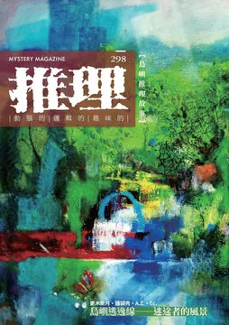
《推理》雜誌於1984年11月由「台灣推理第一人」林佛兒先生創刊，至2008年，共發行282期。停刊16年後，由台灣犯罪作家聯會取得獨家授權，於2024年6月復刊，2024年11月推出創刊四十周年紀念專號，並於2025年正式恢復月刊形式發行，2026年持續以月刊形式發行。298期主題：「島」，透過故事探討空間地景如何成為人性的壓力與犯罪的溫床，帶領讀者穿梭於臺灣的城市、鄉鎮與交通軌跡之間，直視人性的扭曲與渴望，面對最貼近生活、最讓人背脊發涼的在地真相。 《推理》雜誌長期作為本土作家發表創作的重要園地，在漫長的空白後，如何通過新世代的視角與對類型文學更寬廣的定義、詮釋，接續起犯罪推理在台灣的本土化發展？2026年將透過改版，迎來嶄新的氣象。 本期收錄內容如下： ◎封面故事◎ 知本意象◎陳麗娟 藝術家陳麗娟卸下長達三十年的國小教職後才開始接觸畫筆，從基礎素描出發，迅速拓展至油畫、水彩等多元媒材。她以個人熱情與努力，將生命如歌行旅的情懷，透過鮮豔色彩與活潑線條，轉化為一幅幅充滿感動的畫作。 陳麗娟的作品強調情境融合、借景抒情，旨在捕捉平凡而純真的美好，並承諾將「快樂放到畫裡」，其創作實力備受肯定，至今已在全國各大美展中獲獎二十餘次，並獲選臺中市美術家接力展。這不僅是退休後挑戰自我的典範，更是獻給所有追求第二人生夢想者的視覺饗宴。 ◎本期動態◎ 主編紀事◎洪敍銘 深入台灣本土推理的「心理地理學」，以「島」為核心，深度挖掘在地犯罪文學地景。移動承載了慾望與祕密，讀者將在故事的軌跡中，直視人性的扭曲與渴望。不僅破解謎題，更透過空間地景，捕捉台灣獨有的懸疑敘事美學，證明本土犯罪小說不再需要依賴模仿，因為島嶼本身就是最豐富、多變的心理犯罪現場。 殺意不在天上飛，謎團只在地上堆——《空中殺人現場》◎田羽心 這部經典作品背景設定在飛機尚未禁菸、科技不普及的年代，描繪航空業背後的人性百態。精明幹練的空姐A子，搭配大而化之的B子，組成了這對獨特的偵探組合。故事風格輕快，類似《推理要在晚餐後》，但更著重於解謎、懸疑與情感的描繪。所有詭計皆巧妙利用空服員的公信力與航程物流的特殊性，製造出最貼近生活的「不在場證明」或「以假亂真」。本書帶領讀者一窺高空服務人員褪下制服後，充滿人情味的私生活與層層堆疊的巧妙布局。 犯罪推理大家觀◎喬齊安 犯罪推理浪潮席捲亞洲，橫跨臺、日、韓，直擊類型小說的最前線。從綠島的真實歷史傳奇《綠島金夢》，探討小人物的掏金冒險與在地文化地景；日本鬼才白井智之則以驚世駭俗的「特殊設定」打造《人臉不宜食用》，顛覆本格推理的道德觀。韓國鄭明燮將「療癒空間」反轉為復仇陷阱，上演輪椅偵探與連環殺手的精采鬥智。資深編輯喬齊安深度剖析三部極品，揭示創作者如何運用時代精神與社會批判，為推理迷精選出燒腦又充滿人文關懷的國際傑作。 ◎主題特輯◎ 【島嶼逃逸線——迷途者的風景】 寧靜◎更木奈月 國家考古隊的發現，揭開了這段數千年前在大屯山麓發生的靜默愛戀。故事從一對緊緊相擁的木乃伊展開，回溯至兩個傍山而居的村莊，以及一對命運般的愛侶。他們用一輩子的時間，維持著一寸寬的疏離。 在與世無爭的恬靜表象下，是日復一日的辛勞與無言的撐持。他們在不懂何謂溫柔中，溫柔地生兒育女，將四季視為與己無涉的風景。直到天地變色，火山轟鳴，這對寡言的夫妻才終於在生命的終點，凝視彼此，說盡一輩子的話。這是一則關於地方感、文化禁錮與極致溫柔的文學悲劇。 藍皮列車命案◎鍾潁秀 在花蓮東海岸，一列往返光復與和平的通勤藍皮普通車上，發生了一起看似意外的死亡事件。台泥員工何可仁被判定死於心肌梗塞。但檢察官黃安平嗅出疑點，轉而尋求電機技師鍾熲秀的專業協助。 這不僅是一樁火車密室殺人案的變體，更是一場精準利用科技弱點的謀殺。當真相一步步揭開，潛藏在東部慢行列車背後的，竟是因遺產和父愛不均引發的血親恩怨與貪婪殺機。一篇結合在地文化、專業技術與本格推理的精彩短篇。 對號入座◎A.Z. 高鐵車廂，一場由南向北的通勤之旅，卻成為最完美的復仇舞台。專業人士喬許厭惡著鄰座陌生人的搭訕，從綠油精氣味到在地台語，所有煩人的細節都構成了一張精密佈局的網。當列車劃過嘉南平原，空間的狹窄與封閉感將日常轉變為恐怖的密室。 龜似的島嶼◎f.c. 跨越國境的婚姻，在台灣東海岸迎來終結。一對馬來西亞夫婦，將太魯閣的壯闊與龜山島的靜謐，轉化為情感的斷裂場。丈夫手握外遇證據，試圖在海灘上結束七年婚姻，妻子卻以「龜首斷裂」作為簽字條件。當突如其來的大地震來臨，地景的崩毀竟呼應了內心的崩塌。這不僅是關於背叛與成全的對話，更是透過空間地景與超現實的轉折，探討人性在極端壓力下的心理掙扎。 ◎李柏青專輯◎ 絕對理性之外的故事哲學——李柏青訪談錄◎李柏青／洪敍銘整理 李柏青是臺灣文壇罕見的「二刀流」跨界作家，身兼執業律師與小說家雙重身份。他以法律人的精準思維，遊走於歷史與推理兩大類型。李柏青的創作哲學是「故事導向」，追求充滿智性的娛樂性，致力於寫出讓人「徹夜不眠」的精采小說。他的作品不僅是解謎遊戲，更是以理性為刀，溫柔為鞘，凝視人性幽微的深度旅程。 致最親愛的你——《親愛的你》◎菜仔 以一起命案與一封遺書，撕下社會的偽善面具。本書巧妙運用第一人稱敘事，透過視角差異製造反轉，讓讀者深陷主角的困境與真相的羅網。故事中，亂倫、外遇等殊異的愛，皆源於角色的內在缺陷，勾勒出飽滿且難以預測的人物群像。 渣男的都會女子圖鑑——《婚前一年》◎楓雨 小說映照出四位都會女子：蘇小靜、徐千帆、蔣恩與路雨晴，她們形形色色的心理活動與情慾流動，遠比男主角更值得深究。作者嫻熟地將情感遊戲與高風險的惡意收購案件交織，法律攻防成為檢視角色人性的試金石。在理性與慾望的圍城中，讀者將發現與自己記憶重疊的投射。 ◎本土創作小說◎ 天燈飛落◎天嵐 平溪山城，細雨綿延，元宵節天燈升空，卻也載來一樁離奇命案。一名里幹事與一名新任警員，在追查一宗看似劫財的槍殺案時，捲入了地方政治的黑暗漩渦與一場精心策劃的死亡騙局。 當法律的界線與人性的溫情產生衝突，正義的定義不再清晰。 破裂的心◎吳思成 台北貓空纜車，發生一起看似完美的「空中密室」自殺案。醫學生潘杰瑞胸前插刀倒臥車廂，現場指紋與遺書皆指向自戕。然而，一名精通心臟外科的法醫實習生謝君陽，憑藉專業醫學知識，質疑心臟穿刺致死的時間差。他與刑警隊長聯手，深入調查醫學系六人小圈子的愛恨糾葛，揭開一場精心策劃的謀殺。 醮◎C.F. 台灣沿海小鎮面臨人口銳減與高齡化危機，鎮上的信仰中心恆吉宮，正為是否舉辦十二年一度的建醮大典爭吵不休。這場法會不僅是地方無形文化資產，更承載著十二年前一樁火燒車悲劇的陰影。當一位外地男子高喊「民俗殺人」，要求為亡子討回公道時，所有鎮民的信仰與記憶開始動搖。 佛光◎洪碩鴻 不僅是場推翻清廷的民變，更是臺灣地方勢力間的政治角力。同治年間，紅旗軍攻陷彰化縣城，然而，總理伯戴萬生卻面臨內部分裂與暗殺危機。故事聚焦於神槍手洪欉與憨虎成林日成的密謀，以及神秘乞丐劉阿屘如何以「西洋鏡」與心理戰術，在關鍵時刻扭轉乾坤。一場牽動全島的叛亂，其命運竟繫於一道虛幻的「佛光」。 石之牢◎朱哲宏 一封來自台東都蘭山的電子郵件，揭開了資深石雕藝術家黃磊不為人知的過去。隱居於山間石板屋的素人阿朵蘭，憑藉令人難以置信的石雕技藝，精準捕捉生命消逝的瞬間。這部作品以台灣東海岸為舞台，巧妙結合懸疑、藝術與黑暗復仇，探討天賦與毀滅的界線。 沉沒在金針花海◎仁狼血黑、四弄一號 四位曾是大學推理社的菁英，前往花蓮六十石山進行一年一度的懸案討論會。儘管六月並非金針花盛開的忘憂時節，這座人煙罕至的郊山卻隱藏著致命的殺機。他們此行旨在破解一樁離奇的YouTuber墜車火燒案，卻不知自己早已踏入精心設計的陷阱。當菁英們的邏輯辯證碰上地方感的深沉惡意，他們引以為傲的理性，能否抵擋來自「母親花」背後最純粹的執念？ ◎名家作品大觀◎ 邁達斯的面具◎Ｇ・Ｋ・卻斯特頓／既晴譯 布朗神父探案的壓軸之作，罕見地將目光投向現代組織犯罪與金融詐欺。一起看似單純的越獄案，將神父從工業港口的舊貨店，引向金碧輝煌的銀行內室。當所有人都追逐著粗暴的逃犯時，布朗神父卻從嫌疑犯那過於「體面」的反抗姿態中，洞察了隱藏在紳士面具下的詭計。 唐寧頓事件◎麥克斯・潘伯頓、Ｇ・Ｋ・卻斯特頓／既晴譯 這不僅是一樁英國莊園的黑暗謀殺案，更是推理文學史上極具實驗性的「接力破案」經典。資深作家潘伯頓（Max Pemberton）細膩鋪陳一起疑點重重的家族醜聞與密室死亡事件，將讀者帶入充滿哥德式陰影的巴羅莊園。隨後，G. K. 卻斯特頓接棒，派遣他最富盛名的偵探——布朗神父，以其獨特的哲學視角與人性洞察，揭開逃獄陰謀背後，更深層的道德困境與極端正義。 推理小說界的「聖人」——Ｇ・Ｋ・卻斯特頓／白帽子 被譽為「悖論王子」的G. K. 卻斯特頓，是英國20世紀前期的文壇祭酒。他以天才洋溢的詩人筆觸，寫下無數翻轉常理的妙言錦句，更為推理小說吹響道德與詩意的號角。其代表作《布朗神父的天真》，確立了與福爾摩斯「物證推理」分庭抗禮的「心證推理」傳統，被艾勒里・昆恩譽為「1911年的奇蹟之書」。這位深具慧眼，影響間諜小說與宗教論述的文學巨擘，連《納尼亞傳奇》作者C. S. 路易斯都曾擔憂，年輕人須謹慎閱讀，以免一不小心就信了上帝。這位推理界的「聖人」，早已在廣大讀者心中超凡入聖。 ◎精選翻譯小說◎ 幾近完美◎Ａ・Ａ・米恩／A.Z.譯 朱利安渴望繼承叔叔的鉅額遺產，卻苦於身為唯一繼承人，成為警方眼中的頭號嫌犯。為此，他設計了一樁「完美犯罪」，架構出一個完全沒有自身動機的謀殺計畫。然而，當他以為成功擺脫了金錢枷鎖，命運卻給了他最殘酷的玩笑。 犯罪小說．遭到天譴的人◎座光東平／既晴譯 一九二四年，日治臺灣的繁華地景，隱藏著最齷齪的祕密。這篇罕見的日治時期犯罪小說，帶領讀者重回大正時代的臺北，從淡水河畔的高砂亭，一路到充滿誘惑的北投溫泉。 ◎推理集錦◎ 犯罪實案現場——三屍三地命案◎艾德嘉 一樁貫穿臺灣西部的「三屍三地」命案，震驚全臺。看似各自獨立的死亡，卻被一條不倫戀的絲線緊緊牽連。從臺中福祿壽旅社，到彰化車站前的第一旅社，再到嘉義新高旅社，三處旅店成為這場悲劇的見證者。 故事主角陳祥生，與好友的妻子方蔡金里發展出地下戀情。當求愛與離婚的要求被拒，陳祥生的佔有慾演變為駭人的謀殺計畫。他將一趟歡快的「家庭」旅程，變成了強迫三人共赴黃泉的死亡之旅。 灰色檔案室——何謂代理人戰爭？◎輝彌 本文剖析國家如何透過扶持傀儡、隱蔽行動，以低成本達成戰略目的，同時規避國會與媒體監督，讓國家之手「變乾淨」。作者葛拉罕．葛林曾任職英國軍情六處，並具戰地記者背景，他以越南的三角關係為引，深刻揭示冷戰時期美國輸出「理想化民主」的虛榮與失敗。本書被前總統歐巴馬列為必讀，是研究外交政策、情報操縱與駐外人員心靈崩解的經典參考，揭露理念如何成為戰爭正當性的外衣。 另眼看劇——《六個嫌疑犯》◎閱讀探戈 故事設定在六〇年代摩登臺北，透過「台一製鋼」公司內錯綜複雜的男女關係，揭露資本社會下的貪婪與情慾。人人想殺的敲詐偵探鄭光輝遇害，牽動六位嫌疑犯，他們各自擁有完美的不在場證明。導演高明地利用「臺鐵列車時刻與動線」設計出精妙詭計，挑戰觀眾的推測能力。 遊戲開始Gamesstart——《打鬼》◎賴特 遊戲運用3D掃描，真實還原民雄鬼屋、杏林醫院等傳奇地景，營造特有的濕熱滯悶氛圍。主角林火旺手持法器，將在地「陣頭文化」轉化為戰鬥系統，累積能量後甚至能變身威猛的官將首，顛覆恐怖遊戲的壓抑感。本作為地景控與民俗愛好者帶來聽覺震撼，並藉由硬派玩法，講述大時代下關於親情與回不了家靈魂的感傷故事。 詩意尋蹤 龍山寺寫生——信仰與遊民◎劉哲廷 【靈感視窗】 旗津◎夜鳴
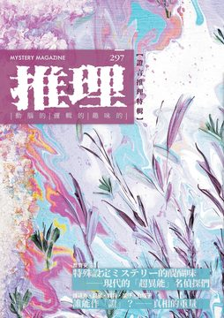
《推理》雜誌於1984年11月由「台灣推理第一人」林佛兒先生創刊，至2008年，共發行282期。停刊16年後，由台灣犯罪作家聯會取得獨家授權，於2024年6月復刊，2024年11月推出創刊四十周年紀念專號，並於2025年正式恢復月刊形式發行，2026年持續以月刊形式發行。297期主題：「證」，在語言的誤導與錯識間，追索那些難以掌握的真相。當現實映照出人性的無力與匱缺，創作者們試圖在謎團中尋找證據，為晦暗的現世證明微光尚存。 《推理》雜誌長期作為本土作家發表創作的重要園地，在漫長的空白後，如何通過新世代的視角與對類型文學更寬廣的定義、詮釋，接續起犯罪推理在台灣的本土化發展？2026年將透過改版，迎來嶄新的氣象。 本期收錄內容如下： ◎封面故事◎ 展現unveil◎小婉 當世界因疫情被迫靜止，指尖卻在顏料的流動中，觸摸到生命最豐盛的綻放。這不僅是色彩的堆疊，更是一場靈魂的溫柔突圍。從無所事事的焦慮中轉身，讓直覺帶領色彩在畫布上優雅起舞。每一筆都在訴說在愛中被造的奇蹟。無需恐懼未知，生活即是藝術，只要放慢腳步，將會看見那份原本就屬於你的美好與豐富。 ◎本期動態◎ 主編紀事◎洪敍銘 在錯識的語言與流洩的真相之間，證據不僅是解謎的鑰匙，更是映照人性匱缺的鏡子。身處現實風暴的中心，面對無法輕易掌握的解答，這是一次對無力感的深刻凝視。然而，在層層剝開的兩難與沉重之後，透過充滿靈性的藝術視角，終將在殘酷的現實裂縫中，看見那股溫暖而堅定的樂觀期盼。 記憶拼圖，圖窮匕見——《現場鑑證》◎田羽心 當法律無法制裁罪惡，自詡正義的「模仿者」便在黑暗中執行以牙還牙的私刑。一場大火奪走了視力與記憶，他被迫困在無盡漆黑，僅能憑藉殘存的刑警本能與心理博弈試圖破局。身邊協助的搭檔隱藏著什麼秘密？體制內的權謀是否比兇手更致命？這是一幅完全留白的記憶拼圖，而拼湊出的真相，將是比紅蓮惡火更灼人的殘酷現實。 犯罪推理大家觀◎喬齊安 跨越八十年的時空，名為「大魔神」的殘忍儀式在現代悄然甦醒，兩代偵探誓要揭開歷史的夢魘。鏡頭一轉，陷入低潮的傳奇神探竟在古都竹林建立荒謬王國，上演一場拒絕推理的華麗冒險。而在虛構之外，法醫直面世紀災難的破碎現場，試圖從冰冷遺骸中解讀出預防死亡的密碼。從驚悚傳說到震撼紀實，這是對真相最極致的展演。 ◎主題特輯◎ 【特殊設定ミステリー的醍醐味──現代的「超異能」名偵探們◎喬齊安】 當現實的邏輯被超自然力量改寫，新世代的名偵探已然誕生。他們不再單純依靠演繹法，而是背負著「總是遭遇命案」的詛咒體質，或擁有看穿謊言的生理本能；甚至有靈媒能與死者共鳴逆推真相，以及不死少女利用自身的「死亡」破解終極密室。這是動漫世代對本格推理的叛逆與致敬，在異能與詭計交織的舞台上，常識崩解，唯有最狂野的邏輯能直抵真相。 【誰能作「證」？——真相的重量】 哨所的槍聲◎鍾潁秀 深夜的花蓮空軍基地，兩聲槍響劃破死寂。一名被視為頭痛人物的上兵倒臥血泊，現場被定調為飲彈自盡。然而，牆上過低的彈孔、毀容的面孔，以及消失的第一聲槍響，在在顯露著不尋常的端倪。檢察官重返充滿壓抑氣息的營區，試圖在權力與謊言交織的網羅中，還原那幾秒鐘內，發生在哨所裡的殘酷真相。 Raven◎晨星 陰鬱雨夜，棘手的命案找上了視錢如命的私家偵探。死者是黑道混混，嫌疑人看似證據確鑿，偵探卻從刀傷角度嗅出了嫁禍的氣息。隨著調查深入，案情指向死者受虐的女友，真相似乎觸手可及。但在這座貪婪的城市裡，正義是有價碼的商品。當破案率與鉅額報酬擺在天平兩端，他選擇揭開的，究竟是真相還是更深的黑暗？ 我不是自願的◎賴特 城市邊緣的無名公寓，流傳著失蹤者最後的足跡。想搏版面的記者獨闖禁地，踏上霉味瀰漫的階梯，卻步入時間的迷宮。703號房的時鐘永遠停在11:23，訪客簿上無數筆跡寫著同一個名字。當牆縫藏著的照片映照出熟悉的恐懼，他才驚覺，這場採訪沒有出口，只有無盡的輪迴與取代。 HaveB.C.BecomeA.D.?◎菜仔 伯利恆的荒野下，原本只想驗證社團那套「天使即外星人」的荒謬理論，卻挖出了令人戰慄的骸骨。隨著月亮異變，世界在瞬間崩塌重組。醒來時身處充滿儀表板的機械空間，眼前是編號斑駁的金屬天使。信仰與真實的界線徹底粉碎，當聖經的神聖敘事變成程式碼，他們該如何定義眼前的「神」與自己的存在？ 遺書◎白帽子 為了修訂那本將轟動文壇的鉅作，他夜夜與酒精為伍，直到死神大剌剌地闖入客廳。面對生命的終結，這位不得志的作家只有一個願望：穿越到五十年後的書展，親眼見證自己的不朽。然而，時間的玩笑殘酷而荒謬，當他窺見了未來的真相，這最後的賭注，竟成為他親手抹去存在證明的荒唐序曲。 ◎林斯諺專輯◎ 推理與哲學的多重思考——林斯諺訪談錄◎林斯諺／牛小流整理 在台灣推理界，林斯諺宛如冷靜的雙面諜，穿梭於哲學殿堂與犯罪現場。他以教授之眼剖析邏輯，以作家之筆編織迷宮，堅信詭計的疆界將隨知識無限延伸。對他而言，推理不僅是智力遊戲，更是一場殘酷的移情實驗：讀者必須依序化身為偵探、兇手，最終成為作者，在虛構的假面下，直視那唯一的真相。 林斯諺的本格書寫與本土探索◎洪敍銘 在台灣幽深的山林與被遺忘的鄉野間，經典的「暴風雨山莊」不再是異國的想像，而是扎根於本土的真實戰慄。從旋轉大廈的宏大機關到換腦手術的倫理迷宮，不可能的犯罪不僅挑戰邏輯極限，更是一場對「真實與虛構」的哲學拷問。當面具卸下、記憶重組，恐懼不再來自密室裡的兇手，而是那令人顫慄的終極探問：如果一切皆可擬真，我們該如何確認「自我」並非幻象？ ◎本土創作小說◎ 她們說◎風說 兩名男大學生墜谷身亡，警方定調為意外，校園讀書會的女孩們卻稱之為「報應」。一名不想出門的偵探與熱血助手介入調查，從一枚遺落的耳扣，揭開了那場以愛為名的殘酷賭局。面對少女們結成的沉默同盟，偵探必須在冰冷的法律與破碎的人心之間做出抉擇——有時候，揭開真相並非正義，而是對倖存者的二度傷害。 惡原者之密室之內◎四弄一號 老婦人在寒夜的廚房中因一氧化碳中毒身亡，看似是一場長照悲歌下的無奈意外，刑警卻從過度整潔的現場嗅出了惡意的氣味。這是一間由冷漠構築的密室，兇器並非刀槍，而是家人的視而不見與精心算計的「不作為」。當死者最後的語音訊息流出，揭露的竟是比死亡更冰冷的親情真相——有些人，本身就是惡的帶原者。 我是兇手？◎千晴 一場強震過後，總裁辦公室淪為廢墟，原本來借錢的甥女與一名神秘女訪客，同時從昏迷中醒來，卻發現辦公桌後多了一具背插利刃的屍體。門鎖卡死，兩人受困於這座充滿猜忌的密室。她們互相指控、甚至偽造證據，試圖在救援抵達前洗清嫌疑。究竟是誰在地震的掩護下動了殺機？或者，兇手早已隨著震波消失無蹤？ 誰是AI？◎淡秋紅葉 六名互不相識的參賽者，被受邀至雪山中的圓形村莊，參與一場名為「尋找仿生人」的實境秀。然而，當一名參加者慘死於絕對的密室之中，遊戲瞬間變調為生存殺戮。暴風雪封鎖了出路，全天候監控竟成了兇手的共犯。倖存者必須在謊言與演算邏輯中角力，揪出那個隱藏在皮囊之下、學會了殺戮的「它」。 來自未來的命案線索◎小非 一通來自三十年後的電話，打破了理工宅男的平靜生活——他尚未出生的兒子遭到綁架，唯一的贖金，竟是必須在三天內阻止一樁發生在現代的自殺案。為了拯救未來，他與熱血女警聯手追查地下賭場的連環命案。當過去與未來在通訊雜訊中交錯，他才驚覺，這場跨越時空的救援行動，不僅是為了救人，更是為了改寫自己孤獨的命運。 ◎名家作品大觀◎ 玻璃酒杯◎Ａ・Ａ・米恩／A.Z.譯 警司與推理作家共進晚餐，在酒精催化下，一段塵封的豪門命案浮上檯面。貴族管家因試飲主人的酒而中毒身亡，兇手卻擁有完美的入獄不在場證明。隨著故事推演，作家驚覺警司口中的「簡單真相」背後，竟隱藏著操弄心理的雙重詭計。當一張名片成為脫罪的關鍵，這場飯局的聽眾，或許正是唯一知曉兇手真面目的活口。 十一點的謀殺案◎Ａ・Ａ・米恩／A.Z.譯 鳥類學家慘死於私人保護區，手錶在十一點被砸碎，卻戴在錯誤的手腕上。死者的侄子化身業餘偵探，熱心地向警方剖析兇手如何偽造死亡時間與不在場證明。然而，在鄉下警官眼中，這些過於完美的推理並非破案曙光，而是佈局者露出的馬腳。當協助調查成為掩蓋真相的手段，最聰明的偵探，其實就是逍遙法外的兇手。 一位深受喜愛的男子◎Ａ・Ａ・米恩／A.Z.譯 寧靜村莊搬來一位深受愛戴的紳士，他仁慈、溫柔，迅速擄獲了鄰里與早熟少女的心。他們在花園共享秘密，他卻總是流露出一種如同迷途小狗般的哀愁眼神。直到葬禮過後，律師揭開了他隱藏多年的真實身分——他並非退休警官，而是曾犯下駭人絞殺案的逃犯。墓碑上「深受喜愛」的銘文，成了對善惡界線最諷刺的註腳。 小熊維尼與羅賓之父──Ａ・Ａ・米恩◎白帽子 他創造了價值連城的童話王國，撫慰世人，卻親手毀掉了兒子的童年。這位原本渴望在嚴肅文學留名的劇作家，為取悅父親寫下推理傑作，卻因一隻黃色小熊的爆紅而遭定型。他的兒子在現實中遭受霸凌，甚至控訴父親「偷走」了自己的名字。這是一段關於成名代價的真實殘酷童話，陽光普照的森林背後，是無法修復的親子裂痕。 ◎精選翻譯小說◎ 慢慢來◎魯本・詹寧斯・謝伊／陳典家譯 馬戲團浪子在鄉下贏了牌局，轉眼卻被扒走了昂貴手錶。找上警長求助，卻撞上推諉卸責的官僚高牆：檢察官在釣魚、逮捕令還沒好。當他看見警長與竊賊在街頭談笑風生，才驚覺在這座封閉小鎮，正義是有標價的商品。想拿回失物？那就得學會這場荒謬遊戲的潛規則，掏出籌碼，買通那條通往「公道」的捷徑 。 ◎推理集錦◎ 犯罪實案現場——楓江路滅門血案◎艾德嘉 早晨推開家門，映入眼簾的是宛如煉獄的景象。分租公寓內，二房東一家三口與一名女房客慘遭割喉，雙眼與嘴巴皆被膠布死死封住 。時值農曆鬼月，這詭異的「封眼」儀式，竟是兇手恐懼冤魂索命的迷信手段 。警方抽絲剝繭，從複雜糾葛的情感關係中尋找殺機 ，卻發現那位僥倖逃過一劫、身上沾染血跡的報案人，眼神裡似乎藏著比鬼魂更駭人的祕密 。 波光衍影——俄羅斯的四簽名◎衍波 當倫敦的迷霧飄向寒冷的北國，經典名偵探的身影在鐵幕後方悄然重塑。從蘇聯時期備受英國首相讚譽的優雅演繹，到顛覆年齡與習慣的現代叛逆改編；甚至將舞台搬至莫斯科貧民窟，讓戲劇大師化身偵探親身涉險。這不只是對經典案件的影像回溯，更是一場跨越文化與時空的推理變奏，見證那個在異國獲得獨特新生的傳奇靈魂。 另眼看劇——《天才偵探御手洗～難解事件檔案「折傘的女人」～》◎喬齊安 備受推理迷膜拜的天才偵探，多年來卻是影視改編的禁區。是宏大的外星戰爭難以呈現，還是詭計機關過於離奇？當製作方小心翼翼地選擇了「日常之謎」試水溫，卻意外在收視與口碑上遭遇滑鐵盧。這篇評論犀利地指出，那些在小說中令人著迷的「巧合」與「神性」，一旦具象化為真人影像，竟成為致命的缺陷。這不僅是改編的失敗，更證實了某些推理的極致樂趣，或許只能封存於紙上的想像之中。 遊戲開始Gamesstart——《ChantsofSennaar》◎賴特 在這座被語言隔絕的神秘高塔中，溝通是唯一的鑰匙。玩家將化身為沈默的觀察者，穿梭於五個截然不同的族群之間 。這裡沒有刀劍廝殺，只有散落在牆壁與機關中的陌生符號 。你需要像人類學家般紀錄、推敲，從一個拉桿動作推導出「開啟」的意義，在筆記本上重建失落的語典 。當破碎的圖騰重組為邏輯，你將親手縫合這座巴別塔的裂痕，在沈靜的解謎中體驗「理解」帶來的巨大震撼 。 詩意尋蹤 寂寞成河◎夜鳴 虛光棲居◎劉哲廷
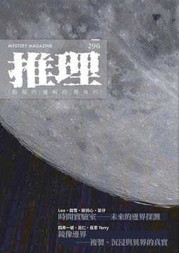
《推理》雜誌於1984年11月由「台灣推理第一人」林佛兒先生創刊，至2008年，共發行282期。停刊16年後，由台灣犯罪作家聯會取得獨家授權，於2024年6月復刊，2024年11月推出創刊四十周年紀念專號，並於2025年正式恢復月刊形式發行。296期主題：「變」，象徵推理文學在時代轉折中的再一次蛻形——從形式、題材到思維的重組。以「變」為核心，探索人與科技、真實與幻象、理性與信仰之間不斷移動的邊界。從AI與時間悖論的冷峻推理，到跨媒體評論與哲學寓言的實驗書寫，呈現類型的多重進化。推理不再只是破案，而是對「變動的世界」的持續追問；而在真相的形變中，我們也看見人性如何於未知裡，試圖「辨」認自己。 《推理》雜誌長期作為本土作家發表創作的重要園地，在漫長的空白後，如何通過新世代的視角與對類型文學更寬廣的定義、詮釋，接續起犯罪推理在台灣的本土化發展？2025年重返每月一期發行！令人引頸期待！ 本期收錄內容如下： ◎封面故事◎ 深林人不知◎禾風 〈深林人不知〉映照出時代的迷霧，也象徵我們仍在探尋的方向。這是一本結合創作、評論與未來想像的推理雜誌，適合所有熱愛故事、渴望思考的讀者，一同走進那個現實與幻境交錯的世界。 ◎本期動態◎ 主編紀事◎洪敍銘 每一次閱讀的「變」，都是對未知的挑戰。這一期，從推理、科幻到奇幻，我們邀請你穿越文學的邊界，重新思考「真實」與「未來」的距離。當理性的推理遇上想像的飛躍，當謎團轉化為對人性的追問——故事不再只是破案，而是一場關於「人如何成為人」的實驗。 重構雷普利——罪惡心理與身分的變奏曲：讀派翠西亞•海史密斯（Patricia Highsmith）《雷普利全集1-5》◎劉哲廷 他不是天生的惡人，卻在謊言中找到自我。從貧窮的青年到上流社會的座上賓，他以完美的偽裝與冷靜的計算，讓人生成為一場高風險的遊戲。這套經典系列，讓讀者不只是旁觀罪行，而是進入犯罪者的內心，看見慾望、恐懼與野心如何交織出令人屏息的戲碼。派翠西亞‧海史密斯筆下的雷普利，優雅、危險、又令人難以抗拒——他挑戰道德的邊界，也顛覆我們對「好人」與「壞人」的想像。這不只是犯罪小說，而是一場關於身分與選擇的心理遊戲，讓人讀到最後，仍忍不住懷疑：誰才是真正的贏家？ 犯罪推理大家觀◎喬齊安 當犯罪推理遇上科幻未來，理性與想像正面交鋒。從韓國現象級漫畫《黑盒子》到千先蘭的《無名之境》，再到日本作家早坂吝的《偵探AI》，這篇專欄帶你穿越亞洲新世代創作者的腦內宇宙。它們不只是懸疑或驚悚，而是用科技與情感交織出全新的敘事風景——恐懼不再來自外界，而是來自人心的演算法。這些故事重新定義了「犯罪」與「推理」的邊界，也描繪了人與人工智慧共存的明日樣貌。想知道未來的推理會長什麼樣？這篇評論，正是你打開未來閱讀感官的鑰匙。 ◎主題特輯◎ 時間實驗室——未來的邊界探測◎Leo、戲雪、田羽心、菜仔 當推理的線索通向未來，時間本身也成了最大的謎。「時間實驗室」在記憶錯置與身分變動之間，體驗科技如何改寫人性。故事裡沒有冰冷的機械，只有關於愛、真相與選擇的難題——當痛苦被消除，幸福是否還有意義？當基因進化成為現實，我們又該如何界定「人」？這是一場融合懸疑與科幻的閱讀冒險，讓每一個問題都化為一面鏡子，映照出我們可能成為的樣子。未來或許難以預測，但在這裡，你能先一步看見它的輪廓。 【鏡像邊界——複製、沉浸與異界的真實】 桃莉的角◎四弄一號 在這個掌握克隆技術的未來世界裡，智慧、權力與倫理交織成最致命的謎題。當天才教授離奇死亡、被監控的克隆體接受審問，一場關於「誰才是真正的存在」的調查悄然展開。隨著記憶、時間與人性的界線模糊，真實的世界逐漸消失，只留下被創造出的「另一個你」。 時空旅人偵探◎呂仁 他一次又一次重返案發現場，試圖找出真正的兇手；然而，真相似乎總在時間之外。當每一次「重來」都改變了命運的軌跡，他開始懷疑——這真的是現實嗎？ 撞一下，我來到異世界！◎反思Terry 在那裡，城市閃爍著賽博光影，醫院藏著不可思議的手術與AI醫師，夢境與現實的界線逐漸消失。他遇見了似曾相識的護理師、經歷難以理解的治療，卻始終不確定：自己究竟還活在原本的世界，還是被命運「移植」到了別人的人生？ ◎伍薰專輯◎ 當科學遇上幻想的創作宇宙——伍薰訪談錄◎伍薰／閱讀探戈整理 當科學與幻想交會，一個屬於台灣的未來宇宙誕生了。伍薰——倪匡科幻獎與華語星雲獎得主，以獨特的生物學想像與社會觀察，打造出結合環境、科技與人性的龐大故事群。從《海穹英雌傳》的海洋文明，到《3.5：強迫升級》的數位進化，再到《臨界戰士》《水都物語》等跨媒體作品，他用小說、漫畫、動畫，構築出屬於華文世界的「科幻本地語」。這是一場從文學走向創作產業的冒險——訪談中他談創作信念、談永續、談想像力如何改變現實。讀完，你會相信：台灣的科幻，不只是未來，更是現在正在發生的故事。 兼具開創性與啟發性的解謎冒險科幻傑作——《3.5：強迫升級》◎戲雪 《3.5：強迫升級》以「網際量子即時傳送環」為核心，結合懸疑推理與科幻思辨，帶領讀者展開一場跨越國界的冒險。它不僅是科技創新的寓言，也是一場對人性慾望與社會秩序的實驗。從台灣出發，故事橫跨五大城市，層層謎團與雙重反轉交織成令人屏息的閱讀體驗。傳送的便利背後，是被科技綁架的日常；所謂「升級」，究竟是進化，還是更深層的依賴？ 典型與變體之間的生態奇幻——《海穹英雌傳》◎大獵蜥 《海穹英雌傳》以龐大的生態架構與母系文化設定，打造出屬於異族的奇幻史詩。主角博爾兀是雌性戰士，也是族群的領導者，她不靠魔法與浪漫，而以智慧與勇氣開啟復國之路。作者伍薰以豐富的生物學知識與獨特視角，建構出嚴謹的「歌瓦世界」：從族群演化、宗教信仰到社會制度，細節如同一部奇幻生態誌。這不只是冒險，更是一場觀點的轉換——當讀者拋開人類視角，以異族之眼凝視世界，才真正理解權力、性別與生存的多重可能。 人生盡在水族間——《水都物語》◎唐澄暐 《水都物語》是伍薰筆下最溫柔的作品，沒有科幻設定，卻有最真實的人心。透過水族的光影、流動與養育，故事展現了關於生命、關係與時間的細膩觀察。養魚如養心，照顧著的是脆弱的生命，也是自己。《水都物語》以柔軟筆觸描繪出生活的療癒與哀愁，是一部讓人靜下來、重新呼吸的漫畫佳作。 用故事傳承鳥人文化凋零的一切——《飄翎故事》◎許宸碩 《飄翎故事》是一部以「鳥人」為主角的奇幻寓言，記錄一個消逝中的族群如何在風中留下最後的羽跡。作者伍薰以生物學視角構築世界，讓鳥人既具神話之姿，也擁有現實生命的脆弱。他們學飛、離巢、流浪，在人類文明的陰影下掙扎生存。這不是一場對抗，而是一場記憶的書寫——用故事保存文化，用幻想記錄滅絕前的尊嚴。重讀此書，如同翻開一本關於天空與自由的民族誌，也窺見作者後續龐大宇宙觀的雛形，是伍薰奇幻創作最初也最動人的篇章。 ◎本土創作小說◎ 它◎款款 臨床心理師為破解震驚社會的連環殺童案，決定啟用一項名為「它」的實驗性技術——能讓人百分之百感受他人思想與情緒的裝置。當同理被推向極限，理智與瘋狂的界線也隨之崩解。這不只是犯罪調查，更是一場心理深淵的墜落。〈它〉以冷靜筆觸揭開人性最陰暗的慾望與救贖，融合心理學與科幻懸疑，構築出令人戰慄的現代寓言。最終的真相，將逼你重新思考「理解」究竟是連結，還是吞噬。 重來一次◎沐謙 她擁有一項不可思議的能力——能讓時間回到過去、重新選擇。但每一次重來，都要付出記憶與情感的代價。從少女時的暗戀，到成年後的婚姻與職場，她練習成完美的人、完美的妻子，卻在無限輪迴中逐漸失去了自己。當時間的倒轉不再是救贖，而成為囚禁，她終於必須面對那個無法重啟的現實。 無我◎蕭宇淮 以哲學寓言的形式，描繪出一場從科技走向靈魂的覺醒。故事主角在面對記憶、身份與生命的邊界時，逐步看見存在的幻象與真相——在無限的數據與演算法之中，他決定以有限的生命尋找「我」的意義。這不只是關於AI與人類的對話，更是一場對「存在」本身的終極追問。 抵達◎飛樑 在未來的2177年，人類發現了一艘掩埋於地層深處的上古太空船。為解開人類起源之謎，一支探索艦隊踏上尋找「母星」的旅程。他們抵達了一顆名為「厄斯」的行星——那裡烏雲壟罩、氣候詭異，卻隱藏著屬於人類的記憶與警告。 ◎名家作品大觀◎ 警方的辦案方式◎皮埃爾・維里／簡意薇譯 一名少女被襲擊昏迷，臨終前留下的遺言，卻讓警方指向了錯誤的方向。從藝術家到未婚夫，從冷靜的法醫到狡詐的律師，所有人都在同一場「證據的誤會」裡，彼此推向深淵。 注意紅色氣球◎皮埃爾・維里／簡意薇譯 一場關於幻覺與理性的遊戲，也是對「真相」的浪漫挑釁。當氣球飄向天空，謎底似乎揭曉，卻又帶著殘酷的詩意遠去。 博物館的女士◎皮埃爾・維里／簡意薇譯 結合犯罪、藝術與心理幻象，從一樁看似單純的自殺案，延伸出對慾望、記憶與「影像真實」的深層追問。律師偵探普斯珀・里皮克像一隻夜鳥般穿梭於雨夜與光影之間，破解的不只是案件，更是人類對美與愛的誤解。 法國推理本土化的支柱——皮埃爾・維里◎白帽子 皮埃爾・維里，以結合詩意與邏輯的筆觸，開創出屬於法國的犯罪文學風格——既有理性推理的縝密，也有浪漫寓言的幽光。他筆下的律師偵探里皮克、電影化的《刺殺聖誕老人》《聖阿吉爾的失蹤者》，讓犯罪故事不再只是破案，而成為探問人性與社會的寓言。從《巴茲爾‧克魯克斯的遺囑》奪得「冒險小說獎」開始，他就是法國推理本土化的象徵人物。 ◎精選翻譯小說◎ 火星盜腦者◎小約翰・Ｗ・坎貝爾／何去譯 兩位科學家為逃避地球的禁令而前往火星，卻在紅色荒原上遭遇能「讀心與變形」的神祕生命體。牠們複製外貌、語言、乃至靈魂，讓人類無法辨識彼此的真實身份——究竟誰才是人？誰又是被奪取了腦的複製者？ 時間的束縛◎米莉安・艾倫・迪福德／何去譯 一名被關在精神病院的天才工程師，聲稱自己能發明時光機，還與魔鬼簽下協議。沒有人相信他——直到他在封閉病房裡神秘消失。〈時間的束縛〉以冷峻的筆調與縝密的結構，將「密室消失」與「時間旅行」巧妙結合，讓推理與科幻在同一軌道上碰撞出火花。 ◎推理集錦◎ 【神探Impossible Mission】2026最高檢察署臺灣司法美學創作系列紀實（三）◎許文琪 從佛洛伊德到康德、從AI法哲到陀思妥耶夫斯基，探索辦案者如何在真相與倫理之間行走。每一篇紀實都是一次對「思考」與「信念」的重構——跨界推理、理性限界、人造正義、卑以自牧——這些主題不只屬於文學，也屬於司法實務。 【犯罪實案現場】埃及豔后命案◎艾德嘉 年輕女子在荒郊遇害，唯一線索竟是她在無線電世界的代號──「埃及豔后」。在那個沒有網路、沒有交友APP的年代，人們以聲音為橋樑結識陌生人，卻也在頻道的回音裡埋下了危險。當警方逐步揭開謎團，真相比想像更令人不安。 【灰色檔案室】投射與間諜——毛姆筆下的《英國特工阿申登》◎輝彌 以毛姆《英國特工阿申登》為核心，重新檢視一戰時期間諜文學的本質。那是一群被帝國階級與虛榮意識形塑的特工——他們風度翩翩、談吐優雅，卻在任務結束後陷入深不見底的虛無。輝彌以銳利觀察與詩性語言，揭露「投射」如何讓人迷失於權力與自我之間。這篇專欄不僅是對文學的閱讀，也是一場對現代身份焦慮的隱喻，讓我們重新思考：我們看見的，是他者的真實，還是自己的倒影？ 【另眼看劇】 《懼裂：The Substance》◎劉哲廷 一場對身分、慾望與科技極限的黑色寓言。電影以驚悚與科幻融合的語法，揭露當代社會對青春與成功的執迷。當注射一劑「完美物質」就能讓你擁有另一個自己，衰老不再是問題——但代價，是靈魂的分裂與自我崩解。這不只是恐怖電影，更是一面映照現代焦慮的鏡子。 《膽大黨》◎雨町電視台 《膽大黨》（ダンダダン）是龍幸伸以奇幻、幽默與戀愛元素交織的爆紅漫畫。故事從一場「幽靈 vs 外星人」的辯論開始，卻意外引發席捲城市的超現實事件。妖怪追逐、UFO綁架、靈魂附體、巨大機械戰鬥——瘋狂卻節奏完美，荒謬與浪漫共存。 【遊戲開始 Games start】《Observation》◎賴特 《Observation》是一款結合太空生存與推理解謎的獨特科幻遊戲。玩家不再是英雄或探員，而是國際太空站上的人工智慧 S.A.M.。在事故後的靜謐宇宙中，僅剩太空人 Emma Fisher 存活，她必須依靠你這個 AI 一起追查真相。監控畫面、能源系統、日誌紀錄——每一個數據都可能藏著關鍵線索，而每一次操作都讓你更接近人類與機器之間的界線。這不只是解謎遊戲，更是一場對「意識與控制」的思辨。 【詩意尋蹤】 夜見的黃昏是空洞的藍色眼睛◎夜鳴 我與你的世界平行毀滅◎浮火 AI男友◎方晴君 【靈光乍現】 透過攝影之眼，看見台灣地景與文學間的千絲萬縷。
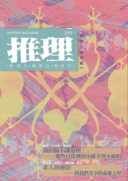
《推理》雜誌於1984年11月由「台灣推理第一人」林佛兒先生創刊，至2008年，共發行282期。停刊16年後，由台灣犯罪作家聯會取得獨家授權，於2024年6月復刊，2024年11月推出創刊四十周年紀念專號，並於2025年正式恢復月刊形式發行。295期主題：「靈」，則把視野推向更深的層次——在肉身退場後，靈魂如何以不同形式繼續在場。從動物的凝視、無聲的陪伴，到寓言、真實案件與跨媒介評論，本期展現「非人存在」在犯罪推理中的多重角色。讀者將在懸疑故事與評論專文中，看見動物作為證人、隱喻與命運之聲，開啟一場穿梭日常與靈異、現實與幻想的閱讀冒險。 《推理》雜誌長期作為本土作家發表創作的重要園地，在漫長的空白後，如何通過新世代的視角與對類型文學更寬廣的定義、詮釋，接續起犯罪推理在台灣的本土化發展？2025年重返每月一期發行！令人引頸期待！ 本期收錄內容如下： ◎封面故事◎ 昆蟲漫舞－花舞姿態II◎劉承濬 藝術家劉承濬自美術系出身，創作核心在於記憶與自我探索。童年動畫的華麗圖像、新藝術大師慕夏與克林姆的裝飾語彙，以及版畫與普普藝術的實驗經驗，皆在其作品中留下痕跡。近年的創作進一步延伸至「動物靈影」的關注：動物不只是陪伴，而是象徵靈魂在場的媒介。透過花卉與動物意象，他將生命片刻轉化為凝視與回聲，使作品在感性與理性之間展現多重層次。 ◎本期動態◎ 主編紀事◎洪敍銘 本期以「靈」為題，延續上一期「蝕」的思索，從消逝的形體轉向靈魂的在場。動物的凝視、低鳴與身影，不再只是陪襯，而是承載人類孤獨與欲望的替身。這是一場關於死亡與存在的追問，揭示生命不止於人類，更在無聲的注視裡留下另一種答案。 理解幸福哲學理論——《幸福森林》◎Yuki 一個童話氛圍的世界，與一個殘酷現實的調查線索，交錯出純真與沉重的對比。故事讓讀者看見天真無知背後的脆弱，也映照人類對幸福、親情與情感自覺的追問。這是一場理性與感性交織的推理之旅，帶來的不只是案件的懸疑，更是對「幸福」真義的深層思索。 新物種˙真實世界觀——《緝毒犬與檢疫貓》◎田羽心 在奇幻與真實交錯的世界裡，犬與貓不再只是日常寵物，而是攜手辦案的最佳拍檔。嚴謹的本格推理與獨特的獸人設定結合，讓日常場景也能成為充滿邏輯演繹樂趣的舞台。機關設計貼近現實，卻又帶有奇幻想像的魅力，使讀者在輕鬆氛圍中，感受到懸疑、推理與世界觀的多重驚喜。 犯罪推理大家觀◎喬齊安 本期專欄以「動植物」為題，帶來跨越民俗、社會與當代教育的深度思索。從百年來的虎姑婆傳說，到少年犯罪的真實映照，再到女性處境與社會制度的批判，透過評論、書評與文化觀察，揭示犯罪推理不僅是謎團破解，更是對人性與制度的直面凝視。每篇文字都如鏡子般折射出台灣與世界的現實，拓展讀者對推理文學的視野與理解。 ◎主題特輯◎ 我的貓不講道理——那些日常裡的小確幸與小麻煩◎顏瑜、艾德嘉、戴維森 當推理作家與評論者放下嚴肅的案件與理論，他們的日常其實也被一群「小室友」佔據。從凌晨三點的聲控喚醒，到一個冷淡卻默許的梳毛時刻，這些小麻煩與小確幸交織出最真實的生活樣貌。牠們不僅帶來陪伴，更成為靈感的來源，也讓我們看見文字背後最柔軟的一面。 【非人的靈影——與我們共享的命運之聲】 吃肉的房子◎張兆廷 童話中的野狼與三隻小豬，被重新放入殘酷現實。權力、平等與獵食的寓言，轉化為對社會秩序的冷冽諷刺。熟悉的故事被顛覆，留下對文明與暴力的深刻追問。 鷸蚌獵人◎白帽子 取材自《戰國策》，鷸蚌相爭的寓言被轉化為生態寓言與人性的試煉。珍珠的誘惑與生態的脆弱相互交纏，揭示人類貪婪與自然反撲之間的張力。 夢狼◎周志誠 夢境與現實交錯，一場與執法者的衝突，逐步演變為與野獸凝視的對峙。血與傷痕之中，潛藏著人心的野性與恐懼，讓讀者分不清醒與夢的邊界 荒謬◎桑丘 在實驗室的血色舞台上，超人與實驗體之間，掙扎於自由、宿命與復仇。科幻與寓言的交織，直擊人性選擇的兩難：是反抗體制，還是成為另一顆齒輪。 ◎牧童專輯◎ 從法庭到愛情的文學全能攻略——牧童訪談錄◎牧童／喬齊安整理 牧童擅以法庭為舞台，讓辯論與審判化作最扣人心弦的推理現場，也讓律師與助理的形象更貼近真實社會。本訪談帶出創作歷程與筆下人物的生命力，從專業到娛樂、從正義到情感，勾勒出台灣犯罪推理小說的另一條獨特路線。這不僅是一位創作者的心路歷程，更是一場關於故事與現實對話的深度探索 牧童小說選 妖貓◎牧童 在正義與仇恨的夾縫中，一場審判揭開人性最黑暗的深處。當法庭的冷峻語言與街頭的憤怒聲浪交織，讀者不只看見一樁命案，更直面關於「誰能定義正義」的尖銳提問。故事裡，那雙幽綠的瞳孔宛如妖異的注視，讓人不安，卻又無法移開目光。這是一段逼人直視法律、真相與靈魂裂縫的推理寓言。 妖貓之眼——在審判之外，凝視人心的裂縫◎晤婧 冷冽的綠色瞳孔，逼迫我們直視司法的荒謬與人心的裂縫。評論從小說出發，延伸至正義與報應的矛盾，揭開法庭程序背後的無力與哀痛。當復仇化作唯一的救贖，我們不得不思索：失去人性的審判，還能稱之為正義嗎？這篇評論如同鏡子，映照出讀者心底最難以承受的不祥真相。 ◎創作推理小說◎ 紅眼白文鳥◎Yuki 在日常生活的縫隙中，一隻眼神異樣的白文鳥悄然登場。牠的出現，看似微不足道，卻逐步牽動人際關係的暗流。那雙紅眼像是一面鏡子，折射出被忽視的心結與隱藏的祕密。故事以細膩筆觸營造出微光般的詭譎氛圍，提醒我們最細微的存在，也可能是命運轉折的關鍵。 演化◎郭耘 城市角落裡接連出現的貓屍，讓日常蒙上不安的陰影。追索的過程揭露了人與動物之間的衝突，也折射出環境變遷下倫理與科學的拉扯。這不只是一起事件，而是一場關於生命價值的嚴峻拷問。作品以冷靜而銳利的筆法，將推理的緊張感與現實的殘酷性緊密交織。 借狗殺人◎衍波 一次看似偶然的公車事故，將家庭、保險與死亡的問題推到檯面。真相或許隱藏在法律的縫隙，也可能藏在人心的算計。故事從日常瑣事出發，逐步展現環環相扣的布局。讀者在閱讀時，既能感受懸疑的張力，也能體會情感與現實之間的兩難與冷酷。 街燈與狗◎蘇那 荒山夜路，兩名工人在維修路燈時，意外遭遇異常的狗群。光影閃爍之間，真實與靈異交疊，帶出難以言喻的驚懼。故事將都市基礎建設的冷硬背景，與原始獸性的威脅並置，形成鮮明對比。讀者不僅置身於驚險現場，也會思索：恐懼究竟來自外在的黑暗，還是內心的陰影。 毛生◎洪碩鴻 細雨過後的春日山林，本該是清新與甦醒的氣息，卻隨著一段尋筍之行漸漸轉調。潮濕泥土與古老傳說交織出詭譎氣息，讓旅程充滿未知的危險。作品在青春談笑間注入陰森的暗示，使讀者在看似日常的情境裡，感受到傳說與現實邊界的模糊與不安。 棺人◎蕗舟 大正時代的東京，災後重建的繁華掩不住背後的陰影。一名來自殖民地的青年懷抱文學夢想，卻在異色出版與畸形展品的誘惑下逐步墮落。理想與現實、創作與欲望之間的張力，使他一步步走向無法回頭的深淵。作品既是歷史氛圍的再現，也是對人性黑暗面的探問。 國王餅的測驗・解決篇◎白帽子 冬至聚會上的國王餅遊戲，本應只是溫馨的節慶小插曲，卻意外變成推理與智謀的舞台。從切餅的方式到分配的順序，藏著嚴密的邏輯演繹。故事以輕快幽默的筆調，展現家庭互動的溫暖與機鋒，也讓讀者體驗在尋常餐桌上，推理精神如何發揮到極致。 ◎動物主題特輯◎ 復仇◎居伊．德．莫泊桑／陳典家譯 荒涼的海岸小鎮，一位年邁母親眼見兒子被殺，獨自與忠犬相伴，許下血海深仇的誓言。這篇短篇展現莫泊桑筆下的冷冽凝視：復仇不只是人性的驅力，也是一種孤絕到極致的命運必然。 美女，還是老虎◎法蘭克・斯托克頓／池水秀譯 在半文明國王的奇異制度下，罪犯的命運交由「兩扇門」決定——一邊是美麗婚姻，一邊是血腥死亡。寓言般的故事將「正義」轉化為一場殘酷遊戲，也拋出關於自由與命運的尖銳提問。 塞浦路斯蜜蜂◎安東尼・韋恩／輝彌譯 皮卡迪利廣場上的離奇死亡，竟與一盒外來蜜蜂有關。當醫學與毒理交織，案件揭開了「過敏」與「謀殺」之間的模糊界線。這部作品結合科學推理與冷峻懸念，展現經典本格的巧思。 殺了我，殺了我的狗◎羅依・維克斯／何去譯 一樁看似單純的謀殺案，因一隻稀有犬種的介入而掀起輿論風暴。人們開始質疑：真相究竟來自人類的推理，還是來自動物的直覺？案件因「狗的證詞」而倍添詭異，成為法庭與社會的話題中心。 ◎精選翻譯小說◎ 犯罪小說．銳如利刃的女子◎座光東平／既晴譯 船行大海，熱浪與海風交織，一名神秘女子的現身改變了甲板上的氛圍。她的身影宛如利刃般割開眾人的視線，也預示著危險與欲望的交錯。閱讀間，彷彿能嗅到海鹽與危機並存的氣息。 ◎推理集錦◎ 【神探Impossible Mission】2026最高檢察署臺灣司法美學創作系列紀實（二）◎許文琪 結合世界推理名作與司法專業，本系列以「能面檢察官」到「龍紋身的女孩」、「P=NP？」再到「猶大之窗」、「阿里阿德涅之線」為題，將冷峻辦案、數位證據、邏輯法則、法庭辯證與邏輯迷宮等核心觀念，化為貼近讀者的故事。它不只談小說，也讓司法概念具象化，提醒我們：細節、證據、邏輯與程序，才是追尋真相與守護正義的基礎。 【犯罪實案現場】洪若潭命案◎艾德嘉 豪宅、企業家族、焚化爐──這起震驚台灣社會的滅門案件，至今仍充滿未解之謎。遺書留下真相的幻影，子女的下落卻成為永遠的黑洞。文本透過日記、調查與社會流言，重構事件發展，也揭露了完美主義、家族矛盾與世俗壓力交織出的悲劇。它不只是案件重述，更是對人性執著與家庭命運的深度凝視。 【波光衍影】臨難狗免◎衍波 動物從來不是推理小說裡的配角。從愛倫坡的猩猩，到克莉絲蒂筆下的小狗，再到羊、海龜與鸚鵡，牠們可能是兇手、受害者，或最關鍵的證人。本文回顧經典與當代的多部作品，帶出動物如何改寫偵探小說的格局，並討論文學改編與影視演繹的差異。這是一場跨越物種的推理巡禮，也提醒讀者：真相，往往藏在最意想不到的凝視裡。 【另眼看劇】 《全領域異常解決室》◎祁牙鳥 日本劇集《全領域異常解決室》將神話、妖怪與都市傳說融合，並對照現代網路與 AI 的力量。評論凸顯了「新時代的神話」如何在科技與社群語境中重生，並提出人類是否正在神化自身、抑或淪為動物化反射的尖銳追問。這是一場跨越傳統與當下的思辨之旅。 《警視廳生物係》◎喬齊安 以日劇《警視廳生物係》為切入，本文探討「寵物 × 推理」的另類組合。看似輕快的劇集，其實隱含對飼主責任與生命倫理的深思。動物既是案件線索的拼圖，也是映照人性的鏡子。透過劇評，讀者得以重新理解推理故事裡「非人角色」的重要性。 【遊戲開始 Games start】《Duck Detective: The Secret Salami》◎賴特 當偵探換成一隻愛吃麵包的鴨子，嚴肅的推理瞬間變得詼諧有趣。這款德國獨立遊戲以卡通手繪風格和「填空推理」玩法，讓玩家在輕快的辦公室喜劇氛圍中，一邊觀察細節、一邊破解矛盾。篇幅不長卻節奏緊湊，每一場對話都暗藏笑點與線索。它不是硬派推理，卻能在解謎過程中帶來輕鬆又充滿驚喜的閱讀與遊戲體驗。 【詩意尋蹤】 妖物◎夜鳴 白色玫瑰◎安蔚 苦楝◎劉哲廷 【靈光乍現】 透過攝影之眼，看見台灣地景與文學間的千絲萬縷。
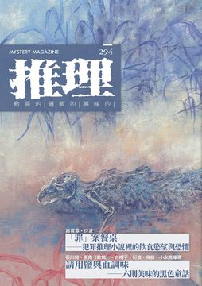
《推理》雜誌於1984年11月由「台灣推理第一人」林佛兒先生創刊，至2008年，共發行282期。停刊16年後，由台灣犯罪作家聯會取得獨家授權，於2024年6月復刊，2024年11月推出創刊四十周年紀念專號，並於2025年正式恢復月刊形式發行。294期主題：「蝕」，以飲食與推理的交織為出發點，將餐桌化為最危險的現場。食物本是維繫生命的日常，但當毒藥潛藏於佳餚、殺意偽裝在餐桌禮儀之中，每一次進食都可能成為不可逆的命運選擇。甜美與陰險疊映的黑暗寓言，讓讀者在熟悉的滋味裡品嘗到不安與顫慄。 《推理》雜誌長期作為本土作家發表創作的重要園地，在漫長的空白後，如何通過新世代的視角與對類型文學更寬廣的定義、詮釋，接續起犯罪推理在台灣的本土化發展？2025年重返每月一期發行！令人引頸期待！ 本期收錄內容如下： ◎封面故事◎ 在現在與還未到來之間◎洪昕 封面藝術家洪昕以膠彩畫細描殘敗的生命形象，作品〈在現在與還未到來之間〉，彷彿在時間流沙中捕捉消逝的溫柔瞬間，映照出死亡與重生的循環，也回應文本對存在消逝與生命印記的凝視，讓觀者在頹敗與生機間看見另一種永恆。 ◎本期動態◎ 主編紀事◎洪敍銘 當美食成為謀殺工具，每一口食物都可能是致命的誘惑。本期雜誌特輯「蝕」，深入探討「食物」與「死亡」的微妙關聯，透過精彩的美食謀殺案例，揭示了飲食在犯罪推理中的獨特角色。從一碗看似無害的熱湯到一份可能致命的沙拉，每一道菜都蘊藏著潛在的危險，讓人在享受美味的同時，也不得不對食物背後的意圖保持警覺。這不僅是一場味蕾的盛宴，更是一場充滿懸疑的智力遊戲。 危險的味道，是苦甜交織——《在我們分手以前》◎Leo 在《在我們分手以前》中，文善以其獨特的筆觸將愛情、甜點和推理糅合，創造出一個既日常又超脫的故事世界。故事從一間甜點店展開，三位主角在一次意外後，各自的愛情和友情開始交織出微妙的張力。每一道甜點不僅是味蕾的享受，更巧妙地隱藏著推進故事的線索，讓每一次的斷裂與重聚都充滿懸疑，讓人在甜蜜與苦澀中尋找真相。 犯罪推理大家觀◎喬齊安 《犯罪推理》特輯以「美食」為題，首先呈現高雲章《美食謀殺》，六篇短作在人性與餐桌之間失控，並以「以美食之名」系列致敬本格推理經典，展現料理與謎團的兩面性。日本結城真一郎《無名之星的悲歌》則以「記憶買賣」隱喻失智救贖，交織青春與純愛的深刻追問。韓國全建宇《霧迷宮》以死亡遊戲結合科學理念與迷宮逃脫，營造極限驚悚的娛樂感。三部作品共同揭示推理跨越文化邊界的驚奇與可能 ◎主題特輯◎ 「罪」案餐桌——犯罪推理小說裡的飲食慾望與恐懼◎高雲章、衍波 在推理小說的世界中，飲食不僅是生活的調味料，更是詭計與驚悚的發酵劑。高雲章與衍波透過精彩的筆觸，探討了犯罪推理文學中飲食的象徵意義，從聖經中的該隱與亞伯故事切入，展開對飲食與人性陰暗面的深刻解析。他們不僅回顧了經典推理作品中的飲食情節，更揭示了如何透過這些看似日常的元素，揭露人心中最深處的慾望與恐懼。本文是一場味覺與心理的雙重盛宴，讓人在品嚐之餘，不禁對人性的多面性深思熟慮。 【請用鹽與血調味——六則美味的黑色童話】 特殊的鹽◎石川毅 當學校的家政課突然變成了一場自備食材的料理大戰，誰能想到這其中竟藏著一段不為人知的秘密？一份特殊的白色粉末，一次意外的超商偶遇，學生之間的小動作逐漸揭開了一連串的疑團。這不僅是一場關於料理的競賽，更是一次青春的試煉和偵探遊戲。究竟這份神秘的白色粉末是什麼？一場學生間的智慧較量即將展開。 便當◎魚肉（飲鴆） 當午餐時間變得不尋常，一個滿身酒氣的陌生人與主角在街角的相遇引發了一連串意外的事件。面對美味的便當，兩人之間的對峙逐漸升級，而午餐的每一口似乎都在預示著即將發生的不可思議。在這個看似平凡的日常背後，隱藏著什麼樣的秘密呢？跟隨主角的視角，逐步揭開這場午餐的真相。 小瓷杯◎白帽子 當蘇繁榮偶然進入一位半隱退的陶瓷藝術家，火窯先生的生活，他未曾料想到一只破損的小瓷杯將牽引出一連串的事件。這只看似普通的瓷杯，其緣上有著明顯的缺口，卻隱藏著不為人知的秘密。當一群怒氣沖沖的訪客突然闖入，揭開了火窯先生過去不為人知的一面，蘇繁榮的生活也因此起了微妙的變化。在一個安靜的夜晚，小瓷杯的聲響成了不祥的預兆。 愛之過腎◎衍波 在台北市的一間高級公寓裡，古直理刑警正與一位曾經風華絕代的前模特兒柳太太對話。此次探訪，原本只為釐清柳朗波先生因腎臟移植失敗而過世的疑點，卻意外揭開一連串的家庭與醫療秘辛。柳太太的冷靜與古刑警的堅持，將這場對話推向一個又一個高潮，每一個細節都可能是解開謎團的關鍵。在這場豪宅中的心理對決中，真相往往比表面更加錯綜複雜。 炸◎飛樑 在一個陰雨綿綿的日子，一群老友在熟悉的小店中重逢，外頭的雨聲與廚房的油炸聲交織成一場怪異的交響樂。他們的聚會似乎不僅僅是為了品嘗那金黃酥脆的豬排，而是有著更深層的目的。隨著雨勢的增強，過去的陰影和秘密逐漸浮出水面，一場看似普通的聚會，卻悄悄地鋪陳出一幕幕驚心動魄的戲碼。 團圓◎小水熊庫瑪 在一個久違的家宴中，一位老兵用自己的老舊義足在廚房裡忙碌，準備著滿桌的美味佳肴。這一天，他的最小的兒子也從戰場上光榮歸來，全家人的期待和喜悅在空氣中凝結。然而，當夜幕低垂，桌上的肉類和狗牌之間，隱藏著的故事卻是如此的沉重與辛酸。家的溫暖與戰爭的殘酷交織，這場團聚背後隱藏著怎樣的秘密？ ◎葉桑專輯◎ 餘暉未盡——葉桑訪談錄◎葉桑／白帽子整理 葉桑，一位曾經在文壇風光無限的作家，經歷了創作的高峰與沉寂，如今再度以《餘暉未盡》這部作品回到讀者視野。文章透過深入的訪談，揭露了他如何在花甲之年重燃對文字的熱情，並且在推理與愛情小說之間找到獨特的創作平衡。這不僅是對葉桑創作歷程的回顧，也是對台灣推理文學發展的一次深刻探討。讓我們跟隨葉桑的筆觸，再次體驗那些年代流轉下的文學魅力。 葉桑小說選 生日蛋糕or葡萄酒◎葉桑 一樁錯綜複雜的疑案：富商車禍身亡、繼室與舊情人重燃舊愛、少女日記裡的陰影，以及餐桌上的葡萄酒與生日蛋糕，究竟哪一個才是致命關鍵？當倪盛樑命喪趙家客廳，真相在「情愛糾葛」與「科學詭計」間浮沉。故事結合藥理學、昆蟲學與人性的幽微，描繪少女的冷冽心機、繼母的愛與犧牲，以及命運誤置下的荒謬死亡。這是一則跨越家庭矛盾與理性推理的懸疑敘事，讓讀者在真假之間反覆追問：誰才是真兇，毒藥又是從何而來？ 今晚你選哪道菜？◎高雲章 在一場看似普通的生日慶祝中，一場致命的遊戲悄悄上演。趙夫人與舊情人共進晚餐，慶祝三十歲生日，卻在葡萄酒與生日蛋糕之間隱藏了致命的秘密。當一位賓客突然倒地身亡，偵探葉威廉被捲入這起謎案，開始揭開一層層的謊言和背叛。每個角色都可能是凶手，每個細節都可能是關鍵線索。在這場智力與情感的對決中，真相往往比想像中更加曲折。 ◎創作推理小說◎ 珍珠奶茶◎金柏夫 在台北一家風格獨特的手搖杯店裡，科北和華生兩位偵探小說愛好者，正享受著悠閒的下午時光。突然，一場意外將他們捲入一起謎團重重的案件中。當一名中年男子在吧台意外倒下，手中的珍珠奶茶散落一地，科北的偵探直覺告訴他，這不僅僅是一場普通的事故。隨著調查的深入，一杯看似普通的珍珠奶茶，竟逐漸揭開了背後令人震驚的秘密。 國王餅的測驗˙事件篇◎白帽子 以一場冬至聖誕大餐為背景，把法國傳統甜點「國王餅」化為推理舞台：誰能吃到餅裡的小瓷偶，成為一日國王？故事將家庭對話、歷史典故與日常細節編織成充滿戲劇張力的場景，笑語之間暗藏不可能的謎面。作者以機智的筆觸營造懸念，同時提醒讀者：推理不只是一場破解遊戲，更是一種對奇蹟、偶然與真相的抉擇。 乘願再來的菜脯蛋◎高雲章 在一個充滿懸疑與神秘的早晨，阿根如往常般進入廚房準備開始一天的工作，卻意外發現葉普善老師靜坐在辦公桌旁，已經永遠停止了呼吸。桌上留下的一張紙條，只有簡單幾個字："三十年後，乘願再來。"這句話背後隱藏的意義是什麼？而這一切又與一家素食連鎖餐廳有何關聯？隨著一連串的疑問展開，一段深埋多年的秘密即將被揭開。 酒不會說謊◎姬雪 夏日的夜晚，街道上行人稀少，但警局的燈光依舊明亮。一宗大型銀行搶劫案終於有了突破，年輕警員鄒磊克疲憊不堪，正準備結束漫長的一天。然而，就在他即將踏入電梯的那一刻，隊長焦永廉的呼喚讓他停下腳步。一個意想不到的消息將他拉回案件的漩渦中：他心儀的女神，竟然成了案件的嫌疑人。在這場看似平靜的夏夜，一場更大的風暴正悄然醞釀。 ◎名家作品大觀◎ 偵探小說十誡◎羅納德・諾克斯／陳典家譯 〈偵探小說十誡〉深入探討了偵探小說的本質與構成，明確區分了偵探小說與其他類型的敘事分野。諾克斯認為，真正的偵探小說應該專注於解謎，並在故事開始時就設置好謎團，引發讀者的好奇心。他批評那些只追求驚悚效果而忽略智力挑戰的作品，並提出偵探小說應遵循的規則，以確保故事的公平性和智力遊戲的精神。這篇評論不僅是對偵探小說愛好者的啟發，也是對寫作者的指南。 直觀破案◎羅納德・諾克斯／陳典家譯 麥爾斯・布萊頓，一位自認為笨手笨腳的調查員，卻意外地在一次火車旅途中，被捲入一起神秘的富翁死亡案件。這位富翁曾沉迷於東方神秘主義，並聲稱發現了長生不老的秘密，最終卻在一個封閉的實驗室中餓死。布萊頓在未預料的情況下，必須利用他的直觀來揭開這起看似不可能的死亡之謎。 動機◎羅納德・諾克斯／陳典家譯 在一場充滿謎團的晚宴中，一位知名辯護律師與戲劇評論家的辯論意外揭開了一段不為人知的故事。這位律師，一生致力於為客戶辯護，卻在一次偶然的聚會中，講述了一個關於偵探小說與現實交錯的案件。這個案件涉及一位年近中年、看似病懨懨的男子，他在聖誕節期間選擇前往一家豪華卻古怪的酒店，與一位有爭議的作家建立了意想不到的友誼。在這個看似平凡的假期背後，隱藏著什麼驚人的秘密？ 頭等車廂探案◎羅納德・諾克斯／陳典家譯 在一個寒冷的倫敦夜晚，夏洛克・福爾摩斯正準備會見一位看似平凡的女傭。這位女傭，來自英格蘭中南部的富裕家庭，帶來的不僅是她的故事，還有一個謎團，足以挑戰福爾摩斯的推理極限。當她謹慎地陳述家中的不尋常變故時，福爾摩斯的眼中閃過一絲光芒。隨著一張神秘的字條出現，這位偵探將發現，這不僅僅是一個簡單的家庭糾紛，而是一個隱藏在日常生活表面下的深層秘密。 推理小說的立法者──羅納德・諾克斯◎白帽子 他是神父，也是推理小說的立法者。羅納德・諾克斯以犀利諷刺的《街壘廣播》揭露媒體誇張渲染的荒誕，更在1929年提出〈偵探小說十誡〉，為推理文學建立規範，抵抗粗製濫造的情節與不誠實的謎底。文章不僅描繪他獨立的宗教抉擇與大眾文化影響，也提醒百年之後的我們：東方的推理創作者與讀者正以同樣的熱情延續這份精神，在新的時代開拓屬於自己的可能。 ◎精選翻譯小說◎ 犯罪小說・宛如露水般消逝的四條生命◎座光東平／既晴譯 在一個靜謐的台北郊區，一家年久失修的雜貨店裡，隱藏著家族間的糾葛與秘密。店主喜兵衛與他的妻子阿熊，表面上經營著木炭和薪柴的生意，實則背後故事遠比這更加複雜。阿熊的繼母阿好和她的女兒阿絲，每日在這壓抑的氛圍中苟延殘喘。當外界的同情無法進入這座老舊的雜貨店，內部的矛盾與冷漠卻日益加深。在這樣的環境下，一場意料之外的衝突正悄然醞釀。 ◎推理集錦◎ 【神探Impossible Mission】2026最高檢察署臺灣司法美學創作系列紀實（一）◎許文琪 以「偵查」為核心，從福爾摩斯到《時間的女兒》，再到微物鑑識，將經典推理的邏輯方法映照檢察官辦案現場。計畫結合學界與出版界觀點，融入布洛克「斷案如考史」與舍斯托夫的哲學視野，呈現一場推理與司法的深度對話。透過每月主題故事與名言選摘，提醒我們：再不可能的謎團，也能以證據與思辨逐步接近真實。 【犯罪實案現場】來吉村毒殺案◎艾德嘉 1970年嘉義阿里山來吉村，一場早餐引發的中毒事件，震動全台：兩死四昏迷，唯一倖免的少女成為矚目焦點。案件牽動家族恩怨、繼親矛盾與財產糾葛，調查過程更伴隨供詞翻轉與真相疑雲。這不僅是一樁震驚社會的毒殺案，也是一則映照人性弱點與鄉村陰影的故事。當親情與私心交纏，何者才是真相，何者又只是權力與慾望下的幻影？ 【灰色檔案室】何謂反恐？◎輝彌 輝彌專欄〈何謂反恐〉以電影《凌晨密令》為切入點，透視情報員在十年追捕中的堅執與代價，並梳理「國家安全」與「國土安全」的法律脈絡，揭示反恐如何成為國家行動的語言工具。文章同時檢視中情局長「手到擒來」的政治爭議，折射安全、正當性與個人虛無感的交織矛盾，讓讀者思考：當「恐怖分子死了」之後，真正被守護的究竟是國家，還是國家的說詞。 【另眼看劇】狐狸與狼才是我們的「小市民」——「小市民系列」動畫◎菜仔 當小市民不再只是小市民——菜仔的深度解讀帶你重新認識「小市民系列」動畫。這部作品透過四季分別的故事，揭示了主角們在追求日常生活中的自我認知與成長。菜仔以其獨到的觀點，分析了角色間的微妙互動與內心轉變，並探討了這對狐與狼如何在現實與理想間掙扎，最終找到屬於自己的道路。這不僅是一場視覺盛宴，更是一次心靈的洗禮。 【遊戲開始 Games start】《Death by Chef’s Knife Case File》◎賴特 當一位名廚在廚房中央慘遭殺害，刀尖下的血跡是否隱藏了不為人知的秘密？《Death by Chef’s Knife Case File》不僅是一款推理桌遊，更是一場智力與直覺的考驗。玩家在這場遊戲中扮演偵探，無需劇本引導，自行搜集證據、分析物證，並建立時間軸，逐步揭開案件背後扣人心弦的真相。每一個細節都可能是關鍵，每一次遊玩都是全新的挑戰。 【詩意尋蹤】 稠密性的你◎百綠 微微◎田羽心 永遠在一起◎小柔 【靈光乍現】 透過攝影之眼，看見台灣地景與文學間的千絲萬縷。
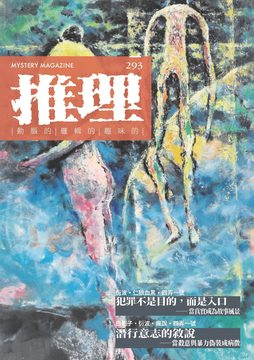
《推理》雜誌於1984年11月由「台灣推理第一人」林佛兒先生創刊，至2008年，共發行282期。停刊16年後，由台灣犯罪作家聯會取得獨家授權，於2024年6月復刊，2024年11月推出創刊四十周年紀念專號，並於2025年正式恢復月刊形式發行。293期主題：「疫」，從醫療與疾病書寫出發，交織當代人對生理崩解、心理幽微與社會裂縫的多重想像。除了深入探討暴力如何偽裝成病徵，如何從症狀溯源至心靈病灶，反映後疫情時代我們對身體、制度與人性的焦慮外，也涵蓋醫病關係、保險制度與罕病募資的現實反思，結合推理元素與社會洞察，展現「讓故事成為真相的風景」之創刊理念與延續。 《推理》雜誌長期作為本土作家發表創作的重要園地，在漫長的空白後，如何通過新世代的視角與對類型文學更寬廣的定義、詮釋，接續起犯罪推理在台灣的本土化發展？2025年重返每月一期發行！令人引頸期待！ 本期收錄內容如下： ◎封面故事◎ 三人在方圓之間◎江志正 封面藝術家江志正的作品〈三人在方圓之間〉，更是巧妙地映射了疾病如何超越生理的侵襲，觸及心靈的深處，並在文學的脈絡中尋求可能救贖的主題，揭示了人與人之間在無形的摩擦與回響中，如何尋找共處的可能性。 ◎本期動態◎ 主編紀事◎洪敍銘 疫情不只是疾病，更是情感錯位與制度裂痕的顯影。本期以「疫」為主題，透過小說與藝術，描繪人如何在恐懼中尋找共處的可能。從科技進化到人性殘缺，我們不只是見證變異時代的創傷，更在文字中追問：面對失序與孤寂，我們是否還能理解彼此？ 傷病外的煩惱——《祈願的病歷表》◎田羽心 醫師也是偵探？臨床推理小說《祈願的病歷表》，以新手醫師的實習過程為軸，揭開病歷背後的隱情與制度困局。從疑雲重重的傷口、扭曲的保險理賠，到幽微的人性動機與醫病關係，層層剝繭，真相往往藏在人心最深處。一場關於診斷與共感的醫療探案，邀你深入現場，體會醫者如何在病灶之外，醫治人生難題。 犯罪推理大家觀◎喬齊安 從冰冷手術刀到病態心理的迷宮，三部來自美、日、韓的推理小說揭露醫療與疾病背後的人性與黑暗。從美國腦切除術的悲劇、日本戰前心理罪案，到韓國幽靈韓醫院的療癒轉生，每一篇都是一場對疾病、創傷與社會制度的深度對話，也是對恐懼與救贖的小說回聲。 ◎主題特輯◎ 犯罪不是目的，而是入口——當真實成為故事風景◎衍波、仁狼血黑、四弄一號 在犯罪推理小說的世界中，每一位作者都是謎題的設計師。四弄一號、衍波、仁狼血黑這三位各具特色的作家，透過林佛兒獎的舞台展現了他們對於犯罪故事的獨到見解。四弄一號以其理工背景，追求邏輯的嚴謹；衍波則從魔幻詩意的角度切入，探討社會與人性；仁狼血黑則從自身的低谷經歷中，找到寫作的救贖。這些作者不僅是故事的講述者，更是時代的觀察者，他們的作品不僅是對犯罪的描繪，也是對當代社會的深刻反思。 【潛行的意志——當殺意與暴力偽裝成一種病徵】 賣火柴的普羅米修斯◎白帽子 在遠古的洞穴裡，一名尼安德塔人遇見了一位神祕的小女孩，手中搖曳的火苗即將改變歷史。從火的贈與到買賣的誕生，寓言式的對話逐步揭露文明與交換的本質。當火光照亮夜色，也照見未來的代價與選擇。這是一場關於進化、語言與慾望起源的奇幻想像。 手術台上的賭注◎衍波 一場手術失敗，掀起婚姻與道德的漣漪。當醫療意外牽動家庭與名譽的風暴，一位看似平凡的妻子，內心其實盤旋著長年無法化解的秘密與試煉。手術室內的每一秒都充滿壓力，而真正的風險，或許從來不在刀鋒之上，而是藏在人心深處的念頭。 潛伏期◎瘋說 在病毒肆虐的近未來，三位失業青年組隊搶劫，試圖從混亂中翻轉命運。口罩、疫苗、體溫計成為生活日常，也成為彼此猜疑的引信。當友情與利益產生裂縫，當症狀悄然現身，一場看似簡單的分贓對話，逐漸流露出不安的氣息。恐懼，正在悄悄擴散中。 殘影◎四弄一號 捷運車廂內，一場突如其來的攻擊事件引發連鎖暴力潮，媒體瘋傳、警方緊張追查，兇手無一例外皆陷入怪異的沉默與失控。是精神疾病？社會壓力？還是某種潛藏的暗示？在文明日常的影像流中，真相可能只藏在每一秒你未察覺的「那一格」畫面裡。 ◎路邊攤專輯◎ 真正的恐懼不是來自於鬼，而是不知道接下來會發生什麼事◎路邊攤／喬齊安整理 當夜幕低垂，街燈下的路邊攤成了各種靈異故事的發源地。在這些看似平凡的地方，每一個不經意的小動作，每一次無意的回眸，都可能是通往另一個世界的入口。一個男子在紅綠燈前的猶豫，一聲突兀的咳嗽，或是一個密閉空間中的窸窣聲，這些都可能是日常生活中的異常線索。當你開始注意這些細節，你會發現，恐懼不是來自於明顯的怪物，而是來自於那些看似正常卻又不尋常的小異常。你準備好探索這些隱藏在日常之中的秘密了嗎？ 知情的責任，與漠視的業報——《解謎前，請投幣》◎Leo 一台流著血的販賣機，販售的不只是報紙，而是未竟的真相與記憶的殘響。從都市傳說出發，融合媒體倫理與社會控訴，這部作品讓靈異現象成為現實傷痕的回聲。當資訊化為詛咒，當你選擇知情，也同時選擇承擔責任。投下一枚硬幣，換來的可能是你不願直視的真相。 將鬼故事寫成一份早餐——《早餐店阿姨什麼都記得住》◎M.S.Zenky 在熟悉的台式早餐店裡，記憶力驚人的阿姨與擁有陰陽眼的少女，聆聽鬼魂的未竟心願。本書以六則短篇交織出靈異與療癒，用溫柔筆觸串起人與鬼、人與人之間未竟的連結。恐怖不再是主角，陪伴與理解才是關鍵。這是一部屬於台灣日常的暖心靈異故事，記得點份早餐，也記得那些被遺忘的情感。 也許我們從未正常——《異常》◎慣看春秋 每個人都不正常一點，但哪裡是底線？本書以近乎平淡的語調書寫不平常的癖好與欲望，在最親切的日常對話中，悄悄滲出令人不安的違和感。不是鬼故事，卻比鬼還可怕。這是一部關於現代社會中「異常」與「正常」邊界的深刻凝視，也是對自由與共感的反思與叩問。 ◎創作推理小說◎ 封樓夢◎思婷 疫情封鎖的不只是公寓，還有人心與真相。在全民恐慌的SARS年代，一名被困警員在頂樓吶喊，電視裡的他成了全民圍觀的對象。媒體追逐、政治算計、社會冷漠如陰霾壓頂。本作以強烈戲劇性捕捉恐懼時代的荒謬現實，是一場關於隔離、誤解與求生本能的鏡面夢魘。 慢・蔓・謾◎f.c. 當疫情讓世界按下慢速鍵，家中卻悄然醞釀一場失速的崩解。父親的焦躁、母親的隱忍、孩子的沉默，在無所事事的日常裡漸次裂解。緊繃與無力交織成一場無聲的家庭困局。本作緩步推進情緒張力，在最平凡的場景中挖掘出深層的不安與傷痕，是疫情時代極具共鳴的家庭寓言。 遺書◎Yuki 當遺書成為唯一能說真話的地方，我們是否才終於被聽見？小說透過一封封寫給親人的信，串連出封閉空間中的無聲呼救與深層告白。字句間流動的不只是死亡焦慮，更是對生存意義的質疑與人我關係的反思。這是一部以極簡筆調寫下的深切情感紀錄，也是一種無聲時代的告白式抗議。 毀滅摸起來是什麼樣子◎鄭琬融 在病痛與慾望交織的夜裡，她用身體與記憶對抗內心的崩塌。小說以感官書寫揭露病理與心理的邊界模糊，情慾、疼痛、懷舊在語言中彼此糾纏。當「毀滅」不再是劇烈的爆炸，而是日復一日的慢性腐蝕，這部作品以詩意筆觸描繪現代人的渴望與缺席，撕裂也撫慰著我們的傷口。 ◎名家作品大觀◎ 古抄本詛咒案◎查爾斯・戴利・金／既晴譯 在紐約市中心的一座著名博物館裡，一名不情願的守夜人發現自己被困於一個地下室中，只有一本古老的阿茲特克抄本作伴。當夜幕降臨，博物館的燈光突然熄滅，周遭一片漆黑，只有窗外微弱的光線透進來。隨著時間的流逝，守夜人開始感受到一種壓迫感，彷彿黑暗中有什麼東西在潛伏。他開始懷疑那本抄本上的古老詛咒是否真的存在，而這一夜，似乎將要揭開這份詛咒的真相。 實體幻象案◎查爾斯・戴利・金／既晴譯 當瑪麗將高爾夫球桿扔進跑車後，一段充滿懸疑與情感糾葛的故事開始展開。在高速行駛的車中，瑪麗與她的兄弟談起了薇樂莉的不尋常變化，這位金髮女子似乎隱藏著一些不為人知的秘密。她的新居、她的精神狀態，以及一位神秘醫生的即將到來，都預示著一連串的謎團即將被揭開。在這個故事中，每個轉彎都可能是新的發現，每段對話都可能藏有線索。 推理小說界的赫胥黎──談查爾斯・戴利・金◎白帽子 他是心理學博士，也是推理小說界最被低估的鬼才之一。查爾斯・戴利・金融合心理學專業與燒腦詭計，打造「海陸空三部曲」，並附上精巧線索索引，挑戰讀者推理極限。從豪華郵輪、鐵道列車到高空飛機，每部作品皆知識含量爆表，熱愛智性推理的讀者不可錯過。這場被遺忘的思辨盛宴，終將重見天日。 ◎精選翻譯小說◎ 不是管家做的◎克蕾格・萊斯／A.Z.譯 當約翰・馬隆的眼睛再次睜開，面對的不僅是一位絕望的美女，還有一個他無法拒絕的案件。這位女士堅稱自己無辜，警方卻認為她涉嫌謀殺自己的丈夫。在存款創新低的壓力下，馬隆只能接下這個案子，開始一場充滿疑團和危險的調查。他必須擺脫個人困境，揭開一連串謎團，找出真相。在這過程中，每一個細節都可能是關鍵，每一個人都可能是嫌疑犯。 三右衛門之罪◎芥川龍之介／既晴譯 在寒風凜冽的文政四年，一場未遂的暗殺引發了一連串血腥的復仇與誤解。加賀藩的武士細井三右衛門，在一次意外的自衛中殺死了企圖暗殺他的同僚之子。當謀殺與榮譽交織時，一位智慧而謹慎的藩主決定親自審問，揭開真相的同時，也暴露了人性中的矛盾與脆弱。這是一個關於忠誠、榮譽與復仇的故事，每一個決定都可能是生與死的關鍵。 ◎推理集錦◎ 【犯罪實案現場】張桂卻命案◎艾德嘉 她曾被讚為「模範國民」，在最貧病交迫的時刻，照顧癱瘓丈夫與兩子，感動全台。卻在接受社會掌聲後一年離奇身亡。是自殺？是謀殺？本作重返1959年台南眷村，一層層揭開賢妻神話背後的壓抑、暴力與沉默，寫實而震撼地再現一樁歷史社會案件，是關於性別與權力的深度凝視。 【波光衍影】病從口入，禍從口出◎衍波 當疾病不只是病毒，也可能是罪行的共犯。本篇評論帶你橫越災病與犯罪交錯的文學疆界，從科幻災難、醫療驚悚到心理病理，從克莉絲蒂的德國麻疹謀殺案到現代電影《富人流感》，一一揭示「病」如何成為推理的線索、「禍」如何潛藏於言語與制度之中。一本讓人既動腦又警醒的推理閱讀導覽。 【另眼看劇】《天久鷹央的推理病歷表》◎田羽心 當怪醫遇上怪案，診療室秒變偵探辦公室！醫術超群、記憶驚人卻行事乖張的天久鷹央，帶著實習醫師助手搭檔，抽絲剝繭破解疑難病症與詭異命案。從藍血人到河童鬼火，醫學知識成為偵破真相的關鍵武器。結合醫療科普與本格推理，節奏緊湊又知識滿載，是一場腦力與想像力的療癒系推理之旅。 【遊戲開始 Games start】《Before I Forget》◎賴特 你無須破案，只需記得。本作以阿茲海默症患者為主角，捨棄傳統解謎套路，轉以記憶重建與情感追尋為核心。每一次推開門，都是通往失序的現實與斷裂的自我。遊戲簡約溫柔，卻道出最深層的恐懼：當語言與意義消散，我們還剩下什麼？一場值得記住的遺忘之旅。 ◎詩意尋蹤◎ 病◎比比墨 退疫◎田羽心 【靈光乍現】 透過攝影之眼，看見台灣地景與文學間的千絲萬縷。
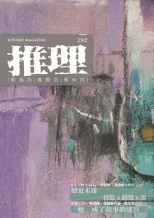
《推理》雜誌於1984年11月由「台灣推理第一人」林佛兒先生創刊，至2008年，共發行282期。停刊16年後，由台灣犯罪作家聯會取得獨家授權，於2024年6月復刊，2024年11月推出創刊四十周年紀念專號，並於2025年正式恢復月刊形式發行。292期主題：「她」，聚焦女性在推理敘事中的多重位置與象徵張力。從角色設定到敘事視角，本期檢視「她」如何成為被凝視的對象、行動的主體、乃至於罪與真相的交會點；以女性為主體，勾勒當代台灣女性創作者對創傷、誤解與愛的書寫姿態，這不僅是一本雜誌，更是一場對「她」的凝視、傾聽與解謎。 《推理》雜誌長期作為本土作家發表創作的重要園地，在漫長的空白後，如何通過新世代的視角與對類型文學更寬廣的定義、詮釋，接續起犯罪推理在台灣的本土化發展？2025年重返每月一期發行！令人引頸期待！ 本期收錄內容如下： ◎封面故事◎ 心之悠泊◎關紫心 封面作品〈心之悠泊〉由藝術家關紫心以油彩與炭筆創作，運用錯綜線條構築出象徵安穩與不安並存的內在港灣，呼應本期小說中「她」的情感張力與漂泊身影。港灣既是庇護之所，也是重新出發的勇氣之源，圖文之間共構一場凝視女性經驗與內在世界的閱讀航程。 ◎本期動態◎ （代）主編紀事◎藍念初 本期聚焦「她」，從性別作為文學主題與社會符號出發，探索犯罪小說中女性形象的建構與反思，並指出敘事視角與題材選擇背後潛藏的倫理與情感拉力，形成一場閱讀與書寫的雙重審視。 青春的校園之謎，就由星期三的魔女來破解——《褪色的我與染上夕色的妳 九色曼荼羅遊戲》◎風說 旅日作者風說以細膩筆觸剖析《褪色的我與染上夕色的妳 九色曼荼羅遊戲》，深刻解讀校園日常推理背後的心理操控與惡意霸凌。她認為故事不僅是推理小說，更映照現實中無處不在的權力壓迫，透過美術天才少年的遭遇，揭示那些「為你好」話語下的隱藏傷害，呼籲孩子們勇敢識破惡意、尋求援助。 犯罪推理大家觀◎輝彌 本期「犯罪推理大家觀」聚焦三部風格迥異的作品，展現推理小說如何直探人性的幽微與社會的斷裂。《月色真美》將都市傳說與個人記憶交錯，映照姊妹關係中難以言說的愛與怨，提出理解與傷害之間的倫理提問；《信任測試》以心理操弄為核心，拆解信任如何轉化為犯罪契機，並討論創作者如何將真實經驗轉化為敘事動力；而《繼父》則以溫暖筆觸描繪一名失手小偷與雙胞胎孩子之間的意外親情，在輕巧推理中融入婚姻、家庭與社會期待等現實難題。三部作品共同突顯現代推理敘事不再只是解謎的技藝，而是一場對心理結構、關係動力與結構性暴力的深層凝視。透過這些書寫，推理小說得以成為理解社會與自身的另一種閱讀方式。 ◎主題特輯◎ 戀愛未遂——情慾 x 錯覺 x 罪◎A.Z.、M.S.Zenky、李奕萱、海盜船上的花 「戀愛未遂」不是浪漫終止，而是錯覺的開端。本期專題集結A.Z.、M.S.Zenky、李奕萱與海盜船上的花四位女性作家，書寫那些在愛與罪之間搖擺的故事。她們以不同視角描繪當代女性面對的情感困境——從情慾錯置到關係崩壞，從社會評分到身份偽裝。愛情在這些小說中，化為欲望、誤解與懸疑的交織現場。作家們不僅以推理筆法描摹情感破綻，也讓每段戀曲都潛藏危機，讓每次靠近都可能是墜落的前奏。她們讓我們明白，戀愛未遂，不是失敗，而是一場現代社會情感結構的錯置與反思，罪，就在其中悄然生根。 【她成了故事的迷宮】 程序上的女兒◎艾沐 一位失去女兒的父親，運用先進科技創造了完美的人工智慧，植入了人類的情感模式與記憶數據庫。當這個擁有十五歲少女外貌的存在甦醒時，她以精密的程序分析著眼前男人的每一個表情與動作。然而，在看似完美的重逢背後，卡頓的程序與無法達標的情感指數，似乎暗示著某種不為人知的真相正悄悄浮現。 D!e◎1N 在重複上演的夢境中，洛月直面童年創傷與潛藏意識的裂痕。故事以懸疑與心理迷宮鋪展敘事，帶領讀者穿梭記憶、幻象與現實的邊界，逐步揭示壓抑與自我修復的過程。以夢為門，敲響一場關於生存意志與內在和解的低語。 女巫◎陸冠臻 一個陌生人來到詭譎的小鎮，目睹了一場令人不寒而慄的獵巫行動。傳言中有人擁有血紅雙眼，會在深夜奪取靈魂，但真相究竟為何？當恐懼與猜疑在人群中蔓延，一個女人從有名有姓變成「那女人」，最終淪為眾人口中的「女巫」。火把照亮的不只是黑夜，更映出人性最深層的秘密，而那雙真正血紅的眼睛，或許並非屬於被指控的人。 她◎琉璃異色貓 閃爍的燈光下，一個以扇掩面的神秘美少女出現在疫苗診所中。當流浪漢接連消失，兒童失蹤案例攀升，一場前所未見的瘟疫席捲全城時，義工伍諾言意外發現了這個令人不安的身影。全叔的警告言猶在耳，而那個美少女的真實身份與她在政府機構中的詭異行為，似乎隱藏著更加駭人的秘密。 我想跟你在一起◎紫玖島 花鐘前的眼淚總是為了愛情而流，那位嬌小女孩的每一次哭泣都被默默注視著。水塘化身的男子早已暗戀許久，當女孩只對花朵傾訴心事時，他心中的妒忌與渴望日漸加深。山神的一個承諾，讓他有了實現願望的機會，於是一個關於祕湯的傳說悄悄植入她的夢境中，引誘著她前來尋找那個美麗的謊言。 ◎沙棠專輯◎ 小說的練習與繪測——沙棠訪談錄◎沙棠／藍念初整理 本篇訪談從創作歷程出發，呈現沙棠如何將小說視為一場關於觀看、記錄與抵達的實驗過程。她強調，小說並非現成的答案，而是透過不斷提問與轉譯現實，建構出一種能包容裂縫的敘事地景。沙棠談及其對角色與事件節奏的掌握、推理結構的轉化策略，以及如何處理人物的創傷與社會結構之間的張力。訪談亦涉及其對文本可讀性與文學性的平衡思考，指出推理小說可以是對現實的測繪，也能是對真相的不斷逼近。這不只是創作心法的分享，更是對當代推理小說倫理與形式的深度反思。 從土地記憶出發——《沙瑪基的惡靈》◎張愛 一場從偏鄉警局展開的懸疑調查，引領讀者進入土地記憶、部族禁忌與人性掙扎交織的深處。小說融合靈異與理性、原鄉與城市，揭示現代國家治理與原民文化之間的裂痕。 潛藏血脈的驍勇：一則失根的部族寓言——《古茶布安的獵物》◎妍榛 描繪部族失根者與命運糾纏的故事，融合儀式、暴力與記憶，呈現一場關於認同、族群與繼承的心理寓言。小說在荒野與夢魘之間，召喚被壓抑的勇氣與血脈。 穿越歷史與神話的時空之謎——《機關盒密碼 : 九龍遺城》◎周愛倫 以日月潭為舞台，結合沉船歷史、族群神話與尋寶冒險，交織出一部具台灣性格的奇想推理。主角逐步揭開藏於機關盒中的歷史密碼，展開一段橫跨海峽與世代的旅程。 ◎創作推理小說◎ 妲文西之屋◎塔塔 年輕的妲文西被譽為村中最出色的畫家，但鄰居與老師的質疑讓她開始反思藝術的意義。從追求寫實的攝影到學習建築，她不斷探索著真實與美感的平衡點。當她花費三年時光建造出一棟奇形怪狀的房屋時，村民們的驚嘆聲中似乎隱藏著更深層的秘密，而這場喬遷派對或許將揭開意想不到的真相。 天使路過的時候◎李曼旎 一個關於天使的神秘帖子在論壇上悄然出現，引發了無數人分享自己與天使相遇的奇異經歷。十六歲的岑岑發出這個帖子後便消失無蹤，而二十歲的蓓拉在耶誕節前夕偶然發現了它。兩個迷失在各自人生困境中的女孩，她們的命運將因這個看似荒誕的都市傳說而產生微妙的交集，當現實與幻想的邊界開始模糊時，真相也逐漸浮現。 網◎貚 一名女子察覺身後跟蹤者的存在，便衣男子已尾隨她五分鐘，是警察還是她的錯覺？危機迫在眉睫，今日若不成功脫身，便再無機會。她決定賭上一切，用演技來決定命運——輸了將被逮捕，贏了則能讓對方無功而返。走進咖啡館的那一刻，最後的表演即將開始，而她早已做好準備。 最後一次日落◎亦其 一對退休夫妻俊德與明芳，因一通神秘簡訊而踏入荒廢的和諧公司舊址。六百萬遺產的誘惑，讓他們冒險進入這座被譽為全球十大恐怖廢墟之一的禁地。斑駁的建築、變種昆蟲、失去訊號的手機，當夜幕即將降臨，兩人卻發現自己已深陷其中，無法回頭。 ◎名家作品大觀◎ 他的心可能會碎◎克蕾格・萊斯／A.Z.譯 律師約翰・馬隆原本滿懷期待地前往監獄，準備告知委託人重審的好消息，卻在死囚區目睹了一場令人震驚的悲劇。當繩索被割斷、垂死的囚犯說出最後幾句令人費解的話語時，這起看似單純的自殺案件開始透露出不尋常的氣息，而監獄中的每個人似乎都隱藏著某些祕密。 以花表達◎克蕾格・萊斯／A.Z.譯 一位金髮美女在清晨時分闖入私家偵探馬隆的辦公室，懇求他尋找失蹤的叔叔賈貝茲。馬隆本想拒絕，因為他已經買好船票準備前往哈瓦那度假，但女子的美貌與三張百元鈔票讓他內心掙扎。當女子憤然離去後，馬隆試圖說服自己忘記這件事，然而命運似乎另有安排，一場看似簡單的尋人委託正悄悄展開。 吞下一匹馬的男人◎克蕾格・萊斯／A.Z.譯 一個男人深信自己吞下了一匹馬，妻子為他找來精神科醫生治療這個離奇妄想。當手術室的門緩緩開啟，真正的馬匹出現在眼前時，這個身材魁梧的男子卻在瞬間斷氣身亡。是意外還是精心策劃的謀殺？當刑事律師馬隆宣稱這是一樁完美犯罪時，真相的關鍵竟然藏在最不可能的細節裡。 我不是男作家——談克蕾格．萊斯◎花空豔 她是唯一登上《時代》雜誌封面的推理作家，融合冷硬與喜劇風格，筆下酒鬼律師風靡一時。克蕾格・萊斯的傳奇人生與作品同樣戲劇性，跨越性別與文類的偏見，留下一段令人既驚嘆又唏噓的文學軌跡。 ◎精選翻譯小說◎ 巨大紫藤◎夏洛特・柏金斯・吉爾曼／池水秀譯 一個年輕女子因不明原因被父母囚禁，她哭求著要回自己的孩子，卻遭到嚴厲拒絕。月光下，她的父母在紫藤纏繞的門廊上密謀著她的命運，決定強迫她嫁給粗魯的表哥以掩蓋家族恥辱。多年後，一群年輕人租下了這座被巨大紫藤覆蓋的古老宅邸作為夏日度假屋，他們興奮地探索著每個角落，卻不知道這裡曾經發生過什麼駭人的秘密。 失竊的胃◎桃樂西・L．榭爾絲／李奕萱譯 一個古怪的老人活到九十五歲從未生病，卻選擇從六樓窗戶一躍而下，只因不願承受病痛折磨。他留給姪孫的遺產竟是一個裝在玻璃罐中的胃部標本，聲稱好的消化系統是人生最寶貴的資產。然而這位隱居的前造船商人生前擁有的大筆財富卻mysteriously消失無蹤，銀行帳戶僅剩五百英鎊，錢財去向成謎。 ◎推理集錦◎ 【解讀海史密斯】 信任測試——《火車怪客》◎輝彌 當信任成為操控的手段，誰是共犯、誰是受害？本文透過小說情節與創作者生平的交織，探討情感依附與心理操弄之間的模糊界線，呈現推理小說如何轉化孤獨與人性脆弱為敘事引信。 瀕臨崩潰邊緣的高智商殺手——《天才雷普利》◎貝爾夫人 雷普利系列顛覆推理類型的敘事規則，以犯罪者為主視角，描繪一位冷靜而敏銳、在愛與自我之間拉扯的高智商殺手。他善於模仿、擅長操控，卻也潛藏毀滅傾向。從海史密斯筆下誕生的雷普利，是理智與情感不斷衝撞的暗影化身。 【犯罪實案現場】王麗文命案◎艾德嘉 沒有屍體的命案，是否能還原真相？本篇剖析台灣首起判刑成立的「無屍命案」之一：從資產女老闆的神秘失蹤，到金融卡交易揭開兇手與共犯。以真實案例為引，探討法證邏輯、人性裂縫與制度信任如何交織成定罪基礎。 【另眼看劇】《藥師少女的獨語》◎皮魯可 人氣破億的日系推理輕小說，以架空宮廷為舞台，融合毒物知識與懸疑解謎。女主角貓貓以冷靜理性與強烈好奇心，屢次破解後宮異事與陰謀。推理成分精緻有趣，亦具高度娛樂性，是古風與智性完美結合的代表作。 【灰色檔案室】神盾局是CIA？FBI？還是全包？──從《美國隊長2》看相對安全跟絕對安全◎輝彌 「安全」究竟是什麼？本篇從漫威電影《美國隊長2：酷寒戰士》出發，解析虛構神盾局與現實國安體系的權力架構差異，延伸討論絕對掌控與民主信任間的張力。在戲劇之外，真正的安全或許正是每一位公民不斷做出的選擇與試煉。 【遊戲開始 Games start】《The Almost Gone》◎螢火 在極簡視覺與不安氛圍交織下，玩家化身為記憶深處的旅人，穿梭五大章節逐步解謎。遊戲透過時空錯置與細膩鋪陳，引導玩家拼湊家族創傷與自我定位的碎片。這不只是破關旅程，更是一場靜謐而尖銳的內在探尋。 ◎詩意尋蹤◎ 共情◎廖亮羽 那隻黑貓就這樣溜進她的身體◎王嵐萱 賽河原◎方晴君 【靈光乍現】 透過攝影之眼，看見台灣地景與文學間的千絲萬縷。
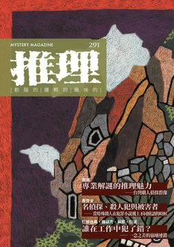
《推理》雜誌於1984年11月由「台灣推理第一人」林佛兒先生創刊，至2008年，共發行282期。停刊16年後，由台灣犯罪作家聯會取得獨家授權，於2024年6月復刊，2024年11月推出創刊四十周年紀念專號，並於2025年正式恢復月刊形式發行。291期主題：「執」，大致上反覆地觸碰著「職業現場的試煉」與「日常細節中的責任」兩個面向；無論是從個體在制度邊緣的堅持，或是從職人之眼出發的觸感，都表現出「工作不僅是生存手段，更是一種與他人世界連結的方式」的敘事企圖。這些小說於真實與虛構之間，刻劃出「執」的重量，也回應我們對當代生活的不安與探問。 《推理》雜誌長期作為本土作家發表創作的重要園地，在漫長的空白後，如何通過新世代的視角與對類型文學更寬廣的定義、詮釋，接續起犯罪推理在台灣的本土化發展？2025年重返每月一期發行！令人引頸期待！ 本期收錄內容如下： ◎封面故事◎ 山上人家2◎劉康彥 劉康彥的藝術實踐猶如考古與拼圖的結合。他從歷史遺跡、民俗圖騰、庭園與建築中汲取靈感，透過自由繪畫與草圖累積，將記憶中的片段轉化為荒誕異想的視覺構圖。他畫中常見局部形象的拼組，如無樹幹的葉子、半身人物與走獸，並以迷你窗戶象徵內在心靈空間。這些圖像元素不求完整，而在碎片之間編織出情感與符號的敘事網絡，體現出其作品獨特的隱喻性與自我探索性。 ◎本期動態◎ 主編紀事 ◎洪敍銘 《推理》雜誌復刊第九期，以「執」為題，象徵從形而上主題轉向更具實務性的探討。主編指出，「執」不僅對應職人角色，更關注各行各業中「執」的處境與意義。七篇創作分別描寫七種職業，呈現多元視角與常民日常中的推理可能。本期亦與《聯合文學》、《皇冠》跨刊合作，回應總編輯角色對雜誌視野與社會關照的自我詰問。封面藝術與文本主題相映成趣，展現孤獨與連結並存的深層命題。 犯罪推理大家觀◎喬齊安 以「職人」為題，聚焦於律師與小說家等角色於推理作品中的獨特位置。台灣作品評析黃致豪的《有罪推定》，指出小說透過心理視角與法庭經驗，挑戰「無罪推定」在現實司法中的困難落實，展現對司法偏見與社會病灶的深刻提問。日本作品則評雫井脩介的《迷霧病棟》，以律師為視角書寫醫療冤案，重寫審判劇中對證據與偏見的辯證，訴諸現實法治困境與廢死議題。韓國作品介紹全建宇的《我是恐怖小說家》，作家以幽默自剖方式回溯創作歷程與恐怖類型啟蒙，展現小說家作為職人的自我意識與文化書寫承繼。整體三篇貫通東亞三地推理／恐怖敘事的職人視角，兼具批判、思辨與風格特色。 ◎主題特輯◎ 文學雜誌的想像與類型定錨——《聯合文學》、《皇冠》與《推理》◎王聰威、羅曉盈、既晴／閱讀探戈整理 當紙本閱讀愈發碎片化，文學雜誌在當代環境中如何定位自身角色，成為了關鍵議題。三位文學雜誌主編——既晴、王聰威、羅曉盈——在這場深刻的對談中，揭示了文學雜誌如何透過創新與策展來重新吸引讀者，並於文化場域中持續發揮影響力。從編輯的養成歷程到雜誌的風格定位，甚至數位轉型的挑戰，他們的見解提供了一條深入觀察當代文學運作邏輯的重要路徑。這不僅是一場對雜誌未來走向的討論，更是一場對文學本質的深刻反思，引導讀者重新思考創作的可能性與文學的多樣性。 專業解謎的推理魅力——台灣職人偵探群像◎楓雨 台灣推理小說的世界裡，職人偵探們以各自的專業知識與生命經驗，譜寫出一段段扣人心弦的解謎旅程。從警察的嚴謹探案，到徵信社的奇異調查，從英國公主的跨國冒險，到撿骨少女的生死探尋，每個故事都如同一面鏡子，映照出台灣獨有的文化氣息與人間百態。這些作品不僅為推理迷帶來邏輯與謎題的雙重享受，更讓讀者領略到各種職業的獨特魅力。台灣的職人推理小說，正以其獨特的文化厚度，為華文推理版圖增添一抹不可忽視的亮色。 名偵探、殺人犯與被害者──當特殊職人在犯罪小說戴上不同臉譜的時候◎喬齊安 當犯罪小說戴上職業的面具，一場與日常交錯的推理盛宴悄然展開。本特輯從「職業推理」的潮流脈絡出發，帶領讀者穿越咖啡館、偶像後台、公平交易委員會等意想不到的場域，見證偵探、加害者、被害者三種角色在不同職業中如何轉換身分、顛覆既定印象。無論是苦澀香氣中的懸疑，還是少女偶像的共犯之光，亦或民俗傳說裡的送葬者悲歌，每一部作品都展現了職人精神與文學技藝交融的力量，引人深思：專業之外，人心最難解。 誰在工作中犯了錯？——一念之差的崩壞連鎖 不法簽名◎仁狼血黑 取材自地檢署實務現場的職場推理小說。透過書記官趙玫陽的辦公日常，展開對一宗複雜案件的重審程序。案件表面是再平凡不過的家庭財產爭議，卻在瑣碎文書與繁瑣流程中，隱隱透出一絲不尋常的蛛絲馬跡。故事以輕快對話帶出法務職場的溫度，也鋪陳出法律邊界、倫理界線與人性微妙的緊張關係。細膩節奏與角色互動交織出懸而未決的懷疑氣息，引人思索何為真正的「簽名」、何為無聲的「不法」。 開飛機◎鍾潁秀 熲秀在水力電廠的控制室中如同在駕駛一架不會起飛的飛機，操控著自動化的系統，過著平凡而單調的生活。長年累積的枯燥和壓抑，讓他心中逐漸滋生出一種詭異的成就感。儘管外表看似平靜無波，內心卻暗藏著讓人不安的渴望。當緊急警報響起，他的手似乎不受控制地靠近那些關鍵的按鈕，幻想著自己掌控生死的瞬間。隨著時間推移，這種衝動愈發強烈，直到某個夜晚的意外，將他推向道德的邊界。溪水暴漲，五條生命消逝，他的嘴角勾起一抹神秘的微笑，仿佛一切盡在掌握。這究竟是意外，還是蓄意而為？懸疑的氛圍不斷升溫，真相撲朔迷離。 尾班車◎蘇那 香港的夜色中，村路上行駛著一輛老舊的單層巴士，車長光仔剛剛被擢升為正式車長，卻在這幽暗的夜班車上遭遇了離奇的經歷。車上只有一位神秘的老人，講述著前任車長的故事，讓光仔的心中不安隱隱。當紅燈在空無一人的車廂中突然亮起，光仔被迫停下車，隨著愈發詭異的事件接踵而至，他開始懷疑這條路上的一切。幽靈般的乘客、怪誕的電鈴聲，究竟是幻覺還是另有隱情？在這條消失的村路上，光仔能否安然無恙地駛過這場夜班之旅？ 消失的兇手◎衍波 成功路的一樁命案讓警方陷入無解的迷局。孤僻的鰥居者蕭志知被一名神秘男子刺死，兇手身著黑衣、戴口罩，行兇後消失得無影無蹤。追查過程中，警方發現兇手騎著偷來的機車，行動如幽靈般神秘，進入社區公園後便憑空消失。各方線索指向兇手對當地環境的熟悉程度，而關鍵的社區公園似乎隱藏著某種不為人知的秘密。當晚的垃圾車成為破解之匙，卻又揭開更多疑團。究竟是誰能在光天化日下逃之夭夭？當真相逐漸浮出水面，這場人間悲劇的始末讓人不禁唏噓。 ◎顏瑜專輯◎ 你所未見的日常，正是故事的開始——顏瑜訪談錄◎顏瑜／閱讀探戈整理 警察小說的世界中，顏瑜以其獨特的視角與深刻的社會觀察，將讀者帶入一個充滿矛盾與選擇的灰色地帶。他的作品不僅描寫案件的解決，更深入探討警察在執法過程中的人性掙扎與制度的壓力。從女警在男性主導的體系中奮力突圍，到探討升遷制度的種種不公，顏瑜運用自身經驗編織出一個個扣人心弦的故事。這些作品如同一面鏡子，讓我們看見警察制服背後的真實與無奈，並在懸疑與反轉中，重新思考自身的價值觀與選擇。 痛苦，也是一種選擇——《警察迷途中：誰是兇手》◎陳俊偉 在霧鎖的命案現場，警察許家偉面對的是一具滿佈刀痕的屍體和一段難以揮去的詭異感。身為蘆洲分局中最不受待見的菜鳥，他的生活彷彿被困在無盡的虐戀循環中，與他的「不倒翁」搭檔上演一場又一場不可思議的行為。當命案現場的新跡證將他推向深淵，許家偉不得不面對那個令人不安的真相：生活的乏味可能比死亡更可怕。隨著調查的深入，他意識到痛苦與快樂之間的界限竟是如此模糊。在這場懸疑的探案旅程中，讀者將被引向一個充滿矛盾與挑戰的世界，讓人不禁懷疑，未來是否只是一場無法預測的戲劇…… 凝視問題，莫忘初衷——《403小組，警隊出動！》◎陳木青 在繁忙的警界生態中，體制的縫隙中暗流湧動，權力與道德的界線模糊不清。《403小組，警隊出動！》揭示了警界的複雜層面，從基層員警的酸甜苦辣到高層的權謀鬥爭，無不展現出作者對制度深刻的觀察與批判。書中角色如王碩彥和簡育韋，在道德與職責間徘徊，反映出台灣警界的現實與困境。隨著權力的追逐，他們的抉擇不僅是個人命運的交織，更是對警界體系的深刻反思。故事在揭露人性複雜性的同時，也引發對正義與腐敗的沉思，讓讀者在笑淚交織中體會警界的暗潮洶湧。 警察體制下的青春及挑戰——《70號，你的鳥歪了》◎輝彌 在一個充滿隱秘計算與制度掣肘的警專校園中，新生們迎來了他們的挑戰：從警的初衷是否能在現實的重壓下屹立不搖？隱於制度背後的復仇者、臥底與各懷異心的角色交織出危機四伏的校園生活。校內的長官們不僅是權力的掌握者，也是利益與價值觀的博弈者。當柔道場上關鍵的真相如鬼魅般揭露，角色間的信任與背叛如同一場無聲的角力。隨著「兩校合併」的議題逐步浮現，深層的動機與抉擇慢慢剝開，揭示了警界內部的複雜性。當所有人都在尋找屬於自己的答案時，誰能在重重迷霧中保持初心？ 女性警察的心理價值與大眾視野中的存在意義——《陽明山女子派出所》◎Yuki 《陽明山女子派出所》透過全女性組成的警察分局為場景，探討女性警察如何在性別角色與專業身分之間取得平衡。小說揭露警界制度中對女性的不對等期待，並呈現女警面對社會眼光、自我懷疑與職業認同之間的心理矛盾。主角劉佳棠與陳婕妤性格迥異，卻在衝突與理解中體現同伴意識的深層意涵。小說藉由她們的成長與互動，深入描繪女性在職場中如何守護專業尊嚴，同時也質疑社會賦予女警「花瓶」式存在的荒謬。故事兼具本格推理與社會書寫，結構嚴謹，情感真摯。 制服下的真實人生——《那年，東眼山，斜角派出所》◎沙棠 《那年，東眼山，斜角派出所》描寫一位新進警員李啟陽被分派至山林派出所後的真實歷程。在這座名為「斜角」的小派出所中，顏瑜細膩捕捉基層警察在制度、人情與自我期許間的拉鋸，並以平實卻深具張力的筆觸展現青年警察在理想與現實中的蛻變與掙扎。小說不以英雄敘事包裝，而是以靜謐且富有餘韻的書寫方式，揭示制服底下的困惑與選擇。 ◎創作推理小說◎ 行家◎知言 描繪一場看似平凡的學術演講迎賓場景，逐步引出深藏於課堂與人性之間的多重角力。主角端木胥煒為其報導文學課邀請退休法醫專家范姜富貴演講，期望激發學生參與與專業理解，卻意外揭開學生歐暘靖與眾人間的沉默對抗。隨著破碎屍體的案件報告展開，知識權威、語言權力與專業詮釋在課堂中激烈碰撞。本作巧妙融合校園場景、法醫推理與寫作教學，書寫一場關於真相、態度與理解界線的辯證，亦映照出台灣當代教育與專業文化的複雜縮影。 有我的信嗎◎飛樑 在那座監獄的混亂中，一名囚犯5755絕望地詢問著有無來信，隨著鮮血的流淌，他的生命迅速消逝，留下未解的遺言。而在城市的另一端，一名郵差駛向忐忑不安的地址，長善街25號，那裡似乎隱藏著一個無法被遺忘的過去。隨著他的投信之旅，過去與現在的界線漸漸模糊，白色洋裝的女子頻頻出現，彷彿在訴說著一個被掩埋的故事。郵差在陰影中搜尋真相，每一次的敲門聲都可能揭示一段不為人知的秘密。這個看似平靜的投信任務，是否會揭開那場命案背後的真相？ 冰庫謀殺羅生門——冷鏈倉儲的證據鏈【解決篇】◎田羽心 在冰冷的倉庫深處，一場看似無解的命案悄然展開。死者被發現時，沒有任何綑綁痕跡，手部乾淨得如同未經世事，然而卻是在缺氧窒息中迎來死亡。時間回溯至案發當晚，證據似乎已被巧妙掩蓋，凶手如幽靈般消失無蹤。當刑警俊佑與宥睿抽絲剝繭，步步追尋時，發現每一個線索竟都指向不同的真相。是無情的天災，還是精心策劃的人禍？在這迷局之中，誰又會是最終揭開謎底的關鍵人物？隨著案情逐步推進，真相的輪廓漸漸浮現，而狡猾的凶手是否能在這場智慧與耐心的角逐中全身而退？ ◎名家作品大觀◎ 張開手掌的騎士◎卡羅爾・約翰・戴利／楓雨譯 在一個迷霧重重的小鎮上，雷斯・威廉斯，一位老練的私家偵探，面對著一個異常棘手的案件。當一位父親為了尋找失蹤的兒子而求助於他時，雷斯必須深入一個充滿陰謀和恐懼的組織——三K黨。這個組織以神秘的儀式和殘酷的行為著稱，威廉斯不僅要對抗這些白色兜帽下的威脅，還要揭開一個深藏在鎮子背後的黑暗秘密。他能否在這場遊戲中生存，並成功解救無辜的生命？在這場懸疑重重的冒險中，恐懼與勇氣交織，等待著雷斯的將是一場驚心動魄的較量。 冒牌的波頓・科姆斯◎卡羅爾・約翰・戴利／楓雨譯 當船緩緩駛離岸邊，他感受到一雙不安的目光正緊盯著自己。這次旅程本應輕鬆愉快，但神秘人物的出現卻讓一切變得詭譎不安。這位紳士冒險家，習慣於與罪犯周旋，卻未曾想過自己會成為被追蹤的對象。當他在甲板上吹著口哨，試圖確認跟蹤者的身份時，命運的齒輪開始轉動，將他捲入一場不可預知的危險遊戲。陌生人的請求、夜色中的對話以及隱藏的陰謀，將這段航程化為一場驚心動魄的生死冒險。當命運的浪潮將他推向命運的邊緣，誰能預料，這一切不過是更大陰謀的序章。 犯罪機器◎卡羅爾・約翰・戴利／楓雨譯 焦躁不安的步伐在公寓中回蕩，時間緊迫，維・布朗即將抵達。他是一個傳奇般的偵探，卻也可能是一名冷酷的殺手。伴隨著《晨間環球報》的威脅，這位無情的罪犯獵人讓一名記者與他同行，追捕一個無情的兇手。這不是單純的合作，因為記者還有一個隱秘的任務——揭開布朗富裕生活背後的秘密。當夜幕降臨，這場危險的追捕將揭示什麼？正義與罪惡的界限在這場緊張的角力中模糊不清，驚險刺激的冒險即將展開，你準備好迎接這場扣人心弦的旅程了嗎？ 冷硬派第一人──卡羅爾・約翰・戴利◎既晴 卡羅爾・約翰・戴利被視為冷硬派推理的真正創始者，早於漢密特於1922年發表作品於《黑面具》雜誌。他突破英式宅邸推理的框架，揉合美國西部小說精神，打造出具暴力美學與硬漢氣質的都市冒險偵探。 ◎精選翻譯小說◎ 青巴士的女子◎辰野九紫／輝彌譯 青巴士的旅程中，一名不凡的乘客意外引發了一連串的巧合。這位乘客因為一個微不足道的尋常事件，決定匿名發出一封信。然而，他並不知道，這封信將如何改變一位年輕女車掌的命運。那位女車掌，因為一次意外的冒犯，背負著一段未解的過去，帶著她獨有的秘密。隨著時間推進，這段隱藏的連結逐漸浮現，使得看似平凡的日常中，隱藏著不為人知的緊張與懸念。這是一段關於匿名、巧合與意外交錯的故事，揭示出人際關係中微妙的平衡和變數。 犯罪小說・聖僧的內室——隱身其後的神秘美人◎座光東平／既晴譯 在台灣的某個秋末傍晚，一位神秘的美人引發了鄰里的無盡揣測。她的生活如同一道謎題：不與鄰居往來，午後總是盛裝出門，從不收信，卻又訂閱多家報紙。這樣的生活背後，隱藏著怎樣的秘密？隨著一位年輕女子與年邁聖僧之間微妙而隱晦的關係浮出水面，真相的蛛絲馬跡逐漸顯現。然而，當暴風雨般的命運將她推向一場驚天的偽造事件時，這位美人的身世與過去又將如何撼動整個社會的根基？在謎團層層交織中，讀者將被引領至一個充滿懸疑與驚奇的世界。 ◎推理集錦◎ 感受由一場歷史悲劇所傳承的音樂意念——《小提琴家》◎Yuki 一份神秘的樂譜揭開了埋藏在時光深處的悲劇樂章。隨著旋律的流轉，我們進入了一個由現代與過去交錯而成的世界。茱麗亞，一位飽受困擾的母親，與女兒之間的微妙關係如同小提琴上的弦，隨時可能崩斷。她在尋找樂譜〈火焰〉的過程中，不僅面對著人性的善惡抉擇，還必須解開女兒是否真為邪惡的謎。另一邊，羅倫佐的故事如同隱藏的樂章，在歷史的深淵中回響，他的命運與愛戀在戰火中化為無盡的悲愴。當過去的旋律在現代迴響，這段音樂能否為茱麗亞的生命帶來改變？這是一場關於音樂、歷史與人性的懸疑交響。 一窺人性卑劣——《交通警察之夜》◎田羽心 在日常違規與擦撞聲中，《交通警察之夜》挖掘出人性的縫隙與真實的重量。這部職人推理短篇集，聚焦於交通執法人員與用路人的視角，刻劃事故背後潛藏的情緒漣漪與社會現實。每篇故事皆立基於看似微不足道的現場細節，透過冷靜判斷與專業直覺，拼湊出真相的碎片。遠離傳統英雄式破案路線，本書描繪的是無名者在第一線默默守護的身影，以及法理與情理交鋒下的倫理試煉。日常即修羅場，行車更是命運交界。 【犯罪實案現場】新生南路主僕命案——◎艾德嘉 記錄1986年震撼政壇與社會的真實案件。前考選部長遺孀黃冷玉與女傭李光英雙雙遇害於中銀宿舍內，引發媒體與高層關注。警方從蛛絲馬跡展開調查，線索牽涉家族關係、昔日司機、財物失竊與遺書祕密，最終指向一名曾涉竊盜與逃兵的男子段培德。全案融合時代背景、社會權力結構與人性陰影，鋪陳出一場以死亡為代價的真相追索。透過層層辦案過程，映照出名門背後難以預見的破碎與悲涼。 【另眼看劇】《死了一個娛樂女記者之後》——◎喬齊安 以娛樂記者為主角的台灣懸疑劇，改編自2016年W飯店命案，並融合N號房與李宗瑞等社會案件，聚焦於「權勢性侵」的沉重主題。劇中揭示娛樂記者的職場壓力與社會偏見，呈現一個在輿論與權力夾縫中追求真相的職業群體樣貌。雖製作細緻、節奏掌握得宜，但劇情發展較為保守，未能帶來預期的揭密震撼，仍具反思價值，卻也讓人感嘆「如此而已」的遺憾。 【波光衍影】《二流小說家》真的二流嗎◎衍波 在一個充滿懸疑與危機的世界中，小說家哈利布洛赫面對的是一個撲朔迷離的連環殺人案件。當殺人魔克雷要求哈利為他撰寫傳記時，哈利不僅要深入危險的調查，還要面對接踵而來的死亡威脅。隨著三名女子接連遇害，哈利發現自己不僅是觀察者，還成為了獵手與獵物之間的角色轉換者。警方的無能與媒體的漠視，讓他孤身奮戰，追尋真相的道路上，步步驚心。每一張舊照片背後都暗藏殺機，而每一個角色的出現，都可能是致命線索的關鍵。當真相逐漸浮出水面，哈利能否在這場智力與勇氣的較量中，逃出生天？ 【灰色檔案室】談談信念——增減諜報作品戲劇性的重要關鍵◎輝彌 探討「信念」如何成為諜報作品戲劇張力的核心關鍵。從金錢與保障出發，逐層分析間諜動機，指出公職人員若缺乏信念防線，即可能在壓力下被策反；而利己主義者則多具操控欲與道德相對性。相對而言，真正難以撼動的，是由堅定信念所驅動的人物，如《無間道》中的臥底警察。當角色因信念而拒絕背叛，其戲劇張力遠勝單純的背叛與金錢交易。信念，成為情報敘事裡人性衝突的核心引爆點。 【遊戲開始 Games start】《Machineers》◎賴特 《Machineers》是一款融合機械美學與邏輯思維的解謎冒險遊戲，設計上如同齒輪運轉般細緻。玩家扮演年輕機器人學徒佐拉，在一座無人類的鐵鏽小鎮中，透過修理故障機器揭開鎮上異常現象的真相。遊戲不僅透過拖放與組裝模擬機械原理，更引導玩家進行一場節奏沉穩的思辨之旅。它不以高難度取勝，而在於讓人理解每一道結構背後的邏輯脈絡，適合對「運作原理」充滿好奇的玩家，是一款既富教育性又具有詩意質感的思考型作品。 【詩意尋蹤】 原創犯罪主題詩文創作，除了小說以外，凝鍊的語言如何表現犯罪的各種複雜心理？ 殺手情歌◎夜鳴 在醫院工作的非醫療者日常◎雲柒 【漫畫偵探】洪敍銘 以四格漫畫的形式，邀請讀者共同參與探案、解開謎團！ 【靈光乍現】 透過攝影之眼，看見台灣地景與文學間的千絲萬縷。
《推理》雜誌於1984年11月由「台灣推理第一人」林佛兒先生創刊，至2008年，共發行282期。停刊16年後，由台灣犯罪作家聯會取得獨家授權，於2024年6月復刊，2024年11月推出創刊四十周年紀念專號，並於2025年正式恢復月刊形式發行。290期主題：「影」，分有兩個探討的敘事軸線：「影視作品的幽微改編」、「影像傳遞中的超自然錯位」；不論從恐懼，或者影像與文字間的轉換的角度來看待本期雜誌的內容，都能夠窺見細微且複雜的人性游移。 《推理》雜誌長期作為本土作家發表創作的重要園地，在漫長的空白後，如何通過新世代的視角與對類型文學更寬廣的定義、詮釋，接續起犯罪推理在台灣的本土化發展？2025年重返每月一期發行！令人引頸期待！ 本期收錄內容如下： ◎封面故事◎ 賴永霖以黑夜為隱喻，探索從不安到充盈的心理轉折，試圖捕捉人於孤獨與陌生中面對自我、蛻變的瞬間。《黑畫》不僅映照出個人的幻見，也邀請觀者在無邊暗影中，尋找屬於自己的心靈映像。 ◎本期動態◎ 慌、惶、恍、愰——《我要說出真相》◎田羽心 田羽心以細膩的筆觸分析《我要說出真相》背後的虛擬監控與倫理危機。透過實境秀、社群媒體與親子關係的交錯描寫，揭示科技成癮與人性操弄的幽微傷痕，引領讀者思考在數位洪流中，個體如何保存尊嚴與真實。 解憂的幻象：文學、敘事與現代人的渴望——《解憂雜貨店》◎劉哲廷 拆解東野圭吾《解憂雜貨店》背後的敘事力，探討人們在不確定時代中，透過故事尋找自我認同與抉擇勇氣。從敘事療法到心理需求理論，劉哲廷層層梳理小說所映照的現代焦慮，帶領讀者思索，或許真正的解憂，不在於找到答案，而是勇敢說出自身的渴望與迷惘。 犯罪推理大家觀◎喬齊安 喬齊安引領讀者穿梭於華文、日本、韓國推理新作之間，從醉琉璃的民俗推理《夜觀神》，到藤崎翔的倒敘推理喜劇《小梅，好想詛咒》，再到李樂夏融合奇幻與人性的《惡魔的租約沒有期限》，展現當代推理小說如何在不同文化背景下激盪出獨特的魅力與生命力。 ◎主題特輯◎ 潛伏在日常角落的未知鬼魅──詳解「J Horror」的恐怖娛樂狂潮◎喬齊安 喬齊安從電影、怪談、偽紀錄、圖畫四大面向，解析日式恐怖「J Horror」如何在日常縫隙中潛伏並滋生出異界感。他細緻追溯從《七夜怪談》到《詭畫》的發展脈絡，展現J Horror以壓抑氛圍與潛藏恐懼重新定義恐怖敘事的魅力，邀請讀者穿越薄膜般的現實，觸摸未知世界的幽微脈動。 導讀一場災厄的幻影——小說家的恐怖談◎周志誠、四弄一號、衍波、A.Z.、July、M.S.Zenky 暮曉◎周志誠 在陰鬱天色與聖經低喃中，一名男子坐在冰冷房間裡，透過晚餐、卡通與推理電影，渡過寂靜而壓抑的長夜。嬉笑之下隱藏著異常的念頭，隨著思緒滑向犯罪與死亡的幻想，氛圍逐漸變得詭譎。本作細膩地編織出日常與異常交錯的懸疑網，直到晨曦降臨，一聲召喚，掀開命運的終章。 二十一世紀貞子傳說◎四弄一號 螢幕驟暗、幻影浮現，一具滿身血跡的女子在月光下緩緩迫近，帶來螢幕破裂般的恐怖錯覺。自此之後，謝易琦的世界充斥著幻覺與聲響，無法分辨現實與噩夢。以經典恐怖意象開場，緊扣靈異與人性弱點，最後反轉呈現出令人莞爾的現代社會縮影，將驚悚與幽默交織成一場別具巧思的惡作劇。 窺視有事◎衍波 男子透過望遠鏡窺探城市夜景，意外目睹一場疑似虐殺現場，卻沒想到這通正義報案牽扯出更深的黑幕。以夜色與視覺錯覺鋪展開場，層層推進至政治與黑道交織的陰謀，透過錯置的正義與偷窺者的命運，編織出一場充滿壓迫感與反轉驚愕的都會懸疑劇。 Watching you◎A.Z. 寒流之中，一場友善的冰淇淋邀約，拉開故事序幕。住戶之間若有似無的關懷與監視，悄然轉化為偏執的注視與錯亂的自我投射。故事從日常小事步步滲透出違常的不安，最終在一場直播中將兩人的對峙推向失控。冷冽又帶著黑色幽默的筆調，巧妙捕捉了現代都市隱匿而扭曲的人性風景。 無聲◎July 凌晨時分，地下室傳來詭異撞擊聲，當血跡鋪滿地面，真實與夢境的界線瞬間崩解。故事開頭以短促壓抑的節奏展開，描繪一場從驚懼、指控到終極失語的絕望旅程。倒數聲成為無形的審判，敲打著讀者的心弦，帶來令人寒意滲透的懸疑衝擊。 不是我◎M.S.Zenky 清晨醒來，床邊出現了另一個與自己一模一樣的存在。本作以荒謬又不安的場景展開，隨著分身數量不斷增加，主角從驚恐滑向瘋狂，最終將這場無法解釋的異變變為犯罪的遊戲。故事節奏瘋狂飛馳，黑色幽默與極致恐怖交錯翻湧，帶來難以預測的驚愕結局。 ◎林庭毅專輯◎ 人生的劇本？勇闖影視媒合與外譯版權的戰場——林庭毅訪談錄◎楓雨 林庭毅在本次訪談中，分享了從網路連載起步到小說影視化、外譯版權拓展的心路歷程。從《我在犯罪組織當編劇》自費出版的經驗談起，細述如何主動切入影視市場、掌握IP媒合節奏，並以開闢外譯市場的實例，展現臺灣新世代作家走向國際舞台的多重可能。訪談中亦首度曝光新作《謊言搖滾大飯店》的概念，展現不斷探索創作邊界的決心與企圖。 大算命師◎林庭毅 學校旁的巷子裡，老人擺著破舊的算命攤，默不作聲地注視著每個路過的孩子。直到某天，他第一次開口，指名一位新來的轉學生。本作從一場神祕預言展開，描繪命運、財富與人心之間微妙的拉鋸，隨著一樁意想不到的發現，世界悄然改變了原本的軌道。 ◎創作推理小說◎ 角落◎尾巴 一個漆黑的人形影子，靜靜佇立在教室角落，將學生一個個吞噬進不可見的黑暗之中。故事從一場難以辨別虛實的幻覺展開，隨著輔導老師與女學生們的對話，真相逐步浮現，卻遠比表面的靈異現象更加駭人。故事以陰鬱且步步緊逼的節奏，揭開人性扭曲與罪孽投射的可怖深淵。 關於勒索，我是這樣做的（下）◎衍波 發現性愛影片與兩樁命案背後隱藏的秘密後，主角決定親手向權勢人物展開一場精密的勒索計畫。本作以絕望與冷靜交織的筆調，描繪從素人勒索者視角切入，一步步深入政商黑幕，佈局、取證、反轉，高潮迭起。當正義與危險只隔著一層薄冰，每個決定都成為無法回頭的賭注。 陰陽眼的交易◎ＤＪ之神 一場死亡邊緣的車禍，使主角被迫面對來自死神的交易邀約：開啟陰陽眼，拯救苦難靈魂，以換取延續生命的機會。故事以生死交界的抉擇為始，穿越愛情、科技與命運交錯的兩百年人生，描繪一段挑戰宿命與自我救贖的壯闊旅程。故事張力十足，交織著懸疑、科幻與深沉的人性省思。 針灸殺人事件◎小非 刑警宋知遷擁有通靈體質，專門辦理棘手命案。這一次，他面對的是一宗離奇的醫療糾紛──一名少年在針灸後猝死，現場線索卻充滿矛盾。本作以靈異與推理交錯展開，抽絲剝繭地揭開背後錯綜複雜的家族祕密。從表面的過失致死，到隱匿的仇恨謀殺，每一次追查都步步驚心，直至最意想不到的血脈真相浮現。 冰庫謀殺羅生門——冷鏈倉儲的證據鏈【事件篇】◎田羽心 在冷鏈物流中心，一具女屍悄然現身於冰庫深處，凍結的不僅是血肉，還有錯綜複雜的人際關係。本作從勞資糾葛、階層矛盾交織展開，一樁表面單純的意外，背後卻藏著層層謊言與嫁禍陰謀。刑警們在細微線索中抽絲剝繭，撕開冷凍倉儲中凍結的真相，直抵人心最黑暗的角落。 ◎名家作品大觀◎ 雷霆殺機◎伊恩・佛萊明／輝彌譯 巴黎近郊的森林小道上，一名軍事通訊員遭遇神祕殺手伏擊，手中的機密公文包瞬間失蹤。〈雷霆殺機〉從冷酷精準的暗殺場面展開，隨著詹姆士・龐德受命調查，揭開一場潛藏在北約機構內部、偽裝成吉普賽人行蹤的情報間諜行動。高壓追蹤、潛伏對決，層層設伏之下，龐德必須賭上性命，在敵人的陷阱中逆轉局勢。 量子危機◎伊恩・佛萊明／輝彌譯 一次看似無趣的晚宴後，總督向龐德講述了一樁令人意想不到的私人悲劇。〈量子危機〉從一場平淡的社交聚會展開，逐步引出愛情破裂、報復與絕望的殘酷故事。不同於間諜行動的驚險刺激，這是一場冷靜而無情的人性解剖，展示了情感破裂時，比任何陰謀更殘酷的破壞力量。 頭號情報員作家──談伊恩・佛萊明◎白帽子 白帽子以生動筆觸勾勒出伊恩・佛萊明波瀾壯闊的人生軌跡，從情報戰場到文學創作，一步步鍛造出○○七這一二十世紀最具代表性的現代神話。文章剖析佛萊明如何將自身冒險經歷投射進詹姆斯・龐德的形象中，同時也不諱言時代隔閡所帶來的文化矛盾，讓讀者在崇拜與反思之間，重新審視這位「頭號情報員作家」的光與影。 ◎精選翻譯小說◎ 殺人者◎厄尼斯特・海明威／聖甯譯 夜幕低垂，一間快餐店的門被推開，兩名身穿黑衣的陌生男子靜靜坐下。〈殺人者〉從日常光景中緩緩滲入死亡氣息，一場看似隨機的暴力逐步揭露出目標明確的獵殺計畫。海明威以冰冷簡練的筆法，描繪命運的無情迫近，以及無力逃脫的宿命感，打造出一則冷酷、令人戰慄的犯罪寓言。 專家◎大衛・古迪斯／何去譯 一名彬彬有禮的電梯服務員，在城市夜色中換上一身華服，踏上屬於他的秘密行動。〈專家〉以細膩冷靜的筆調展開，描繪一位殺手如何穿梭於兩個世界——白日的平凡與夜晚的黑暗。當忠誠與背叛交錯，在冰冷的命令與微弱的人性掙扎中，他必須在無聲的電梯中作出無法挽回的選擇。 ◎推理集錦◎ 【犯罪實案現場】大雅滅門血案◎艾德嘉 本文細緻重構1986年震驚全臺的〈大雅滅門血案〉，從大家樂盛行的社會背景切入，剖析人心在貪婪與絕望間墜落的悲劇。透過案情梳理與法醫鑑識，層層揭開謊言與矛盾交織的黑暗真相。即使破案宣告，真相卻依舊如迷霧未散，留下關於人性、命運與社會幻滅的深沉叩問。 【另眼看劇】誰偷了垃圾桶？◎Ｌ.C L.C推介2025年初令人驚豔的印度電影〈誰偷了垃圾桶？〉。以一個消失的垃圾桶為起點，電影層層剖開社會黑暗與人性扭曲。L.C細膩解析導演運用倒敘與多線敘事編織出懸疑重重的劇情脈絡，並盛讚片尾反轉帶來的震撼與深思。這不僅是一場推理迷的饗宴，更是一則直指良知與尊嚴的社會寓言。 【波光衍影】八百萬種死法的一種遺憾◎衍波 本篇評論聚焦於勞倫斯・卜洛克《八百萬種死法》的改編電影失敗之處，從城市氛圍錯置、角色塑造錯誤到敘事節奏的崩解，細膩剖析小說與影像之間的巨大落差。透過對馬修・史卡德角色特質的深入理解，文章展現出原著中深邃的人性掙扎如何在改編中被犧牲，點出真正令人遺憾的不只是電影本身，更是對一座城市與一種靈魂的誤讀。 【灰色檔案室】何謂情報？情報類型作品歷久不衰之我見◎輝彌 輝彌從情報的基本定義出發，細緻分析情報小說何以歷久不衰。他指出，情報作品的魅力不僅來自刺激緊湊的行動，更在於探討個人與國家利益間的深層矛盾，以及在極限情境下的人性選擇。以〈量子危機〉為例，輝彌剖析龐德角色背後的孤獨與不信任，展現情報小說在動作敘事之下，如何隱藏著對人性最深刻的凝視。 【遊戲開始 Games start】殺死影子◎金屬 《殺死影子》以細膩的點陣圖美術，交織東亞文化與賽博龐克氛圍，構築一座破碎又迷離的城市。玩家將扮演曾為警察的工人阿光，藉由影子的特殊能力與實地調查，拼湊出分裂城市與謀殺案件背後的真相。劇情如同緩緩展開的迷霧，選項分歧更牽動角色生死，使這款推理冒險遊戲格外引人入勝，值得細細品味與期待。 【詩意尋蹤】 原創犯罪主題詩文創作，除了小說以外，凝鍊的語言如何表現犯罪的各種複雜心理？ 無數的我在鏡中甦醒◎劉哲廷 裙下之臣◎安蔚 替身◎夜鳴 冥婚◎方晴君 犯罪幻想◎衍波 【漫畫偵探】洪敍銘 以四格漫畫的形式，邀請讀者共同參與探案、解開謎團！ ◎靈光乍現◎ 透過攝影之眼，看見台灣地景與文學間的千絲萬縷。
《推理》雜誌於1984年11月由「台灣推理第一人」林佛兒先生創刊，至2008年，共發行282期。停刊16年後，由台灣犯罪作家聯會取得獨家授權，於2024年6月復刊，2024年11月推出創刊四十周年紀念專號，並於2025年正式恢復月刊形式發行。289期主題：「怪」，是在日常中的各種「異常」與「怪異」中，查找人與人之間的人際線索；對小說創作者而言，怪異經驗真的是一個求之不得的靈感養分嗎？或者說，每個念頭都會成就不同的價值觀及每個不同的「我」？ 《推理》雜誌長期作為本土作家發表創作的重要園地，在漫長的空白後，如何通過新世代的視角與對類型文學更寬廣的定義、詮釋，接續起犯罪推理在台灣的本土化發展？2025年重返每月一期發行！令人引頸期待！ 本期收錄內容如下： ◎封面故事◎ 與台灣藝術家黃耀鋅的合作，以「尋水」做為封面主視覺，一個個充滿焦慮的、尋找水源的「練水人」都在尋找著適合自己的水，畫面充滿詭異又帶有警示，是雜誌以具象化圖像為主視覺的首次嘗試。 ◎本期動態◎ 特別收錄田羽心的小說評介，介紹一起充滿奇怪的命案；致敬「推理小說大家看」的「犯罪推理大家觀」持續刊載對華文、日本、韓國的犯罪創作小說評介，犯罪小說迷絕對不容錯過。 ◎主題特輯◎ 〈怪異之淵藪——小說家的煉金術〉，匯集歷屆林佛兒獎決選入圍者金柏夫、白帽子、亦其的訪談，探究小說家如何轉化他們遇到的異常經驗成為小說的情節與故事內容？ 〈埋於島嶼表層的異想故事〉，則對應前一篇的訪談，呂仁、飛樑、鍾潁秀、紫玖島所創作的四個極短篇的怪異故事，在充滿想像力的各種心理轉折中，看見人心的複雜與可怕。 ◎尾巴專輯◎ 尾巴是期許自己能成為左手寫鬼故事，右手寫愛情的作者，創作風格多變，且出版書目眾多，已然是當今臺灣「天后級」的人物，但在她的內心中，對於自己創作歷程的回顧是什麼？對於讀者評價，又有哪些想法？可從這篇專訪中略知一二。同時，推理雜誌首次重金禮聘五位評論家，針對五本作品進行專業的導讀與評介。 ◎創作推理小說◎ 持續開創本土作家的發表園地。收錄陳卓威、四弄一號、衍波等三篇小說，三個不同的主題，呈現出不同的敘事方向，但絕對都是令人「怪到發毛」的閱讀體驗。 ◎名家作品大觀◎ 收錄三篇威爾基・柯林斯的珍稀短篇小說譯作，並附上白帽子對其譯作的介紹與解析，讓讀者能夠更快速地進入大師的創作世界。另收錄伊斯瑞爾・冉威爾與座光東平的譯品，輕易地能看見在台灣少見的翻譯作品。 ◎推理集錦◎ 「詩意尋蹤」原創犯罪主題詩文創作，除了小說以外，凝鍊的語言如何表現犯罪的各種複雜心理？ 「犯罪實案現場」以實案紀錄與省思為主題，解析過去發生在台灣的真實案件的背景與潛在的社會問題。 「波光衍影」以影視作品的綜合性比較為主題，探究主題創作的源流與演變。 「另眼看劇」以犯罪影視作品為評介對象，淺介影視作品的可觀處與重要性。 「遊戲開始」以犯罪、解謎為主題的遊戲為介紹對象，開啟多元載體的視野與對話。 「漫畫偵探」以四格漫畫的形式，邀請讀者共同參與探案、解開謎團！ ◎靈光乍現◎ 透過攝影之眼，看見台灣地景與文學間的千絲萬縷。
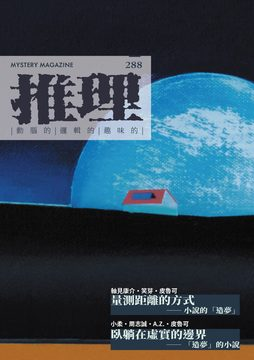
《推理》雜誌於1984年11月由「台灣推理第一人」林佛兒先生創刊，至2008年，共發行282期。停刊16年後，由台灣犯罪作家聯會取得獨家授權，於2024年6月復刊，2024年11月推出創刊四十周年紀念專號，並於2025年正式恢復月刊形式發行。288期主題：「夢」，探究的是「夢」如何作為犯罪推理小說的原型／題材／主題，以及對小說創作者而言，「造夢者」和「造夢的產物」之間的關係為何，訴諸文字後的解答又是什麼？ 《推理》雜誌長期作為本土作家發表創作的重要園地，在漫長的空白後，如何通過新世代的視角與對類型文學更寬廣的定義、詮釋，接續起犯罪推理在台灣的本土化發展？2025年重返每月一期發行！令人引頸期待！ 本期收錄內容如下： ◎封面故事◎ 與台灣藝術家陳麗如的合作，以「沒有永恆的瞬間」做為封面主視覺，巨大的星球與小小的居所形成鮮明的對比，除了呈現出獨特的物我關係外，迷離且夢幻的色彩，充滿豐富的隱喻和象徵。 ◎本期動態◎ 特別收錄陳蕾琪、田羽心等兩篇小說評介，探觸到小說文本底層的敘事機制與邏輯——夢，究竟能不能是一種「補償」？；致敬「推理小說大家看」的「犯罪推理大家觀」持續刊載對華文、日本、韓國的犯罪創作小說評介，犯罪小說迷絕對不容錯過。 ◎主題特輯◎ 〈量測距離的方式——小說的「造夢」〉，匯集歷屆林佛兒獎決選入圍者軸見康介、笑芽、皮魯可的訪談，探究小說家如何以創作「造夢」，以及他們對於「夢」作為文學主題的詮解。 〈臥躺在虛實的邊界——「造夢」的小說〉，則對應前一篇的訪談，小柔、周志誠、A.Z.、皮魯可所創作的四個極短篇的夢的故事，試圖從夢的描述，看見現實的缺憾與殘忍。 ◎楓雨專輯◎ 2024年在海內外大放異彩的楓雨，除了帶來「野風社」三部曲的終章《遲來的救贖》，獲得無數肯定的他，也即將帶來新的創作計畫。長期以來投注獨特的創作題材，是身體力行地努力描述、刻劃著自己對於「理想」的形狀。這篇訪談可以看見這位年輕作家的宏願，以及他對於己身乃至於文壇的認識。同時驚喜收錄短篇小說〈沒有神的春天〉，並同時收錄陳俊偉、邱鉦倫、喬齊安對於楓雨作品的評介。 ◎創作推理小說◎ 持續開創本土作家的發表園地。收錄余心樂、呂仁、雲柒等三篇小說，三個不同的主題，呈現出不同的敘事方向，也有著截然不同的閱讀體驗。 ◎名家作品大觀◎ 收錄三篇康乃爾・伍立奇的珍稀短篇小說譯作，並附上白帽子對其譯作的介紹與解析，讓讀者能夠更快速地進入大師的創作世界。另收錄F・布朗與座光東平的譯品，輕易地能看見在台灣少見的翻譯作品。 ◎推理集錦◎ 「詩意尋蹤」原創犯罪主題詩文創作，除了小說以外，凝鍊的語言如何表現犯罪的各種複雜心理？ 「犯罪實案現場」以實案紀錄與省思為主題，解析過去發生在台灣的真實案件的背景與潛在的社會問題。 「波光衍影」以影視作品的綜合性比較為主題，探究主題創作的源流與演變。 「另眼看劇」以犯罪影視作品為評介對象，淺介影視作品的可觀處與重要性。 「遊戲開始」以犯罪、解謎為主題的遊戲為介紹對象，開啟多元載體的視野與對話。 「漫畫偵探」以四格漫畫的形式，邀請讀者共同參與探案、解開謎團！ ◎靈光乍現◎ 透過攝影之眼，看見台灣地景與文學間的千絲萬縷。
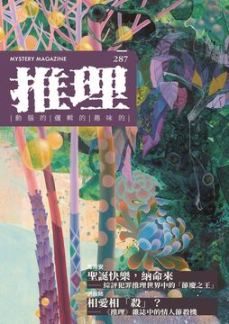
《推理》雜誌於1984年11月由「台灣推理第一人」林佛兒先生創刊，至2008年，共發行282期。停刊16年後，由台灣犯罪作家聯會取得獨家授權，於2024年6月復刊，2024年11月推出創刊四十周年紀念專號，並於2025年正式恢復月刊形式發行。286期主題：「慶」，探討的不只是「節慶」如何作為犯罪推理敘事的重要主題，還有人與人們在各個重要節慶中的互動關係，以及社會文化環境對小說／社群網絡帶來的影響。 《推理》雜誌長期作為本土作家發表創作的重要園地，在漫長的空白後，如何通過新世代的視角與對類型文學更寬廣的定義、詮釋，接續起犯罪推理在台灣的本土化發展？2025年重返每月一期發行！令人引頸期待！ 本期收錄內容如下： ◎封面故事◎ 繼2024年詭祕日後，再次與台灣藝術家黃柏勳老師合作，以「林間漫步」做為封面主視覺，絢麗豐富的視覺與色彩，展現出屬於節慶的氛圍與氣氛。 ◎本期動態◎ 特別收錄田羽心〈魔鬼最厲害的詭計，就是說服全世界相信他並不存在——《焚身少女》〉一文，觀看特殊祭典中的儀式，是否也是一種恐怖的慶祝？；致敬「推理小說大家看」的「犯罪推理大家觀」每期針對華文；日本、韓國的犯罪創作小說評介仍持續刊載，犯罪小說迷絕對不容錯過。 ◎主題特輯◎ 〈聖誕快樂，納命來——綜評犯罪推理世界中的「節慶之王」〉，由喬齊安彙整古今中外的幾部知名的聖誕節犯罪小說，分析節慶在小說中具有的獨特意義與關鍵作用。 〈相愛相「殺」——《推理》雜誌中的情人節殺機〉，由洪敍銘針對過去曾刊載在《推理》雜誌上的情人節小說，除了介紹其內容外，也整理出這些小說的共通點，以及情人節在台灣社會文化中的意義。 ◎提子墨專輯◎ 2024年入選韓國「釜山國際影展」亞洲內容暨電影市場展台灣代表、「SCELF法語人出版協會」Shoot the Book! TCCF專場的提子墨，同時也是國際上數個重要作家組織的成員，透過自身的影像力與豐沛的創作能量，對台灣的出版市場與創作世代，都有可觀的付出，這篇訪談，除了能夠呈現他寫小說的心路歷程與取材外，也能看見跨國、跨文化帶來的無限想像力。收錄短篇小說〈鏡像反射〉，以及Yuki對於《童探Bodacious！：三界火宅》一書的評論。 ◎創作推理小說◎ 收錄菜仔、飛樑、A.Z.、楓雨共五篇與節慶有關的本土小說，以故事同台競技，開創本土作家的發表園地。 ◎節慶犯罪小說專輯◎ 以節慶為核心，收錄B・斯托克、O・亨利、A・鮑查、F・布朗的節慶犯罪小說，是台灣少見特別以節慶為主題的珍稀短篇小說精選。另也收錄R・康奈爾與座光東平的譯品，輕易地能看見在台灣少見的翻譯作品。 ◎推理集錦◎ 「詩意尋蹤」原創犯罪主題詩文創作，除了小說以外，凝鍊的語言如何表現犯罪的各種複雜心理？ 「犯罪實案現場」以實案紀錄與省思為主題，解析過去發生在台灣的真實案件的背景與潛在的社會問題。 「波光衍影」以影視作品的綜合性比較為主題，探究主題創作的源流與演變。 「另眼看劇」以犯罪影視作品為評介對象，淺介影視作品的可觀處與重要性。 「遊戲開始」以犯罪、解謎為主題的遊戲為介紹對象，開啟多元載體的視野與對話。 「漫畫偵探」以四格漫畫的形式，邀請讀者共同參與探案、解開謎團！ ◎靈光乍現◎ 透過攝影之眼，看見台灣地景與文學間的千絲萬縷。
《推理》雜誌於1984年11月由「台灣推理第一人」林佛兒先生創刊，至2008年，共發行282期。停刊16年後，由台灣犯罪作家聯會取得獨家授權，於2024年6月復刊，2024年11月推出創刊四十周年紀念專號，並於2025年正式恢復月刊形式發行。286期主題：「域」，探討的是「移動」的經驗，包括了雙向與多重的跨域、閱讀、交流與接受，匯集不同國域的創作者透過犯罪故事／敘事同臺競技，成果令人期待！ 《推理》雜誌長期作為本土作家發表創作的重要園地，在漫長的空白後，如何通過新世代的視角與對類型文學更寬廣的定義、詮釋，接續起犯罪推理在台灣的本土化發展？令人引頸期待！ 本期收錄內容如下： ◎封面故事◎ 與台灣藝術家蕭璽老師合作，以「寰宇甦象」做為封面主視覺，展現出無與倫比的生命力以及對經驗的反思。 ◎本期動態◎ 特別收錄田羽心〈冒險犯難，刀光劍影——《香江神探福邇，字摩斯2：生死決戰》〉一文，以香港作家作品為探討對象，充分以評論視角進行跨「域」的文字交流；同時，舊名「推理小說大家看」的專欄復刻回歸，新專欄「犯罪推理大家觀」每期針對華文；日本、韓國的犯罪創作小說進行評介，不容錯過。 ◎主題特輯◎ 〈游動的故事邊界——跨境的微型創作〉，特別邀集了飛樑（台灣）、蘇那（香港）、軸見康介（日本）、王稼駿（中國）、牛小流（馬來西亞）五位作家共創串寫故事，邀請讀者解謎關鍵詞！ 〈華文出版市場的跨國接受——台灣／海外犯罪作品的雙向傳輸〉，透過呂尚燁（出版）、提子墨（作家）的不同視角，分享引介海外作者進入國內書市的過程與趣聞。 〈初登「犯罪學」之門〉由犯罪學博士林慎主筆，言簡意賅地淺介了三本重要的犯罪學入門著作。 ◎思婷專輯◎ 獲獎無數的作家與編劇思婷先生，其創作的題材是台灣非常少見的議題，透過專訪，他也分享了有關犯罪推理和真實世界的互文關係，也藉此勉勵台灣新世代的創作者。收錄短篇小說〈神鎗手〉，並附有書評。 ◎創作推理小說◎ 收錄台灣本土作家菜仔及馬來西亞作家宇淮、牛小流的原創短篇小說，以故事同台競技。 ◎名家作品大觀◎ 收錄F・W・克洛弗茲、Ｅ・Ｍ・福斯特、小津安二郎、座光東平的珍稀作品譯作，輕易地能看見在台灣少見的翻譯作品。 ◎推理集錦◎ 「犯罪實案現場」以實案紀錄與省思為主題，解析過去發生在台灣的真實案件的背景與潛在的社會問題。 「波光衍影」以影視作品的綜合性比較為主題，探究主題創作的源流與演變。 「另眼看劇」以犯罪影視作品為評介對象，淺介影視作品的可觀處與重要性。 「遊戲開始」以犯罪、解謎為主題的遊戲為介紹對象，開啟多元載體的視野與對話。 「漫畫偵探」以四格漫畫的形式，邀請讀者共同參與探案、解開謎團！ ◎靈光乍現◎ 透過攝影之眼，看見台灣地景與文學間的千絲萬縷。 ◎詩意尋蹤◎ 原創犯罪主題詩創作，除了小說以外，凝鍊的語言如何表現犯罪的各種複雜心理？
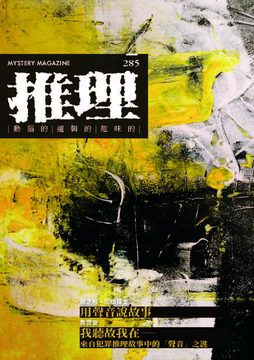
《推理》雜誌於1984年11月由「台灣推理第一人」林佛兒先生創刊，至2008年，共發行282期。停刊16年後，由台灣犯罪作家聯會取得獨家授權，於2024年6月復刊，2024年11月推出副刊2號，同時也是《推理》雜誌創刊四十周年的紀念專號；2025年，《推理》雜誌正式恢復月刊形式發行，285期以「聲」為主題，探索各種犯罪故事／敘事中的聲音謎題。 《推理》雜誌長期作為本土作家發表創作的重要園地，在漫長的空白後，如何通過新世代的視角與對類型文學更寬廣的定義、詮釋，接續起犯罪推理在台灣的本土化發展？令人引頸期待！本期收錄內容如下： ◎封面故事◎ 與台灣藝術家陳聖政老師合作，以「悲欣交集」做為封面主視覺，藝術表現描繪人心複雜的情緒與感受，藉由創作的過程進行記錄。 ◎本期動態◎ 特別收錄劉建志〈生命中不能承受之重——太一〈負重一萬斤長大〉〉一文，跨界探討歌曲歌詞中的人心意圖；同時，舊名「推理小說大家看」的專欄復刻回歸，新專欄「犯罪推理大家觀」每期針對華文；日本、韓國的犯罪創作小說進行評介，不容錯過。 ◎主題特輯◎ 〈用聲音說故事〉，特別企畫了兩位年輕且優秀的Podcaster：惡之根、閱讀探戈，暢聊他們製作節目過程中的各種思考與趣事。「聲音」也是一種非常重要的說故事的方式！ 〈我聽故我在──來自犯罪推理故事中的「聲音」之謎〉，由喬齊安主筆，探究海內外的犯罪故事中，聲音如何作為關鍵？又如何被作家描寫出來？ ◎高雲章專輯◎ 出身於推理雜誌的作家高雲章先生，近年來創作不輟，與本期同一時間亦上市最新短篇小說集，從專訪中可以看見他在取材、人物腳色與主題選用上的獨特洞見。收錄最新短篇小說〈袋子〉。 ◎創作推理小說◎ 收錄台灣本土作家貝爾夫人、M.S. Zenky的原創短篇小說，持續深化本土創作之發表園地。 ◎名家作品大觀◎ 收錄弗雷德里克・布朗、伏爾泰、約瑟芬．鐵伊、座光東平的珍稀作品譯作，輕易地能看見在台灣少見的翻譯作品。 ◎推理集錦◎ 「犯罪實案現場」以實案紀錄與省思為主題，解析過去發生在台灣的真實案件的背景與潛在的社會問題。 「波光衍影」以影視作品的綜合性比較為主題，探究主題創作的源流與演變。 「另眼看劇」以犯罪影視作品為評介對象，淺介影視作品的可觀處與重要性。 「遊戲開始」以犯罪、解謎為主題的遊戲為介紹對象，開啟多元載體的視野與對話。 「漫畫偵探」以四格漫畫的形式，邀請讀者共同參與探案、解開謎團！ ◎靈光乍現◎ 透過攝影之眼，看見台灣地景與文學間的千絲萬縷。 ◎詩意尋蹤◎ 原創犯罪主題詩創作，除了小說以外，凝鍊的語言如何表現犯罪的各種複雜心理？
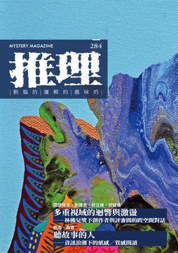
《推理》雜誌於1984年11月由「台灣推理第一人」林佛兒先生創刊，至2008年，共發行282期。停刊16年後，由台灣犯罪作家聯會取得獨家授權，於2024年6月復刊，2024年11月推出副刊2號，同時也是《推理》雜誌創刊四十周年的紀念專號。 《推理》雜誌長期作為本土作家發表創作的重要園地，在漫長的空白後，如何通過新世代的視角與對類型文學更寬廣的定義、詮釋，接續起犯罪推理在台灣的本土化發展？令人引頸期待！本期收錄內容如下： ◎封面故事◎ 與台灣藝術家盧俊翰合作，以「大石觀照」做為封面主視覺，通過藝術形象述說對於自然景色及社會現象的人文思考。 ◎本期動態◎ 創刊四十周序、主編序，以及收錄《請把門鎖好【20週年紀念全新修訂版】》、《本格MYSTERY．永恆300》兩本同樣具有跨時代意義作品之評介。 ◎主題特輯◎ 〈多重視域的迴響與激盪——林佛兒獎下創作者與評審間的跨空間對話〉，專訪第七屆林佛兒獎首獎得主——閱讀探戈，同時跨空間地與第五、六、七屆決審評審劉建志、祁立峰、邱鉦倫等人展開紙上對話，一窺復辦後的林佛兒獎的面貌與徵獎思考。 〈聽故事的人——資訊浪潮下的紙感／質感閱讀〉，專訪主理台灣推理推廣部的楓雨、戲雪，討論在不同身分下對於閱讀推廣的想法、過程與期待。 ◎余遠炫專輯◎ 專訪身兼多職的作家於選炫先生，並收錄兩篇重新修訂之短篇小說，以及歷史學者陳力航的書籍評述。 ◎創作推理小說◎ 收錄台灣新銳作家A.Z.、仁狼血黑、貝爾夫人之原創短篇小說，持續深化本土創作之發表園地。 ◎名家作品大觀◎ 收錄達許・漢密特、羅依．維克斯、飯岡秀三的珍稀作品譯作，輕易地能看見在台灣少見的翻譯作品。 ◎推理集錦◎ 「犯罪實案現場」以實案紀錄與省思為主題，解析過去發生在台灣的真實案件的背景與潛在的社會問題。 「波光衍影」以影視作品的綜合性比較為主題，探究主題創作的源流與演變。 「另眼看劇」以犯罪影視作品為評介對象，淺介影視作品的可觀處與重要性。 「遊戲開始」以犯罪、解謎為主題的遊戲為介紹對象，開啟多元載體的視野與對話。 「漫畫偵探」以四格漫畫的形式，邀請讀者共同參與探案、解開謎團！ ◎靈光乍現◎
◎封面故事◎ 與台灣新銳藝術家林錦純合作，以其獨特的「足繪」作品《舞武生風》為復刊號封面主視覺，除具有別開生面的開創氣象，也接續過去《推理》與藝術家緊密連結的傳統。 ◎本期動態◎ 收羅歷屆林佛兒推理小說獎、林佛兒獎首獎得主之賀詞、復刊序、主編序，並收錄對推理雜誌世代作家魯子青之小說評介。 ◎主題特輯◎ 〈當我們討論《推理》雜誌復刊——如何承繼一個本土犯罪文學的作家園地〉，專訪本刊榮譽發行人李若鶯女士與榮譽顧問向陽先生，暢談《推理》雜誌的過去、現在與未來。 〈召喚三代本土作家的時空記憶——小記《推理》雜誌的創作年代〉，專訪投稿《推理》雜誌的三個世代作家，從對彼此作品的認識，到台灣犯罪推理文學在台灣發展流衍的觀察。 ◎余心樂專輯◎ 專訪旅歐作家余心樂，驚喜收錄四篇微型小說。 ◎創作推理小說◎ 收錄本土作家葉桑、高雲章的原創短篇小說，承繼《推理》雜誌做為本土創作園地的初衷與傳統。 ◎名家作品大觀◎ 收錄柯南道爾、羅伊維克斯、飯岡秀三的珍稀作品譯作，輕易地能看見在台灣少見的翻譯作品。 ◎推理集錦◎ 「犯罪實案現場」以實案紀錄與省思為主題，解析過去發生在台灣的真實案件的背景與潛在的社會問題。 「另眼看劇」以犯罪影視作品為評介對象，淺介影視作品的可觀處與重要性。 「遊戲開始」以犯罪、解謎為主題的遊戲為介紹對象，開啟多元載體的視野與對話。 「漫畫偵探」以四格漫畫的形式，邀請讀者共同參與探案、解開謎團！ ◎靈光乍現◎
——後來，他們都做了該做的事；但是後來的後來，卻沒有任何一個人說得清楚，這些到底「算不算」？ ◤犯聯＋幻華．年度豪華企劃◢ 繼2025年《戀愛條款未公開》後，再次由五位作家共寫一本書。 他們都說，那只是他們該做的事。只是做完以後，留了一個找不到答案的問題——這，到底算不算？ 末日裡獨守賣場、冒死出門只為找回走丟「朋友」的人；把子宮外包、開出最高價替哥哥懷孕的女人；靠聽人說話維生、卻被一句「你今天怎麼樣」問倒的諮商師；六年前救起溺水學生、如今捲進一連串命案的退休老師；被一句「你太安分」點破、於是動手研究怎麼把自己送進警局的作家。五篇從喪屍末日寓言、社會派、當代同志心理懸疑、山城犯罪推理，一路寫到後設犯罪喜劇。 同一道難題，五篇卻各給一種互不相同的失靈：五份結構各異的標本，拆的是同一道關不上的落差，做法卻沒有一篇重複——當「該做的事」被做到無可挑剔，「算不算數」卻始終無法歸類到一個人、一把尺、一個位置上。 ◤各篇簡介◢ 01．款款〈正常人〉 ——『我把他們救進來，分糧食、讓地方，換來的卻是背後那句我「有病」。』守著末日空賣場的男人始終不懂自己哪裡有錯；而整間店裡還肯聽他把話講完的，只有一個誰也看不見的旁觀者。 02．L.C〈珍珠項鍊〉 ——『他伸手要「摘走」我的項鍊，我沒報警，只請他喝一杯。』酒吧暗處的女人說，等他聽完這條項鍊的來歷就會明白，有些東西，本來就不是拿走了就好。 03．賴特〈你今天怎麼樣？〉 ——『他每天都問我「你今天怎麼樣」，直到他死了，我才發現自己根本「認不出」他。』心理諮商師順著死者留下的線索往回追，最後連身邊本來的熟面孔，都一個個變成不認識的人。 04．四弄一號〈善與惡的距離〉 ——『六年前，為了保一個學生，我當著所有人的面做了那件事。』快退休的輔導老師想起臨海山城裡的往事，不到一個月已有三個當年的同窗，倒在「同一把刀」下。 05．白帽子〈不是好作家〉 ——『你太正常了，正常人寫不出好的小說。』編輯這句話脫口而出，讓一個守了一輩子規矩的推理作家，頭一次對犯罪「有了興趣」。 ◤名家推薦◢ 各界好評不斷—— 銀鹿、沐謙、呂尚燁、不藍燈、桑丘．聯袂推薦 邱鉦倫、卡歐鹿、陳木青、陳俊偉、戴伸峰．逐文導讀 台灣犯罪作家聯會理事長．既晴／台灣犯罪作家聯會祕書長．洪敍銘【專文導論＋導讀】 五個沒有標準答案的處境。最難的是那個始終懸在半空中的問題——這，到底算不算？
——後來，他們都做了該做的事；但是後來的後來，卻沒有任何一個人說得清楚，這些到底「算不算」？ ◤犯聯＋幻華．年度豪華企劃◢ 繼2025年《戀愛條款未公開》後，再次由五位作家共寫一本書。這一次，他們都做了該做的事，事件、動機一應俱全；可是做完之後，這究竟算不算「疾病」、「傷害」、「背叛」、「背棄」、「違法」的判定，卻怎麼樣也找不到能夠準確落下的位置。 末日裡獨守賣場、冒死出門只為找回走丟「朋友」的人；把子宮外包、開出最高價替哥哥懷孕的女人；靠聽人說話維生、卻被一句「你今天怎麼樣」問倒的諮商師；六年前救起溺水學生、如今捲進一連串命案的退休老師；被一句「你太安分」點破、於是動手研究怎麼把自己送進警局的作家。五篇從喪屍末日寓言、社會派、當代同志心理懸疑、山城犯罪推理，一路寫到後設犯罪喜劇。 同一道難題，五篇卻各給一種互不相同的失靈：五份結構各異的標本，拆的是同一道關不上的落差，做法卻沒有一篇重複——當「該做的事」被做到無可挑剔，「算不算數」卻始終無法歸類到一個人、一把尺、一個位置上。 ◤各篇簡介◢ 01．款款〈正常人〉 末日過後，李進獨自守著一間大賣場，每天冒死出門，只為了找回一個走丟的朋友。三個躲進來避難的人看他一趟趟往活屍群裡鑽，開始懷疑他是不是病了；下這個判斷的，是個實習才滿一個月的新手。城裡的醫院早就空了，誰還有資格替另一個人蓋上「不正常」的章。 02．L.C〈珍珠項鍊〉 林雅珍把子宮外包了出去，開出這輩子最高的價，替哥哥懷上一個孩子——好讓爸媽終於有個孫子可以交代。她端著酒，慢條斯理地把這串項鍊的故事，說給對面那個還不知道自己會是下一顆珍珠的人聽。這究竟算一場交易，還是一場傷害？ 03．賴特〈你今天怎麼樣？〉 伴侶諮商師謝有為靠「聽別人說話」維生。一場聚會上，他遇見方均——一個會問「你今天怎麼樣」、會真的停下來等他把話說完的人。謝有為對他說了好些從沒對任何人說過的話，包括那個睡在自己隔壁房間的伴侶。直到一通陌生來電打進來，他才開始查方均究竟是誰。查著查著，被一層層打開的，是他自己。 04．四弄一號〈善與惡的距離〉 退休在即的高中輔導老師羅修齊，捲進了鎮上一連串命案。他曾經從橋下的溪水裡，把一個快要沉下去的學生拉上岸——那是他這輩子最驕傲的一件事，他從沒懷疑過。每一具屍體上都留著一張球卡，像兇手隨手簽下的名字。而真正讓羅修齊整夜閉不上眼的，是另一個問題：他到底是救了他，還是害了他？ 05．白帽子〈不是好作家〉 齊思賢寫了大半輩子小說，始終紅不起來。一位大牌編輯給他指了條明路——你太安分了，好作家得敢碰真正的罪惡。於是齊思賢認真研究起怎麼把自己送進警局，盤算著犯下一樁足以讓自己被起訴的罪。他明明寫得出好故事，卻得先去犯一場像樣的案子。這，到底算不算違法？ ◤名家推薦◢ 強強聯手，各界好評不斷—— 銀鹿、沐謙、呂尚燁、不藍燈、桑丘．聯袂推薦 邱鉦倫、卡歐鹿、陳木青、陳俊偉、戴伸峰．逐文導讀 台灣犯罪作家聯會理事長．既晴／台灣犯罪作家聯會祕書長．洪敍銘【專文導論＋導讀】 ◤編輯推薦◢ 喜歡犯罪、推理、懸疑短篇，偏好議題厚度與道德灰區；想在一本書裡讀到多位作家聲音與多種類型筆觸；讀過《戀愛條款未公開》；想追年度共創企劃；對「行為與判准間充滿落差與懸疑」命題有感的讀者。
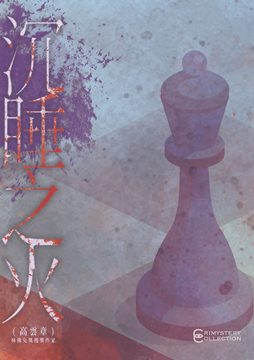
——這是霍士圖成為霍士圖之前的故事，或許也是王萬里成為王萬里之前的故事。 ◤內容簡介◢ 1980 年，紐約。警校畢業前夜，一車剛考完試的華裔警校生在無線電裡跟住在法拉盛的同學易千帆道別。喇叭那頭先傳來門鈴聲，接著是兩個陌生男人的腳步。 那一晚，易千帆失去了妻子、三歲的女兒，和自己的下半身。檢察官手上沒有足夠的證據，跟兇手談成認罪協商——從犯認罪入獄，主犯當庭走出法院。本該一起戴上警徽的同窗就此走散；易千帆推著輪椅，從所有人的視線裡消失了五年。 1985 年，從犯送上電椅的那一夜，電椅出了事。從那晚起，命案一樁接著一樁，每一樁都不該發生，而唯一能指向的嫌疑人，始終半身癱瘓、好端端坐在看守所裡。易千帆主動投案，命案卻沒有停；死者一個比一個離他遙遠，但每一次案發，他都待在同一間牢房，連門都沒出過。他在牢裡按時吃飯、按時睡覺，偶爾跟檢察官談一點小交易：一顆蕎麥枕頭，換一條人命的下落。「你要有證據才能起訴人，」他對檢察官說，「最早還是五年前你教會我這一點的。」 當年車上的人，如今一個當上刑事組長，一個成了報社攝影記者，攝影記者身邊還跟著一個推理快過所有人的文字記者搭檔。三個人想趕在下一樁命案之前，弄清楚同一個問題：一個關在牢裡、連站都站不起來的人，要怎麼殺得了牢外的人？他到底，布了多大的局？ ◤得獎紀錄◢ 作者曾獲第四屆林佛兒推理小說獎佳作。 ◤名家推薦◢ 林佛兒獎、島田莊司獎決選作家．四弄一號：「我們或許無法認同那些走向極端的手段，卻在某些時刻，無比深刻地理解了他們為什麼會做出這樣的選擇。」
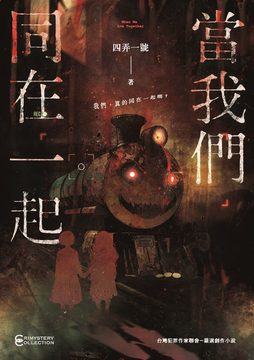
【重磅懸疑鉅作】《當我們同在一起》 ——在無所不在的鏡頭下，你看到的是劇本，還是人性的至惡？ 「當我們同在一起，其快樂無比……」 這首你我耳熟能詳、輕快愉悅的經典兒歌，其譜曲的背景，竟是西元1679年維也納爆發黑死病大瘟疫的慘烈年代。當時的人們，為了哀悼那些無數被推入集體屍坑、被迫「同在一起」的亡魂，唱出了這首看似歡樂，實則充滿絕望與陰森的輓歌。 而現在，這首帶著血色詛咒的童謠，即將在一個星光熠熠的舞台上，再次奏響。 【一場弄假成真的殺戮實境秀，零死角的死亡直播】 故事的序幕，拉開於當下最火熱的推理實境秀節目——《全明星探案》第二季。 九位各具話題性、甚至各自深陷公關危機的當紅藝人：有陷入桃色風暴的花花公子、深具內涵的知性影帝、遭遇醜聞的資深作家、智商超群的天才學霸、炙手可熱的偶像女星……他們被製作單位重金邀請，齊聚在一間即將拆除的深山五星級溫泉飯店內。 在未來與世隔絕的四天裡，他們必須在這座宛如「暴風雪山莊」的封閉建築中，面對無所不在的監視器，展現自己的推理智慧，破解製作單位精心設計的懸疑命案。 所有人都以為這只是一場充滿噱頭的演藝圈遊戲，只要照著「劇本」走，就能收穫名氣與流量。然而，當第一扇命案現場的房門被推開，迎接他們的不是塗著假血漿的臨時演員，而是被氰化物毒殺、死狀悽慘的真實屍體！ 原本應該是虛構的推理遊戲，瞬間淪為真實的殺戮浴場。參與的藝人接二連三慘遭毒殺與刺穿心臟而死。飯店被徹底封鎖，通訊全無，原本保護他們的攝影機，成了記錄恐懼與死亡的冷酷之眼。 【來自過去的亡靈：「嘆息者」的復仇之戰】 就在眾星陷入恐慌、互相猜忌之際，廣播系統中突然傳來了經過變聲器處理的詭異宣告。一個自稱「嘆息者」的蒙面武裝團體，駭入了飯店的中控室，挾持了幕後工作人員，並全面接管了這場實境秀。 為了討回公道，「嘆息者」佈下了這個天羅地網。他們要熱這些藝人，在全國觀眾面前血債血償！ 【直擊法學與道德的終極叩問：卡涅阿德斯船板難題】 《當我們同在一起》不只是一本刺激的推理小說，它更是一把解剖人性的鋒利手術刀。 隨著案情在恐懼中被層層剝開，當年海難的殘酷真相也浮出水面。小說深刻探討了法學上著名的「卡涅阿德斯船板」（Carneades' Plank）難題：在茫茫大海中，當面臨生死存亡，而救生衣的數量卻遠遠不足以拯救所有人時，為了保全自己的性命而眼睜睜看著他人溺斃，甚至剝奪他人的生存機會，在法律上或許能因為「緊急避難」而獲得寬恕，但在道德的法庭上，這些光鮮亮麗的明星，真的無罪嗎？ 作者將演藝圈的明爭暗鬥、資本主義的冷血貪婪，與人在極端環境下的自私自利完美交織。那些在螢光幕前維持著完美人設的偶像，在面臨死亡威脅時所展現出的醜陋、懦弱與背叛，讓人不寒而慄。 【非典型神探的破局，與令人窒息的連環反轉】 面對這起牽涉龐大娛樂帝國、錯綜複雜的連環命案，挺身而出的是北都分局的刑事組長——譚悟真。他沒有英挺的西裝，總是一身黑色T恤搭配水洗牛仔衫，外表看似散漫隨便、滿嘴無厘頭的「鬼故事」推理，實則擁有一雙能看透所有謊言的鷹眼。 在譚悟真與冷豔法醫辛茵霏、天才資工刑警「快手」的聯手追查下，看似完美的「嘆息者」復仇計畫，開始出現了難以解釋的裂痕。 如果「嘆息者」只是為了復仇，為何現場的殺人手法充滿了矛盾？為何一個連當年都不在船上的藝人，也會成為被毒殺的目標？ 「你以為他們是復仇者？不，他們也只不過是別人手裡的刀。」 《當我們同在一起》展現推理小說中最極致的「案中案」與「局中局」。當你以為看透了真相，作者卻會在下一頁輕易推翻你的認知。這是一場借刀殺人的完美犯罪，隱藏在「嘆息者」背後的，是一個智商極高、深藏不露的天才執棋者。真兇就隱藏在鎂光燈與受害者之中，利用了所有人的仇恨與恐懼，編織出了一張誰也逃不掉的網。 【當資本連真相都能改寫，我們還能相信什麼？】 最令人毛骨悚然的，往往不是命案本身，而是事後的餘波。小說的結局給予了現代傳媒與群眾極大的一記耳光。當所有的血腥與罪惡落幕，娛樂資本竟能再次運作，將這段殘酷的真實殺戮「洗白」，改編成一部溫馨感人的高規格影集，讓大眾的記憶輕易被「劇本」所替換。 《當我們同在一起》，這是一場華麗而殘酷的演藝圈大秀。 現在，監視器的紅燈已經亮起，倒數計時開始。 你，能看穿這份嗜血的劇本，找出隱藏在九人當中的終極真兇嗎？ 【各界名家、推理迷一致屏息推薦，今年絕對不能錯過的犯罪推理神作！】
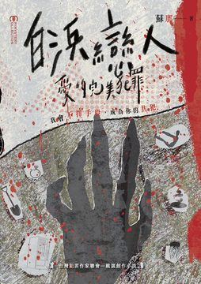
這是一本無法一語道破真相的短篇小說集，由香港作家蘇那精心編織而成，收錄六篇以日本旅程為舞台的關係懸疑故事。如同書名暗示的共犯關係，每一篇都探討了愛情中最微妙、最黑暗的界線。 故事的魅力，在於作者對敘事視角的大膽顛覆。讀者將不再擁有全知觀點，而是必須在多重角色的第一人稱獨白中拼湊事實。當主角A的敘事看似完整，切換到主角B時，卻發現完全不同的詮釋與動機。這種「複調性」的寫法，精準捕捉了親密關係的本質：我們永遠無法完全理解另一個人。 在首篇〈土山之謎〉中，一位香港工程師湯米，因公或因私前往日本滋賀，他的行蹤與怪異舉動，引發了妻子珍妮極度的不安與懷疑。珍妮決心尾隨丈夫，試圖釐清那些關於「人偶」與「自洗衣服」的細微線索，這場越洋跟蹤的過程，不僅是尋找外遇的證據，更是珍妮直面自身童年陰影與創傷的旅程。 其他故事如〈失戀溫泉〉、〈白浜戀人〉、〈難波異人〉等，則將場景拉至日本各地，探索三角糾葛、家庭記憶與被壓抑的慾望。所有場景——無論是搖晃的夜車，還是與世隔絕的溫泉——都不只是背景，而是人物內心世界的投射。本書的懸念，不來自於謎底的揭曉，而是源於人心的難測。它提醒我們，在愛的世界裡，每個人都有自己的一套說詞，而那所謂的「真相」，得靠讀者自己去發現與承擔。 ※ ——「我會不擇手段，成為你的共犯。」 蘇那繼《十三夜話》後，再次以輕懸疑推理風格，深度探討現代親密關係的短篇小說集。全書六個獨立故事，雖然背景設定在日本的滋賀土山、和歌山白浜、北海道函館等知名地景，但其核心關注的卻是跨越地域的共通人性議題：在愛情與親情中，信任與背叛的界線何在？ 作者大膽採用「多重第一人稱」寫法，創造出文學評論家巴赫金所稱的「複調」結構，讓同一事件在不同角色的獨白中產生巨大的視角落差。讀者如同身處一場「關係羅生門」的迷宮，觀看主角們在情感鋼索上小心翼翼地試探、計算與猜忌。 這不僅是六則愛情故事，更是六次對人性底線的真實性檢核，邀請讀者在遠離日常的異鄉風景中，直視愛最陰暗而複雜的面貌。 ※ 2024角川百萬小說大賞首獎／Shika 西卡．專文導讀 島田莊司獎得主／牧羊少年T KodoKado百萬小說創作大賞／L.C 2025 TCCF故事系列專場入選／A.Z. ．殘愛推薦
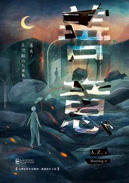
——「最深的惡意，往往穿著「善意」的外衣」 金獎作家A.Z. 2026年突破自我創作、2025年榮獲國家文化藝術基金會創作補助之年度鉅作。 ★ 揭開偽善者的真面目！一場以愛為名的精神屠殺 ★ 融合高雄氣爆真實地景，直視台灣中產階級最深層的焦慮 ★ 猶如台版《寄生上流》遇上《控制》，令人窒息的心理驚悚神作 ※ ——當「善意」成為最致命的毒藥，你的『完美家庭』還撐得住嗎？ 【你以為的救贖，其實是地獄的入口】 高雄氣爆過後，城市留下了難以癒合的傷疤，卻也有人趁著混亂，悄悄在人心的斷垣殘壁中播下惡意的種子。 我們總是相信，破壞來自於暴力與恨意。然而本書將顛覆你的認知：摧毀一個高學歷、高收入的「完美家庭」，只需要一位溫柔熱心的「好阿姨」，以及無微不至的「善意」。 【誰在說謊？誰又是清醒的旁觀者？】 ☆她擁有「專業性冷漠」的防護色，在氾濫的災難悲情中，她是唯一保持清醒的獵人。她那雙冷酷的眼睛，掃描到了災民名單中一戶過於完美的家庭，嗅出了那股精心掩蓋的腐敗氣息。 ○她不拿刀、不見血，僅憑著植入式的關懷與照顧，就接管了名醫李俊明一家的身心靈。她利用人性的軟肋，將親情的堡壘改造成一座互相撕咬的戰場。 ※ 這不只是一部犯罪懸疑小說，更是一面映照當代社會的黑鏡。A.Z.以少見冷峻的筆觸，犀利剖析了高知識分子在面臨極端壓力時的脆弱。看似堅固的社會階級與菁英光環，在精心設計的精神操控下，竟然如此不堪一擊。 城市的外部災難與家庭內部的崩解互為隱喻。讀者將深入這場沒有煙硝的戰爭，目睹故事角色如何跨越體制的僵化界線，對抗那股以『愛』為名的巨大惡意。 ——唯有直視這份黑暗，我們才能辨識出什麼是真正純粹的愛。 ※ 林暢 職業編劇與作家，入圍第44屆金馬獎優良電影劇本、 款款 臨床心理師與作家，作品入選文策院 2025 韓國 ACFM - Busan Story Market 單元台灣代表作品——誠懇推薦
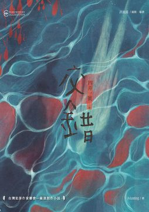
資深刑警譚悟真，外表隨性、邏輯能力超群，正忙於應付一樁棘手的命案：北都新興天龍國「出雲街」的頂級豪宅內，市議員李健毅的私生子徐本庠被發現慘死浴缸，全身綑綁，屍體已腐敗。這起社會矚目的大案很快鎖定嫌犯謝益齊。然而，當警方準備收網之際，謝益齊卻被發現分屍，棄置在河邊的行李箱中。這看似「以惡制惡」的結果，卻被鑑識官辛茵霏的鑑定徹底顛覆。 辛茵霏推斷，謝益齊的死亡時間，可能早於監視器捕捉到他進入徐宅犯案的時刻。這瞬間將單純的兇殺案推向了極致的智力博弈——警方必須解釋：「死人如何殺害活人？」 隨著案情發展，幕後黑手利用警方辦案過度依賴監視器的習慣，精心釋出破綻、製造誤導。案發時正值敏感的選舉季節，李大議員的黑白兩道勢力緊密籠罩著整個警署，使得譚悟真團隊不僅要對抗高智商的兇手，還必須同步對抗來自政治與權力的巨大壓力。 從高檔封閉式社區的「安全場域」到充滿縫隙與不確定性的老舊華廈，兇手巧妙地調度著你我日常中的「尋常」空間，使城市本身成為難以追蹤的迷宮。在時間不斷流失、李議員又被綁架的壓力下，這場追逐的不僅是真相，更是司法能否在權力交錯的台灣社會中，尋回其最終的正義。這是一部結構嚴謹、在地氛圍濃厚，且充滿人性糾葛的本格推理小說。 ※※※ 《交錯》是台灣犯罪推理文壇一顆遲來卻不容忽視的震撼彈，它成功將本格推理的精巧詭計與社會派的在地批判融為一爐。故事核心圍繞一樁挑戰警方邏輯底線的雙重命案：議員私生子徐本庠在高度管理的豪宅社區內溺斃，而頭號嫌犯謝益齊的屍體在五天後被發現時，法醫辛茵霏卻推論謝益齊可能在徐本庠遇害前已死亡。監視器畫面鐵證顯示「死人」駕車前往犯罪現場，這是超自然現象？或者更高段的智力挑釁？ 作者四弄一號擅長從「詭計」出發，擬定了一樁針對現代科技辦案盲點的「完美犯罪」。兇手精準利用城市空間的差異性——從可視可控的河岸豪宅到監控稀疏的老舊華廈——進行線索誤導與時間錯置，使警探譚悟真與其團隊陷入苦戰。更關鍵的是，案件發生在選舉前夕的肅殺時刻，受害者李大議員黑白兩道通吃，權力介入使辦案過程充滿警署高層、媒體輿論與政黨鬥爭的巨大壓力。 本書的魅力，在於它不僅僅是解謎遊戲。它深入刻劃了人性中燒之不盡的強悍執念，探討階級壓迫下私刑正義的萌芽。透過譚悟真與辛茵霏專業且接地氣的辦案視角，讀者將親身經歷這場充滿本土地域感、高娛樂性且細膩入微的鬥智鬥法。這部作品不僅是類型小說的躍進，更是對台灣在地政治生態與城市地理學的一次深刻凝視，保證讓讀者深感「相見恨晚」。
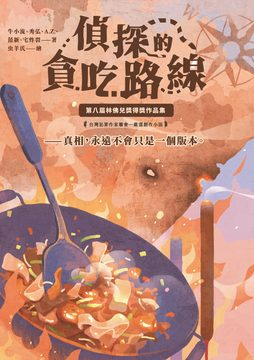
罪與慾的低語在黑夜中迴響，真相之戰在無聲中角力——《第八屆林佛兒獎得獎作品集》匯聚五則直擊人心的懸疑故事，帶領讀者闖入罪惡與真相交織的重重迷霧。 「林佛兒獎」是由享有「台灣推理小說第一人」美譽的林佛兒先生創立的獎項，闊別多年後於2021年復辦，延續舉辦四屆。該獎項致力於發掘華文犯罪推理創作的新秀。林佛兒先生生前創辦《推理》雜誌與林白出版社，極力推廣本土推理創作，因此以他命名的獎項也承載著推理文學薪火相傳的使命。該獎強調類型魅力與文學深度並重，要求作品兼具精巧謎局的推理性、濃厚本土風情的在地性、關照現實的社會性，以及引人入勝的可讀性。第八屆徵文共有數十篇作品激烈競逐，最終脫穎而出的五篇桂冠之作不僅品質卓越，更充分展現了上述精神。這些懸疑小說題材各異、風格多元，透過不同切面探索罪惡與人性的幽微，以及真相與慾望之間的角力。 〈偵探的貪吃路線〉（作者：牛小流）：馬來西亞推理作家牛小流擅長結合美食與懸疑，本作將兩者巧妙融合：一名嗜吃的偵探在味蕾與線索交織之間追尋真相。一樁離奇案件將他引向隱藏於市井巷弄的美味路線，他循著餘燼與香氣追查真相，從舌尖細節發現破案關鍵。透過料理之心照見被遺忘的日常角落，在平凡滋味中暗藏難以察覺的秘密。故事兼具美食小說的溫馨與推理故事的機鋒，讀來既暖胃又燒腦。讀者將隨主角一同品嚐美食、追蹤線索，在令人垂涎的料理描寫中發現隱藏的真相。 〈殘香〉（作者：秀弘）：一縷殘存的幽香牽引出塵封多年的往事與罪孽。故事圍繞嗅覺與記憶展開：熟悉的氣味令主人公重返久遠歲月，也揭開塵封記憶中藏匿的祕密。香氣裡蘊藏的不只是懷念與哀愁，還有揮之不去的罪責陰影。全文弦歌悠揚而悲淒，在迷離芬芳的線索中追索真相，詩意與懸疑交織，餘韻繾綣悠長。作者巧妙運用氣味這條隱形線索，引領讀者穿梭於記憶與現實之間，經歷一場既感動又揪心的追兇旅程。隨著謎團層層剝開，主人公亦在香氣引導下直視內心深處的創傷與歉疚，完成一場遲來的自我和解與救贖。 〈無實〉（作者：A.Z.）：一宗離奇命案找不出任何犯案動機，真相如鏡花水月般難以捉摸。故事自一樁看似毫無緣由的犯罪揭開序幕，偵探與讀者在缺乏動機的迷宮裡摸索前行。當傳統推理的因果法則失靈，調查彷彿陷入虛幻迷霧，現實與幻象的界線逐漸模糊。作者以冷峻的筆調刻畫出荒誕卻真實的人性側面，拋出「若罪惡毫無緣由，我們該如何尋找答案？」的深層疑問，在無解之謎中帶來震撼與深思。同時也折射出現實中無差別罪行的荒謬與無奈。這部作品顛覆傳統解謎模式的創意，使其在競賽中脫穎而出，展現了推理小說更多元的可能性。詭譎多變的情節如同一道待解的思想習題，挑戰著讀者對犯罪動機與理性世界的想像；讀畢令人不寒而慄，餘味猶存。 〈各取所需〉（作者：范新）：一場對「正義」的追尋中沒有非黑即白的答案。故事裡每個角色都有自己的盤算：被害者、加害者、調查者乃至局外人各取所需、各持理由，使真相與公理變得撲朔迷離。作者張力十足地描繪出黑白之間的灰色地帶，良知與慾望在此角力拉鋸。正義從不純粹，每個人都只帶走自己渴望的那一部分，發人深省。讀者仿佛置身於正義辯論的審判席，在多角度的敘事中反思人性善惡的界限。透過這場懸疑劇，作者也映照出社會中正義與私慾角力的縮影，引人深思。 〈網路許願蒐證部〉（作者：宅炸裂）：在虛擬網路的深海中，人們的願望與秘密交織成一場詭譎交易。傳聞有個隱秘的網路社群，專門蒐集願望實現的代價和違罪的證據，一旦涉足便如同與魔鬼進行靈魂交易。故事中的主角為滿足心願而闖入這片數位暗域，卻發現每個願望的實現都伴隨無法承擔的沉重代價。真相與陷阱潛伏在看不見的線上角落，網路世界的匿名便利放大了人性的欲望與弱點。作者將科技驚悚與都市傳說相融合，打造出節奏緊湊、高潮迭起的當代都市奇譚，帶領讀者探視螢幕背後隱藏的人性渴望與恐懼，發人深省。最後不禁自問：當欲望被無限放大，我們是否準備好承受靈魂交換的慘痛後果？ 這五部作品從截然不同的面向審視罪惡與人心：或溫馨寫實、或哀婉細膩、或奇幻詭譎、或燒腦縝密、或激烈辯證，各自成章卻共同描繪出當代華文推理小說的多元風貌。閱讀本書，猶如走進一座懸疑與思辨並存的故事萬花筒：您將隨美食偵探品嚐真相滋味，在幽幽殘香中追憶往事，挑戰無解之謎的思維極限，見證正義與慾望的拉鋸角力，並在虛擬世界的誘惑前拷問人心。每一頁都引人入勝、驚奇不斷，發人深省，令人欲罷不能。 屏東大學中文系劉建志助理教授 金門大學通識教育中心陳俊偉助理教授 ——讚譽推薦
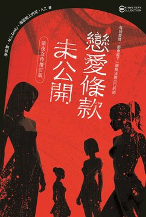
※全新四篇極短篇小說創作 ※首刷限定！隨書附贈紀念明信片 《戀愛條款未公開》由四位女性作家攜手創作，原收錄李奕萱、M.S.Zenky、海盜船上的花、A.Z.的四篇短篇小說，交織出愛情、身體、性別與都市情感治理的樣貌。 增訂版特別企劃「暗夜女伶」，以「每段愛情，都會留下一個無法說出口的詞」為題，四位作家互換主題創作四篇全新極短篇小說，彼此呼應對照，深化原書「在這座城市裡，愛是最合法的詐欺」的主題。 新篇章描摹戀愛中的殘酷、溫柔與模糊地帶，在看似熟悉的都市場景中試探愛與控制的邊界，模糊虛擬與真實的分野，探索秘密與暴露之間的角力。風格橫跨浪漫、懸疑、科技與職場等面向，為原作增添更多元的敘事層次與文學感知。 〈牛奶糖〉（作者：A.Z.）：打工場所裡的微妙互動，讓兩位年輕人逐漸走近。她活潑外放，他冷淡寡言，卻在一次摔車意外中打破隔閡。一盒牛奶糖，成為他們之間甜蜜卻曖昧的暗號。故事以輕巧的筆觸描繪初戀的試探與心跳，帶著日常的氣息與細膩的溫度，展現最單純卻最讓人心癢的愛情可能。 〈初始化：逆愛協議〉（作者：海盜船上的花）：她在自己戀愛AI裡重新找回心跳。螢幕上的虛擬戀人懂她、呵護她，甚至比真實的伴侶更貼近她的靈魂。然而，當人工親密逐漸介入現實，愛與控制的界線悄然瓦解。這是一場都市愛情與科技幻象交織的試煉，揭露當代親密關係的孤獨與危險。 〈專屬於你的料理〉（作者：李奕萱）：她是一名餐館老闆，以貼合客人口味為志業。與戀人相遇後，她試著用料理傳遞愛意，卻逐漸發現自己失去了熱情。當心底的倦怠與矛盾浮現，她決定在紀念日重新點火，用一道料理找回最初的悸動。愛情與烹飪在廚房裡交纏，滋味中藏著不願言說的祕密。 〈Perfect Pink〉（作者：M.S.Zenky）：綺羅是舞台上最耀眼的偶像，受到粉絲狂熱的追捧。她的伴侶小心守護著兩人隱秘的生活，卻始終無法抗拒那股從舞台延伸到日常的愛意漩渦。當偶像與粉絲的界線愈加模糊，愛情化為一場吞噬一切的表演，留下的，只有粉紅色的眩目幻象。 特別收錄的四篇極短篇，以「每段愛情，都會留下一個無法說出口的詞」為題。從AI幻象到日常甜蜜，從料理記憶到偶像狂熱，四位作家互換主題，描摹愛情在都市中的曖昧與殘酷，交織出無法言說的秘密與悸動。 台灣犯罪作家聯會祕書長 & 《推理》雜誌執行主編——專文導讀
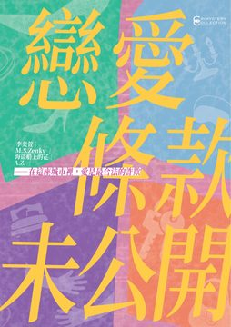
愛不是不公平，而是從未平等開始 四個戀愛故事，四位女作家，一本戳破「戀愛浪漫」與「情感等價」神話的小說集。 這不是溫柔療癒的愛情小說，而是一次對「戀愛條款」的冷靜拆解與誠實書寫。 愛情為何總與市場、標籤、履歷表掛鉤？ 詐騙的，不只是帳戶，而是我們對親密的期待。 每一段關係，是否都默默簽下了一張條款未公開的合約？ 【台灣犯罪文學史上的華麗特典 vs. 《推理 292：她》專欄夢幻聯動！】 由李奕萱、M.S.Zenky、海盜船上的花、A.Z.等四位當代小說創作者發聲，以四篇風格鮮明的短篇小說為軸，每篇後皆附評論者剖析文本深度與當代意義，呈現「小說 × 評論」的雙軌閱讀體驗。這些故事聚焦於當代都會戀愛中關於交換、欺瞞、控制與自我追尋的主題，不論是來自現實的剝削還是情感上的幻覺，都折射出台灣女性在情感秩序中的身體政治與心理困局。 ◆〈沒有腳還是要跳舞〉｜李奕萱 她穿上紅鞋，就像穿上一段註定受傷的戀情。 在交友軟體上遇見完美過頭的 Jason，安倫早知道他可能是詐騙，但她還是忍不住投入對話、投入一點點希望。她不是無知，而是太清楚這市場的遊戲規則──寂寞、有禮貌、要會微笑。這是一場關於「條件戀愛」的極致試驗，一場明知代價也仍想跳舞的殘酷比喻。 ◆〈一千零一夜的擁抱〉｜M.S.Zenky 睡前的擁抱，是租來的還是給予的？ 他提供擁抱服務，不觸碰不談情，只是短暫的溫柔。這篇小說藉由「收費擁抱」這個看似虛構卻真實存在的都市服務業，映照出人與人之間的距離與渴望。擁抱是否能取代愛？又是否只是一種形體上的贖罪？在極度孤單的城市裡，溫暖也成了一種消費品。 ◆〈獵愛攻略手冊〉｜海盜船上的花 愛情是狩獵，還是交易？ 網美何純潔以外貌與人氣為武器，在戀愛市場中呼風喚雨，直到有天，她被自己設計的戀愛系統反咬一口。當「女力」成為話術、當「愛」等於競標勝利，她不得不質疑自己是馴獸師，還是被豢養的那一位。 ◆〈Illusion〉｜A.Z. 若真愛存在，會是幻覺嗎？ 她墜入一場既是感官遊戲也是犯罪布局的戀愛之中。她愛的是對方的溫柔、神秘、對她的凝視……但越來越無法區分，自己是被疼愛，還是被操控。這部作品混合懸疑與愛情，提出對戀愛中「真實」的追問：你以為的親密，可能只是設計好的幻象。 黃麗原、李讓、陳致安、禾風 推薦 晤婧、蔡芷瑜、藍念初、簡君玲 專文導讀 洪敍銘 導論 ——沒有完美結局，只有誠實答案。
愛不是不公平，而是從未平等開始 四個戀愛故事，四位女作家，一本戳破「戀愛浪漫」與「情感等價」神話的小說集。 這不是溫柔療癒的愛情小說，而是一次對「戀愛條款」的冷靜拆解與誠實書寫。 愛情為何總與市場、標籤、履歷表掛鉤？ 詐騙的，不只是帳戶，而是我們對親密的期待。 每一段關係，是否都默默簽下了一張條款未公開的合約？ 【台灣犯罪文學史上的華麗特典 vs. 《推理 292：她》專欄夢幻聯動！】 由李奕萱、M.S.Zenky、海盜船上的花、A.Z.等四位當代小說創作者發聲，以四篇風格鮮明的短篇小說為軸，每篇後皆附評論者剖析文本深度與當代意義，呈現「小說 × 評論」的雙軌閱讀體驗。這些故事聚焦於當代都會戀愛中關於交換、欺瞞、控制與自我追尋的主題，不論是來自現實的剝削還是情感上的幻覺，都折射出台灣女性在情感秩序中的身體政治與心理困局。 ◆〈沒有腳還是要跳舞〉｜李奕萱 她穿上紅鞋，就像穿上一段註定受傷的戀情。 在交友軟體上遇見完美過頭的 Jason，安倫早知道他可能是詐騙，但她還是忍不住投入對話、投入一點點希望。她不是無知，而是太清楚這市場的遊戲規則──寂寞、有禮貌、要會微笑。這是一場關於「條件戀愛」的極致試驗，一場明知代價也仍想跳舞的殘酷比喻。 ◆〈一千零一夜的擁抱〉｜M.S.Zenky 睡前的擁抱，是租來的還是給予的？ 他提供擁抱服務，不觸碰不談情，只是短暫的溫柔。這篇小說藉由「收費擁抱」這個看似虛構卻真實存在的都市服務業，映照出人與人之間的距離與渴望。擁抱是否能取代愛？又是否只是一種形體上的贖罪？在極度孤單的城市裡，溫暖也成了一種消費品。 ◆〈獵愛攻略手冊〉｜海盜船上的花 愛情是狩獵，還是交易？ 網美何純潔以外貌與人氣為武器，在戀愛市場中呼風喚雨，直到有天，她被自己設計的戀愛系統反咬一口。當「女力」成為話術、當「愛」等於競標勝利，她不得不質疑自己是馴獸師，還是被豢養的那一位。 ◆〈Illusion〉｜A.Z. 若真愛存在，會是幻覺嗎？ 她墜入一場既是感官遊戲也是犯罪布局的戀愛之中。她愛的是對方的溫柔、神秘、對她的凝視……但越來越無法區分，自己是被疼愛，還是被操控。這部作品混合懸疑與愛情，提出對戀愛中「真實」的追問：你以為的親密，可能只是設計好的幻象。 黃麗原、李讓、陳致安、禾風 推薦 晤婧、蔡芷瑜、藍念初、簡君玲 專文導讀 洪敍銘 導論 ——沒有完美結局，只有誠實答案。
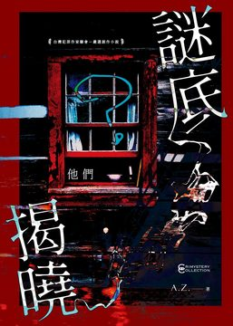
謎底，是一場心靈突襲的開端。 在眾聲喧嘩的社群時代，真相似乎無所遁形。然而，越是資訊透明，越是讓人感到陌生的，其實是最貼近的生活——鄰居的一句寒暄、朋友的沉默片刻、某日熟悉路線上出現的陌生人。A.Z. 的小說集《謎底揭曉——他們》正是這樣一本讓人從「平凡」中感到「不安」的作品。 全書共收錄11篇短篇小說，涵蓋心理懸疑、人性疏離、都市孤寂、家庭關係與群體壓力等主題，筆法克制、語言精準，以細膩而冷靜的觀察捕捉現代人內心深處不願言說的裂縫。每一篇都像一塊微光閃爍的玻璃碎片，反映著生活中那些稍縱即逝卻深刻滲透的情緒漩渦。 《謎底揭曉——他們》不是一本靠「結局反轉」來支撐的小說集，它的強度來自潛伏的壓力、沈默的情緒、與始終如影隨形的疑問感。你會發現，謎底從來不在最後一頁，而是在故事開始時角色的一個眼神、一句話語，或是在你自己腦海中冒出的第一個「為什麼」。 在「他們」的故事裡，我們讀見了自己未曾承認的情感與殘影。 你準備好揭曉自己的謎底了嗎？ 社群編輯•Leo導讀 推理作家 白帽子、L.C、飛樑 一致好評！
三百年的秘密，兩個時代的約定。 在日本長野深山的雙生村落，霍士圖與王萬里踏上探尋真相的旅程，揭開纏繞三百年的愛情悲劇、家族宿怨與神祕異能的謎團。 當歷史與傳說交織，當禁忌的機關一一啟動—— 亡靈的低語、兵器的回聲，指向那棵古老的「願望樹」。 這不僅是一部扣人心弦的推理小說，更是一曲關於記憶、認同與寬恕的詩。 跨越時間的邊界，誰能在願望樹下實現最後的約定？ ——如果真相與希望只能選一個，你會選擇哪一個？ 【三百年的秘密，在桃花盛開之地甦醒】 在日本長野縣群山環繞的偏遠村落，上村與下村自古以來以一座吊橋相連，卻世代沉默對峙。傳說中，只要情侶在「願望樹」下許下誓言，便能終生相守。然而，三百年前的一場悲劇——武將須賀一馬與幕府將軍之女凜姬的愛戀，以死亡與離散劃下句點，也為村落留下揮之不去的陰影。 來自美國的記者搭檔霍士圖與王萬里，原本只為了履行友人之託前來，卻意外捲入層層迷霧。他們追查的，不僅是失落的墓穴與傳說兵器「無常」，更牽動著橫跨數百年的家族糾葛、權力陰謀與禁忌之愛。隨著時間線在現代與過去之間交錯，五大守護機關接連啟動，外來者相繼遇害，歷史的幽靈似乎在低語：真相的代價，未必是所有人承擔得起的。 小說巧妙融合歷史、奇幻與推理元素，在充滿東洋民俗風情的背景中，鋪陳出一幅細膩的卷軸畫。無論是古老的打鐵世家、神社宮司、還是尋求答案的年輕世代，每個角色都背負著血脈的責任與個人的抉擇。在扣人心弦的解謎過程中，也探討了記憶、身份認同與寬恕等深層主題。 《三百年後，能在願望樹下見到你嗎？》不僅是一場智力的挑戰，更是一段情感與靈魂的療癒之旅。當過去的亡靈甦醒，當禁忌被打破，你是否願意在願望樹下，為真相與希望做出最後的選擇？ 歷史學者•陳力航、社群編輯•Leo 雙導讀！ 慣看春秋、張愛、A.Z. 感動推薦
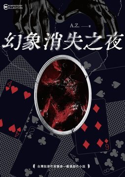
——人，往往被眼見為憑所迷惑，看不見的角落，才是真正的關鍵。 飲料外送員胡子齊，在一次送單時，撞見離奇的「人體自燃」慘案，竟發現其手法與他所鑽研的魔術技巧有著微妙關聯。接著，原本是律師、如今成了菜鳥警察的李博亞，經過自燃案和胡子齊合作過後再度找上門，他帶來一樁舞台劇演員自戕案，卻隱隱透露出詭異的「表演痕跡」。 ——發生一次是巧合，二次是故意，三次就是在練習。 胡子齊愈深入調查，愈能感受到幕後黑手似乎在利用魔術概念，一步步操控命案的發生。當墾丁畢業旅行的學生集體中邪，當世界魔術大會即將登場，一連串異常事件背後都指向同一個神秘身影。 面對魔術與推理交織的燈光與暗影，這場真正的主秀究竟是精心預謀，還是更深層的陰謀詭計？李博亞與胡子齊這對「魔術師×警察」組合，必須在最後關頭拆穿這場大騙局，揭開真相的帷幕——否則，所有人都將身陷一場前所未見的幻象之中。 台灣犯罪作家聯會嚴選犯罪小說第六彈 艾德嘉、陳俊偉 重磅雙導讀！ 十二位作家／評論人／編劇／主持人 聯合好評推薦 ——隱藏在幻象背後的愛與背叛，將無所遁逃
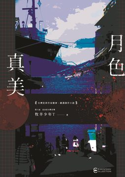
【月亮啊，必須要懲罰言而無信的人！】 涉及人命的案件，只有三個可能——意外、自殺、他殺。 一篇名叫《啞鈴島七不思議殺人事件》的網路小說正在連載中，裡面的幾個故事，都是偽裝成「意外」或「自殺」的謀殺案。 在警署上班的伍翠珊一天發現自己竟成了故事中的「角色」，並且小說裡的致命事故逐一在現實中發生，有人僥倖生還，也有人真的死去…… 每宗案件的最大嫌疑人，都有著完美的不在場證明。 幾宗意外純屬巧合？還是有誰在背後暗暗操縱著一切？ 那位筆名叫做派翠．阿嘉的作者，到底是誰？ 【真相，只有月亮知道】 第八屆島田莊司獎首獎得主，牧羊少年Ｔ最新力作。 王元 & 提子墨 & 麟左馬 & 四弄一號 & 王稼駿 & 蘇那 歷屆島田莊司獎讀者，跨國同聲好評讚譽！
──這部充滿詭譎氣氛的故事，唯有高雲章洗鍊之筆才得以呈現。 飛樑、簡君玲雙解說 台灣犯罪作家聯會 既晴、AZ、Aris雅豊斯、牛小流、輝彌 一致好評推薦 〈同客車〉 兩名一高一矮，從美國來台灣出差的日本籍旅客：風間新平跟一文字轟太郎，為了前往機場搭機離台在路邊攔便車，意外遇到了以唐十觴為首的飆車集團，並認識了唐十觴的女友仲燕梅。 兩人在搭唐十觴的車前往機場時，唐十觴自承上車前喝了好幾瓶酒，還炫耀自己酒喝得愈多，車子開得就愈穩。而且多年來靠著某個身為律師父執傳授的秘技，從未因為酒駕被抓。 飆車集團在途中的超商休息購物時，轟太郎發現仲燕梅舉止有異，私下詢問才發現仲燕梅的弟弟仲雨樺多年前被酒駕的唐十觴撞死，但唐十觴靠著父執傳授的方法成功逃過酒駕指控，仲燕梅不顧身為警員的男友反對，故意接近唐十觴，準備將毒物加入酒裡，毒殺唐十觴為弟弟復仇。轟太郎知情後，認為仲燕梅選擇的毒物對唐十觴無效，坦承自己跟同伴是藥廠負責遞送特殊藥劑的技術顧問，並偷偷交給仲燕梅藥廠以「包法利夫人」為研發代號，只要一滴就會引發心臟麻痺的實驗性劇毒。 從超商出發後不久，飆車集團的途中遇到警車迎面而來，仲燕梅準備下毒時，被唐十觴的小弟識破兩人身份，雙方僵持之間，警車也在緩緩接近。 唐十觴這次是否能像過去一樣，逃過酒駕指控逍遙法外？ 仲燕梅是否能為弟弟復仇？ 傳說中的劇毒「包法利夫人」的真面目為何？ 〈異人庄消失之謎〉 我們的工作內容主要是到刑案現場採訪，訪問每個當事人，王萬里負責寫稿，我負責攝影，然後刊登在報上。 有時這個順序會稍稍更動一下，變成我們到市内的刑案現場採訪，訪問每個當事人，我的搭檔根據四處訪問的結果指出凶手是誰，我們兩個聯手制服反抗的嫌犯，丟給在市警局工作的朋友，王萬里負責寫稿，我負責攝影，然後刊登在報上。——摘自書中 在〈秘方〉中因為直言被冷凍至資料室，後來在〈水舞〉中即將調任新職的派出所林所長，寫信給在紐約前鋒新聞任職的王萬里跟霍士圖，信中提到自己調到台灣南部的異人庄擔任派出所所長，村民熱情而好客，最後提到村中一年一度的祭典即將來臨，屆時會邀請兩人與會。 一週後異人庄的村長紀雲長來信，提到林所長因公務下山，交代他代替自己，邀請兩人一個月後參加村中的異人祭。兩人認為事有蹊蹺，決定立刻前往。 兩人在山下遇見了正準備搬到異人庄的錢益謙一家人，於是和錢家人一起前往。抵達異人庄後，村長告知王萬里跟霍士圖，林所長臨時到山下市警局處理公務，兩人到祭典前可以住在派出所中。但兩人檢查派出所中林所長的房間後，認為林所長應該是逃出派出所，而不是像村長所言至山下出差。 兩人在村中結識了村長紀雲長跟紀紫英夫婦、開雜貨店的張若尹、開理髮店的安銘耀、開五金行的譚子亭跟譚太平父子、筍農葉華青等村民。在村民的熱情招待和敘述得知，戰後自平地至此避禍的首代村民，在此地發現了當年修建水利工程的日本土木工程團隊棄置的屋舍，在此地定居至今。為了感謝當年的遺贈，村民將日本工程團隊奉為『異人公』建廟祭祀，每年村民會將祝辭封進紅包袋，掛在村中央廣場的樹上，擇日焚化給異人公後，在廣場設宴暢飲終夜，形成所謂的『異人祭』。二十年前日本民俗學家須賀宗一因耳聞異人庄的傳說，長住村中研究當年日本工程團隊留下的資料，但須賀宗一不久後外出不歸，二十年來音訊全無，只留下保存當年研究相關資料的故居，做為村中的圖書室。 和兩人一起來到村中的錢益謙一家在村民協助下，於村中開了小吃店。但開業當天高利貸業者黎一農登門，向錢益謙催討過去向其借下的巨額債務及利息。錢益謙在霍士圖及村民協助下，逃往山上避禍，黎一農在村中尋找錢益謙多日未果，留下字條便下落不明。雖經村民徹夜搜尋仍一無所獲，直到數日後，才在山下的河中，找到了黎一農跟兩名保鑣的遺體。 錢益謙在山上避禍時，王萬里跟霍士圖幫忙照顧留下的小吃店，在黎一農前來鬧場時，得到善使蝴蝶刀的黑道打手魏子玄助拳，也意外得知魏子玄是為了追查避居村中的昔日幫眾張若尹才來到村中。因為被警方認為是殺害黎一農的嫌犯，魏子玄在走投無路下，挾持紀紫英要求離開村子，但因為意外墜崖喪生。 處理完魏子玄的後事，兩人在派出所遇到上山躲債的男公關路秋寶，和追新聞的影劇記者曹光鑫。從路秋寶口中得知，其家人似乎花費重資，懸賞砍傷其兄長後逃亡，至今行蹤杳然的大嫂，而大嫂的相貌酷似村長夫人紀紫英。但不久後，路秋寶不知何故逃出派出所，只在竹林外留下求救的字條，村民在搜尋竹林時，在裡面發現了渾身被刺得千瘡百孔，已經沒有呼吸心跳的路秋寶。 二十年前行蹤成謎的民俗學家，至今仍下落不明的林所長，加上五名上山向村民尋釁，卻都死於非命的訪客。讓王萬里跟霍士圖意識到異人庄內隱藏著不可告人的秘密，在村民以林所長為由軟硬兼施挽留，和必須找到林所長的責任感驅使下，兩人決定像當年的須賀宗一，在圖書室研究當年日本人遺留的資料，等待祭典當天到來。 祭典當日林所長依舊沒有現身，村民按照習俗焚化繫在中央廣場樹上，寫滿祝辭的紅包袋後，當晚各家在廣場設宴。席間錢益謙為了感謝王萬里跟霍士圖的幫助，邀請兩人至家中慶祝。但三人一進家中，錢益謙隨即抄起剁肉的尖刀，朝王萬里後頸劈落。 － 王萬里跟霍士圖這一次是否能離開異人庄、找出林所長、發現五名訪客意外身亡的真相，和村中不可告人的秘密？
人工智慧無限進化的世界， 你，準備好了嗎？ ——他要捉住命運的鑰匙，就算是禁忌的潘朵拉盒子，也會毫不猶疑地開啟。 密室殺人 × 死前留言 × 無頭屍體 本格謎團 × 社會議題 × 高端科技 駭客摩爾收到暗網委託，憐憫委託人的慘況，不惜潛入科技公司SH集團，偵查網路犯罪案件。無限進化的智能家居，顛覆認知的虛擬貨幣，未來面貌的元宇宙，前所未有的犯罪手法，無法直視的殘酷人性，案件與互聯網三大定律：摩爾定律、梅特卡夫定律和吉爾德定律息息相關，駭客偵探能否看穿三件案件背後的隱藏真相？ 智能家居與摩爾定律 集結通訊、傳感器、大數據、雲計算以及人工智能的電腦系統，和住家設備完美結合的智能家居，看似無堅不摧，命案的發生，是單純的系統錯誤嗎？ 虛擬貨幣與梅特卡夫定律 混沌複雜的人性至惡，駭客試圖破解冷錢包密碼，竟然發現與虛擬貨幣創始人——中本聰有關，世紀之謎的真相近在眉睫，深不可測的惡意卻將他吞沒…… 元宇宙與吉爾德定律 小說評論家無故去世，本格推理作家、社會派推理作家、硬漢推理作家緊急出動，哪位偵探將先到達終點？！ 我們能否貫徹「不作惡」的原則，成為維護網路安危，與黑帽對立的白帽駭客…… 未來的犯罪，似乎符合摩爾定律的軌跡，然而未來還遙遠嗎？ 【跨界聯名推薦】 提子墨（知名作家、釜山影展亞洲內容市場展台灣代表） 林慎（人文思想家、劍橋大學犯罪學博士） 孫德俊（馬來西亞數碼達人） 喬齊安（台灣犯罪作家聯會理事、推理評論家） 楓雨（醫師作家、野草計畫最佳故事創意首獎、Book from Taiwan亞洲專刊、釜山影展亞洲內容市場展台灣代表） 閱讀探戈（台灣犯罪作家企劃長、7th林佛兒獎首獎） 仁狼血黑（作家）
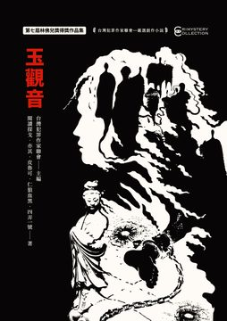
台灣最早且最具指標性的推理文學獎── 第七屆林佛兒獎，啟動！ ★強調推理性、在地性、社會性、可讀性。 ★收錄第七屆五篇入圍決選作品： 〈玉觀音〉／閱讀探戈 十五年來，沒有人可以告訴我，失蹤的女兒在哪裡…… 〈相遇總在告別時〉／亦其 我們總在喪禮上相遇。只是，有一些情感，在分別之後，才變得清楚…… 〈Vtuber殺人事件〉／皮魯可 在Vtuber的世界中，外在的「皮」和內在的「魂」，究竟哪一個更重要？…… 〈囚壽殺機〉／仁狼血黑 居然也有先進的AI智能警探無法透過學習而理解的事？一個以壽命為階級的未來社會，一具屍體劃破了風雨前的寧靜。 〈一念瞬間〉／四弄一號 一個念頭化作現實的瞬間，將是懊悔還是慶幸？ 【關於林佛兒推理小說獎】 「林佛兒推理小說獎」是由被推崇為「台灣推理小說第一人」的林佛兒先生創辦，徵求短篇創作，於1987年起一共舉辦四屆，是台灣最早且最具指標性的推理文學獎，培育了第一批本土原生的創作者，如第一屆首獎得主思婷，即是著名編劇陳文貴，日後有電視劇《包青天》等蔚為風尚、廣為人知的劇作；第二屆首獎得主余心樂，創作、評論雙軌並行，長年旅居瑞士，是台灣了解歐陸犯罪小說的橋梁；第三屆首獎得主葉桑，縱橫文壇三十餘年，為台灣犯罪小說創作產量最豐的拓荒者。 2021年，「台灣犯罪作家聯會」在林佛兒先生遺孀李若鶯教授的授權下復辦此獎，並更名為「林佛兒獎」，以表彰林佛兒先生的卓越貢獻，期盼能繼承林佛兒先生戮力培育本土創作人才的精神，2022~2024年連續辦理第五、六、七屆。此外，復辦後的「林佛兒獎」更重視作者與讀者之間的「創／讀共感」，打破了以往「投稿作品一經入圍，即可競逐首獎並直接發表」的短篇小說獎參賽慣例，首創採用「投稿作品入圍後須依據評審意見修改，才有資格競逐首獎」的做法，以順應今後日新月異的創作／閱讀潮流。
“食安危機” ——收錄林佛兒推理小說獎得獎作家——高雲章最新六個犯罪短篇，端出一道道致命又無法抗拒的美食料理 ◎七日盛宴 故事由女主角在婚前七日，準備由男友帶進家中，接下來七天招待賓客的特殊食材揭開序幕。 接下來七天，女主角用『烤腦花』、『滷豬心』、『扣肘子』、『肝膋』、『諸運當頭(豬頭拼盤)』、『爆皮滷白菜』跟『湯豆腐』。招待七組跟她和男友相關的親友。 雖然男主角直到終幕都沒有現身，最後女主角只能在『他一直跟我們在一起』的保證下，獨自完成了婚禮。 但是從女主角公寓附近開始追逐行人的流浪狗，幼年在船難中生還的男友部屬『高』留在碗中的肘子，還有他最後帶到女主角公寓協助清理的大玻璃瓶，似乎能嗅到一絲的不尋常。 ◎關東煮的味道 名義上是傳播公司老闆，實際上騙財騙色的安恭直被發現陳屍自宅，遺體被支解成數段，每一段都經過像焚燒、戳刺之類的傷損。 負責偵辦的新進刑警葉采薇因為調任後接到大量投訴，被上司華安童改派調查和安恭直曾經交往過的四名女性關係人，還要她學習一門手藝陶冶性情。 在不准選擇武術跟體育課程，沒有語言天份，做手工藝又坐不住下，葉采薇最後選擇了烹飪課程。 調查過程中葉采薇發現四名關係人都精通一門手工藝，而且都有財務問題，最後透過烹飪課老師備課時煮的的關東煮，取得了破案的靈感。 ◎家宴的五道菜 身兼食品企業跟私廚主廚的繆宇貞，在要求家族晚輩用家常菜為課題，爭奪繼承人資格時身體不適送醫。 葉采薇調查後，發現當天在場按照課題烹煮菜餚的五名繆家成員都涉有重嫌， 然而如何在大家共同享用的菜餚中，只針對繆宇貞一人下毒？動機又是什麼？ 最後葉采薇在向烹飪課老師告假時，從課堂上的器皿發現凶手身份，也從凶手口中得知意外之外的犯案動機。 ◎聖誕節的國王餅 企業董事長陶重山在自宅書房身亡，手中抓著一只綿羊造型的國王餅瓷偶。 陶重山死亡前，送餐至書房的兩個女兒、女婿跟孫子都有可能是犯人，問題是陶重山手中的國王餅瓷偶，和四名嫌犯的待徵相符，案件陷入膠著。 在烹飪課思考案件，被講師點名的葉采薇，在講師暗示下得知陶重山手中瓷偶的含義，還有其不為人知的過去。 ◎記憶的親子丼 財團主席計三英和妻子孫秋芙在空難喪生前，於山區部落產下，由部落長老撫養兩年的『奇蹟金童』計四平在接任財團前夕，被踢爆不是計三英的親生兒子。 計四平拜託好友華安童幫忙調查，葉采薇跟前輩向震宇尋訪部落，得知孫秋芙在部落產子，是計三英資助的山區醫院院長董鳴安編造，要部落長老配合的謊言。 醫院的內科主任畢福青坦承自己在山區巡診時，長老向他坦誠孫秋芙產子是謊言。護理長聶睿真指證當時看見懷孕的董鳴安之妻孫秋雪，意指董鳴安才是計四平的生父。 不過計四平委託的律師郝瑟培踢爆長老罹患阿茨海默症，根本不可能向畢福青坦承當年的說法是謊言，親子鑑定也證實計四平的確是計三英的親生兒子。 眾人在姜老師幫忙的日式料亭慶祝時，畢福青和聶睿真登門問罪，因此揭露雙方的謊言和真相。 ◎樓下的雞 由一隻雞引發同居公寓四家人的猜忌和爭鬥。 公寓二樓，做土木散工的任家將罹患精神疾病，背負巨額負債被通緝的妻舅，跟隨身的寵物雞悄悄帶進禁養寵物的公寓，意外引發隔壁在市場賣菜，剛發現自己中了彩券頭獎言家的警戒。 住在任家樓上的柯家獨生子氣喘發作，身為職業軍人的柯先生懷疑樓下私自飼養寵物，求助房東未果後，從服務單位取得農藥，摻在米飯中從陽台撒下。 言家樓上經常餵養浪貓的幼稚園老師魏小姐，發現餵養的流浪貓中毒身亡，認為是市場賣菜的言家所為，在下班後翻尋言家賣菜的貨車，言家認為魏小姐尋找的是他們的頭獎彩券，購入刀械自保。 言家攜入刀械時被任家太太目睹，以為小舅藏在家中的事敗露，將小舅藏在魏小姐家樓上空屋，但被在外巡查的警察發現，警察上門抓人，魏小姐開門詢問警方原由時被任家目睹，因此被誤認是報案者。 柯先生將農藥放回服務單位時，巧遇上市場賣菜的言家，後來言太太發現隨身的頭獎彩券不翼而飛，一口咬定是柯先生拾獲。 由一隻雞開始，牽扯出下毒、侵佔、告密、追債、家人病重等一連串編織緊密的網絡。 陷在其中的四家人在公寓大門關上後，要如何解開這張困住他們的網？
——於鮮血與屍體間盛開的百合，輕快幽默的日常底下，藏著一張早已張開的網。 ◤內容簡介◢ 客座教授洛依是一名法醫。她能聞到一般人聞不到的氣味，能從一灘血跡讀出兇手怎麼下手；她戴降噪耳塞、隨身兩公升水瓶、長袖底下藏著起疹的手臂。全是偽裝。洛依是斯特里人——被智人趕盡殺絕、又被後世傳說改寫成「吸血鬼」的古老物種，如今藏身在最講求證據的鑑識現場，替死者說話，也替自己藏身。 當一連串割喉、倒吊、放血的命案橫越多國、一路逼近，現場乾淨得不可思議，每具屍體上都被刻下同一個只有少數人認得的古老印記。洛依把血點標上地圖，箭頭一路指向她腳下這座島。她查得越深，心裡越沉：這些人翻山越海在找的東西，恐怕離她自己太近。 在這樣的日子裡，唯一沒被她推開的，是助理賈詩穎。戴粉色假髮、講話又快又跳、暗戀她很久的女孩，總端著一盤洛依最愛的麻辣鴨血，安靜看她吃完，一點一點靠近那條洛依不敢讓任何人跨過的界線。 當解剖刀遇上跨國謎團，當守住祕密漸漸等於守住性命，這個把自己藏了一輩子的法醫，得決定要繼續一個人站在光裡，還是讓某個人，走進來。 ◤本書特色◢ •法醫 × 吸血族 × 百合：把奇幻設定錨進最不信奇蹟的鑑識視角，一位會辦案的吸血鬼法醫，市場罕見的類型混血。 •拒絕浪漫化的吸血鬼書寫：黑夜古堡與禁忌誘惑退場，改用證據、程序與物證理性，重寫一個被命名為「怪物」的物種。 •一案接一案的明快節奏：每樁看似獨立的命案，都在替一張橫越多國的邪教大網，悄悄添上一條線。 •後設物件貫穿全書：一本《吸血族鑑識指南》從第一章就擺在眼前，它從哪來、為什麼此時落到主角手上，本身就是故事的一部分。 •社會派底色：少數族裔如何被命名與定義、極端思想如何長成邪教、科技與醫療如何在「救人」名義下越界。 •節制動人的女女情感：兩個女孩在解剖檯與屍體之間，替彼此留了一盞燈。 ◤得獎紀錄◢ 作者姬雪曾獲《謎團小說獎》三獎得主・連續兩屆《野草計畫》評審獎 ◤名家推薦◢ •風說：「於鮮血與屍體間盛開的百合情感，節奏輕快，幽默中暗藏陰謀，推薦給喜歡特殊設定系百合的讀者。」 •禾風：「法醫洛依將自己偽裝成冰冷疏離的機器，可細心的賈詩穎主動成為她的降噪耳機，這樣無條件信任彼此、跨越祕密的靈魂牽絆……是絕對不能錯過的刑偵奇幻作品！」 •海盜船上的花：「高冷神秘的法醫，和青春活潑的夥伴，兩人之間的對比反差……當冰冷的解剖刀，遇上跨國謎團，一場更大的陰謀正襲捲而來。」 •Shika 西卡：「作者利用漸進式導入資訊的方式，讓讀者輕易吸收宏大的世界觀，且對法醫辦案描寫細膩扎實，讓人不禁一口氣讀完。」
《繞路回家》：去你的失敗者標籤！這趟旅程，我們自己當主角！ ——你是否也厭倦了親友長輩們令人窒息的關心與話題轟炸？ 當「回家」成為一場殘酷的成就展示大會，當社會對「成功」只剩下單一的世俗標準，我們是否都有過想逃離一切、找個地方躲起來的衝動？ 請給自己一個大逃亡的機會！林佛兒獎首獎作家閱讀探戈，為所有在社會夾縫中生存、被貼上「失敗者」標籤的人們，獻上一部直擊靈魂、笑淚交織的公路療癒力作——《繞路回家》。 （直男外送員）＋（失婚少婦）×（狂暴跨性別大姐）＝ 一場荒腔走板的除夕大逃亡！沒有霸氣總裁，沒有完美主角，只有三個滿身傷痕的社會邊緣人，在一輛破舊的紅色轎車裡，展開一段橫跨台灣山海的「避難旅行團」。 當逃避現實，成為重生的起點 ——「逢年過節、遠離妖魔、耳根清淨，以防理智斷裂的最佳選擇！」 距離農曆除夕只剩不到幾天，「旅遊探戈」旅行社推出了一個乏人問津的超廉價客製化「避難旅行團」。三個背景截然不同、內心傷痕累累的靈魂，因為對「過年回家」的極度恐懼，陰錯陽差地湊在了一起，共乘一輛紅色轎車，展開了一場從新北出發，一路向南、再向東延展的流浪之旅。 這趟旅程的本質與其說是觀光，不如說是一場逃亡。他們試圖逃離社會對於成功的單一定義，逃離那個在習慣環境中逐漸萎縮的自我。然而，將三個陌生人關在狹窄的車廂內，宛如一場微型的社會實驗。充滿歧視言語的摩擦、歇斯底里的崩潰、毫無預警的暴怒，讓這趟旅途充滿火藥味與微小災難。 但在流動的風景與沿途的偶遇中，他們被迫直視彼此面具下的真實脆弱。高美濕地的夕陽、日月潭的寧靜、多良車站的海風，逐漸撫平了他們心中的躁動。這是一部關於失敗者的讚歌，告訴我們：有時候我們必須先離開家園，經歷一段漫長的繞路，才能真正看清家的模樣，並找回面對人生的勇氣。 如果你也正處於人生的低谷，如果你也對日復一日的比較感到疲憊，如果你也曾想過逃離一切……請翻開這本《繞路回家》。讓這三位不完美的旅伴，帶你踏上一場痛快淋漓的大逃亡。你會在他們的眼淚中釋放自己的委屈，在他們的笑聲中找回遺失的勇氣。 人生這場探戈，就算腳步凌亂、就算短暫退後，只要還在移動，就一定能找到繼續舞動的節奏！ 現在就下單，給自己的心靈放一個最痛快的假吧！
故事圍繞著兩位華光大學中文系新生展開：沉穩內向、鍾愛《詩經》的東方宏旨，與看似蘿莉、實則心機深沉的張芷芊。他們被傳統校園推理小說的設定所吸引，期待展開一段平靜的學術生活，卻意外捲入一場以甜點和古典文學為掩護的學術界風暴。 張芷芊很快察覺系學會被一個名為「荊杭幫」的勢力所把持，這個團體不僅控制著系上經費與活動，甚至能左右學術升等與研究生論文審核。宏旨最初只想當個「角落小烏龜」，但為了配合芷芊追查一個教授的身份謎團，他被迫成為「蝦虎魚」的眼睛與手腳，展開一場驚險的情報收集之旅。 線索指向一個被塵封多年的系刊與一本「被消失」的學報。每一次線索的揭露，都伴隨著一場美食饗宴或一場酒桌上的心理戰。芷芊利用她對甜點與酒的深入瞭解，將其轉化為對人性的洞察與談判的籌碼。她堅信，學術追求應如純米大吟釀般追求極致的「米心」，純淨無雜質。但要實現這個理想，她必須運用權術，與「女帝」為首的荊杭幫進行高難度的合作與對抗。 讀者將跟隨宏旨的視角，逐步揭開這座象牙塔內論文造假、利益輸送、學生詐欺等一連串令人咋舌的黑幕。宏旨與芷芊的關係，也從單純的互惠共生，演變出超越友誼的複雜情感。當他們成功扭轉系學會的頹勢、並將其推上榮耀頂峰時，才發現這場鬥爭留下的「酸澀」，遠比勝利的「甜美」更加持久。結局的懸念，讓讀者不得不重新審視一切看似偶然的巧合，並思考究竟是誰，真正主宰了這場青春的推理遊戲。 ※ 本書精準描寫臺灣校園政治的權力結構，特別是中文系在資源分配下的派系鬥爭。以甜點比喻文學鑑賞的深度與學術道德，將飲食哲學融入空間敘事，探討知識分子在體制內的妥協與抗爭，是當代臺灣在地推理文學的里程碑。 ※ 推理作家／白帽子專文導讀 高雲章、慣看春秋、班傑明，好吃推薦
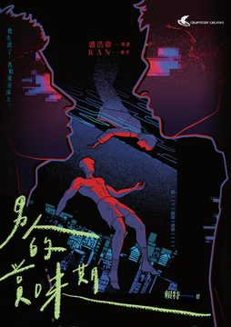
【霸榜熱銷・緊急二刷】文學榜長銷話題作！《男人的賞味期》驚喜改版：限定書封・隨機出貨（這一刻，命定屬於你） ★上市即席捲文學暢銷榜，讀者口碑瘋狂延燒！ ★改版特別企劃：深邃藍限定書封隨機出貨，每一次拆封都是一場未知的邂逅。 「集子裡的各篇在『將一切性化』與『全然去性化』之間找到了絕佳的平衡，並以此呈現出當代男同志最典型的生活與情感樣貌。」——盛浩偉（作家）．專文推薦 【關於這本書：都市霓虹下的情感懸疑地圖】 在高樓與霓虹交織的台北夜色中，你是否也曾感到窒息？這不只是一本小說，更是一面鏡子。映照出那些藏在交友軟體滑動聲、捷運末班車、空蕩租屋處裡的——祕密與孤獨。 全書收錄五篇都市懸疑短篇，作者將「同志視角」注入懸疑故事。在推理破案的緊湊節奏裡，你看見的將不再只是案件，而是現代人最赤裸的愛與恐懼。 【直擊靈魂深處的5個懸疑切片】 〈第22個吻〉｜當愛情能夠被明碼標價在那段關係裡，每一次親密都是一場算計。看似掌握主導權的金主與被包養者，究竟誰才是獵物？當最後一個吻落下，這場情感博弈的贏家是誰？ 〈有效期〉｜是暈船還是真愛？午夜的擁抱是真實的，但清晨的對話框卻是空白的。從曖昧到蒸發，只需要一個晚上。這究竟是現代愛情的常態，還是一場精心策劃的幻覺？ 〈戒斷〉｜愛比毒品更致命痛失所愛產生的戒斷反應：顫抖、失眠、冷汗。但他逐漸發現，這些生理痛苦背後，似乎隱藏著一場被刻意隱瞞的罪行。在愛恨交織的迷霧中，真相帶著血腥味步步逼近。 〈失蹤者〉｜被國家機器抹除的戀人你的愛人突然人間蒸發，連官方紀錄都查無此人。當個人的情慾撞上冰冷的體制監控，愛與渴望竟成為一種危險罪名。你敢為了尋找他，對抗無所不在的眼睛嗎？ 〈男人走失了〉｜完美的家庭，流浪的靈魂為了扮演父母眼中的「好兒子」，他殺死了心裡的那個自己。人坐在客廳裡，靈魂卻早已在孤寂的角落流浪。這是一場漫長的自我迷航，當偽裝的平靜破碎，誰能把他找回來？ 【編輯誠懇推薦：為什麼你該現在入手？】 這是一部既驚險刺激、又深情感性的作品。無論你是推理迷，還是曾在都市叢林中感到孤單的靈魂，都能在書中找到屬於你的那個角落。 讓命運為你挑選專屬封面。翻開書頁，在懸疑與慾望的交錯中，看見最真實的自己。
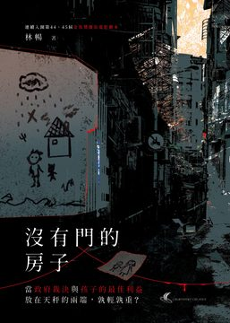
連續入圍第44、45屆金馬獎優良電影劇本的林暢的首本小說創作， 揭開最沉痛的記憶與傷口。 ——那些我們覺得荒謬的事情，在我們看不見的社會角落，每天都在發生 家庭、機構、媒體、制度，哪一道門曾為他開啟？ 從一宗兒童失蹤案件，揭示社會福利系統的脆弱， 透過懸疑小說的敘事框架，重構兒少安置與社會記憶的裂縫。 ——不只是小說，更是社會的備忘錄。 一名兒童安置機構的男孩小安，在某個陰雨夜神秘失蹤。機構的牆上，只留下他畫的房子，卻沒有畫上門——那道缺席的出入口，成為整起事件最深的謎。多年後，記者顧子衿在追蹤一則舊案時，重新走入這棟「沒有門的房子」，開啟一場關於制度、記憶與責任的調查。他挖掘的不只是個案，更是被掩蓋的照護體系、沉默的倖存者，以及那群長大後依然找不到出口的孩子們。 小說融合懸疑與社會寫實元素，從安置機構、社會局到新聞媒體，逐步拆解制度如何在「正常運作」中讓一個孩子失蹤。作者以冷靜而抒情的筆觸，勾勒創傷與失語、正義與記憶之間的拉扯，並在一張塗鴉與一道影子的牽手中，開啟一種遲來卻必要的撫平之路。 ☆名家推薦☆ 國立台東大學兼任助理教授｜邱鉦倫 媒體工作者｜Leo 小說家｜李奕萱、逢時、A.Z.、高雲章 ——在痛裡讚聲
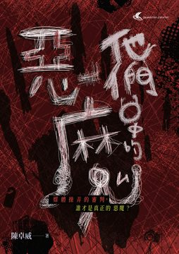
全臺通緝 陳卓威！ 深夜一段影片在社群媒體間如同病毒般被瘋傳，直到清晨已有27位看過影片的人到警局報案。她們的說法一致，都是被催眠，消失的記憶在看完那段影片之後才被喚醒，一段在夜店被撿屍性侵的記憶。 主持人程紹呈開立深夜訪談節目邀請受害者上節目述說被撿屍的經過，播出後，其他受害者陸續上新聞台、podcast，甚至到直播平台講述遭遇。每位受害者各持一個版本，真實性與否已不再受到重視，媒體圈徹底失控。 【本書特色】 大家有看過偽紀錄片，但有看過偽紀錄片式的小說嗎?《他們口中的惡魔》將開啟您一個全新的視覺體驗。從攝影機、直播、Podcast、密錄器、監視器、電視、空拍機……等等視角，以一個在小說界前所未見的方式呈現，去觀看一個夜店撿屍性侵的社會事件。 閱讀探戈、M.S.Zenky 雙導讀！ Troy、A.Z. 好評推薦 ——隱藏在幻象背後的愛與背叛，將無所遁逃
在一個樸實無華的家庭早餐中，羅傑・薛靈漢以熏魚飯作為人生的隱喻，與新婚的格里森夫婦展開了一場妙語連珠的對話。看似平凡的對話中，卻隱藏著暗湧，一宗正在審理中的砒霜謀殺案成為焦點。眾人津津樂道地討論著案件中班特萊太太的罪行與看似明顯的證據，卻未曾察覺其中的懸疑。 在午後的釣魚時光中，羅傑不禁對班特萊案感到無法釋懷。他開始仔細重構案情，從班特萊夫婦的婚姻問題到捕蠅紙事件，一切似乎都指向了班特萊太太，但羅傑卻察覺到浮濫的證據反而令人懷疑。就在大多人已經判定班特萊太太罪名成立之際，羅傑忽然懷疑這一切是個精心設計的陷阱，旨在嫁禍班特萊太太。 隨著羅傑與朋友亞歷克繼續深入案情，他們決定解開這場錯綜複雜的謎團，誓言要找出真相。然而，真正的凶手是誰？他們能在時間有限的情況下找到關鍵線索並營救班特萊太太嗎？答案仍未揭曉，故事在懸疑中戛然而止。
陽光和煦的午後，卡斯泰家的三姊弟坐在前廊，享受著難得的悠閒時光。然而，這樣的寧靜卻被不遠處的槍聲瞬間擊碎。無畏、聰明的艾柏莉立刻聯想到媽媽的推理小說，想利用這個機會進行一場真正的偵探行動。 循著槍聲，三姊弟來到鄰居桑福德家。同時，一位年輕的電影女星偶然到訪，她發現了桑福德太太的屍體，讓三姊弟確信這是一樁命案。緊接著出現的警察、隨之而來的調查，更讓這個下午疑雲密佈。而所有的嫌疑，都指向失蹤的桑福德先生……
早晨的書房裡，史坦沃思先生被發現開槍自盡，留下的紙條上只有簡短遺言。這場突如其來的變故破壞了萊頓庭的平靜，使得受邀的每位賓客都必須面對這個難以承受的事實。此時，小說家羅傑・薛靈漢認為這並非單純的自殺案，驅使他開始探究這場死亡事件的真相。 他發現，史坦沃思先生書房裡的保險箱，似乎隱藏了某項秘密，萊頓庭中似乎有數名賓客都曾經想要接近它……這位主人究竟在保險箱裡放了什麼？
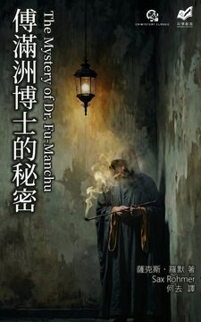
一個寧靜的晚上，佩崔醫生迎來了一位意想不到的訪客——他的老友奈蘭・史密斯，從緬甸趕回，帶回一個不可思議的故事。史密斯展示他的手臂，上面有一個駭人的燒傷，這是一次遭受蓄意刺殺的結果。對方是一位擁有致命武器的惡魔，現在現身倫敦，而這位敵人用複雜巧妙的方法，意圖將史密斯置於死地。 面對潛伏在暗中的神秘威脅，兩位好友展開調查。佩崔很快被捲入更深的漩渦，當他們趕到克萊頓・戴維爵士的宅邸時，發現爵士已命喪黃泉。不久之後，一名神秘女子出現並遞交給佩崔一封信，警告他的性命岌岌可危。 隨著夜幕降臨，史密斯和佩崔被推向一個致命的困境。他們能否在這場充滿陰謀的跨文化對抗中生還？而神秘敵人傅滿洲博士到底還藏有什麼更驚人的祕密武器？這些謎團如迷霧般升起，等待解答……
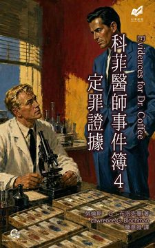
〈再會，陌生人〉 一名陌生男人昏迷不醒地出現在艾琳・奧斯本的家中，之後在醫院中不治身亡。這位看似無辜的女子堅稱不認識那名男子，但她的話是否能被相信？警方和科菲醫生都對這位舉止端莊的寡婦心存疑慮…… 〈溺水身亡？〉 伯特・溫克勒是一位桀驁不馴的勞工領袖，對北岸地方工會擁有絕對控制權，但在一個炎熱的六月深夜，他的屍體在河中被發現，全身濕透，昔日的魄力隨著那肅穆的水流消失無蹤。驗屍官簡單宣判伯特為溺水身亡，但瑞特巡官心中的懷疑卻無法平息。 〈科菲醫師與花花公子的大腦〉 知識淵博的核物理學家萊頓-伍茲博士在半夜被哨兵射殺，一切看似意外，但瑞特巡官迅速介入調查後懷疑，博士究竟為何會獨自一人進入軍區禁地遭到槍擊？此外，到醫院探望博士、卻又突然失蹤的西班牙裔神祕女子，又與此案有何關聯？
退休偵探約翰・林格羅斯應地主雅各・布倫特之邀，入住多塞特高地偏遠的老莊園旅館，打算在此靜心完成回憶錄。旅館裡另一位長住客貝萊斯太太年逾八旬、下肢癱瘓，卻頭腦清晰、性格開朗，兩人席間一見如故。 就在第一夜，深夜三點，一個孩童的哭喊聲把林格羅斯從熟睡中驚醒。那聲音充滿極度的恐懼與痛苦，等他開燈衝出，房間與走廊卻空無一人，門窗戶也全數緊閉。儘管林格羅斯細查四周，卻始終找不到合理的解釋。 林格羅斯決定悄悄探查老莊園旅館的秘密。某次與貝萊斯夫人的交談中，她透露一年前有一名因病在此療養的男孩突然病發而亡。極很可能，林格羅斯聽見的，正是那名男孩鬼魂的求救……
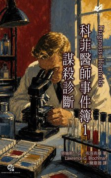
〈但病人死了〉 科菲醫生正埋首例行工作時，外科醫生安德魯斯踏入實驗室，帶來噩耗──年輕的哈莉特・巴倫才動完闌尾切除手術，卻在術後大量出血而死，但術前檢驗卻一切正常。此外，家屬拒絕解剖，科菲醫生以「無法簽署死亡證明書」為由執意驗屍，出現了令人震驚的結果…… 〈晚餐的蘭姆酒〉 巴斯德醫院急診室送來一具穿晚禮服的男屍，據調查，他是背了多國前科的珠寶竊賊克里夫・奧托，才剛出席名流史塔基太太舉辦的主題晚宴。病理學家科菲醫生與巡官瑞特展開調查，發現菜單上全是從來沒看過的西印度群島料理。 〈幽靈泣嬰〉 富孀露易絲・蓋博獨居在父親留下的古宅，每逢夜雨，屋中便傳來嬰兒哭聲。她的律師斷定她精神失常——正是從亡夫戰死、孩子夭折後，她的心智便開始動搖。印度住院醫生穆克吉卻持相反意見，設法拉來病理學家科菲醫生，請他親自確認嬰兒哭聲是露易絲的幻覺。 沒想到，當科菲醫生與助手穆克吉踏進那棟古宅後，卻發現哭聲確實存在……
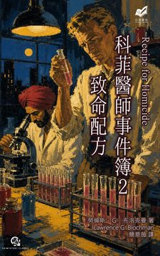
北岸巴爾扎克湯品公司爭取到支援美軍韓戰軍用口糧的生產訂單後，計畫盛大舉辦一場耗資甚鉅的宣傳活動。然而，在一場由公司內部人事所組成的罐頭品鑑會後，家政總監卻在品鑑會後不久陷入嚴重休克，最終死於醫院。 為了不搞丟美軍的訂單，公關總監吉爾摩必須設法對外保密這件意料之外的致死案，同時緊急委託病理學家科菲醫師進行調查。但是，經過科菲醫師的化驗分析後，卻發現湯品公司送來的罐頭樣品全都不含毒素。 那麼，家政總監究竟是怎樣死亡的？
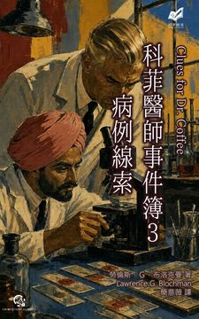
〈舊日情焰〉 醫療器材公司經理弗雷德・貝斯特深夜回家，向妻子貝蒂坦承今晚陪舊情人安妮吃飯，事後送她回河濱汽車旅館，兩人都打了瞌睡。弗雷德醒來時，發現安妮失去意識，疑似已經死亡，他匿名報警後便悄悄離開。貝蒂決定原諒弗雷德，但卻發現他的領帶夾不見了。弗雷德是否該重回汽車旅館？ 〈無心品茶〉 品茶師昆廷・萊爾德突然失去味覺，再也無法工作，極度鬱悶，甚至揚言自殺。妹妹愛倫求助於曾治癒他的病理學家科菲醫生，請他以「朋友」身分出席昆廷的生日派對，幫她勸阻一意尋死的哥哥。然而，昆廷啜飲妹妹泡的一杯伯爵茶，臉上突然閃過奇特的笑容——他聲稱，味覺恢復了，便立即說要去工廠處理積壓的工作，獨自踏入雨夜…… 〈洗牌〉 深夜的公寓血跡斑斑、家具狼藉，卻找不到屍體。案發現場留有在逃殺人犯的指紋，計程車司機傑瑞・伍茲的車庫也藏著一把型號相符的手槍，他因此被捕入獄。伍茲的妻子帶著兩個孩子找上病理學家科菲醫生，苦求他還丈夫清白。
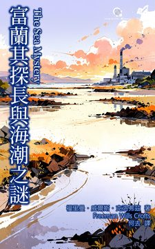
在威爾斯的伯里灣，摩根先生和他的兒子埃文正享受平靜的秋日釣魚午後，但這片寧靜即將被打破。在釣魚收穫不佳之際，埃文的魚線突然猛然拉緊，懷疑自己釣到大傢伙。然而，當父子倆嘗試拉起魚鉤時，他們卻意外地看到一個大木箱浮現水面。 不顧木箱傳出的惡臭，摩根先生好奇地撬開了箱子，隨即被裡頭恐怖的景象驚嚇到——是一具腐爛的屍體。為了不讓兒子受驚，他隱瞞了真相，並立刻報警。當地警方和富蘭其探長隨後介入調查，以期解開屍體與木箱的謎團。 富蘭其探長仔細分析潮汐和水流，推斷謀殺發生於六週前某個滿潮之夜。然而，此案件似乎牽涉一個更大、更複雜的陰謀，真相究竟為何，尚待更深入調查……
林佛兒獎首獎作家／白帽子：兩個「不良於行」的天才，正面對決！ 《雙重犯罪》系列作推理作家／貝爾夫人：行動派與享樂主義者的邏輯對戰 一場命運的棋局即將開演。忙碌的星期五下午，尼洛・伍爾夫和他的助手忙於整理日常瑣事，但內心潛藏的不安竟因一場無人的救贖引發風暴。保羅・查賓這個神秘人物，以其狡詐的手段，彷彿化身復仇的天使，肆意攪亂那群舊時摯友的命運。習以為常的生活在一封警告信揭露的真相中岌岌可危，仇恨的陰影像徘徊不散的幽靈，慢慢逼近那名為「贖罪者聯盟」的人們。 案件的輪廓逐漸清晰，但恐懼的漩渦亦愈加深邃。安德魯・希巴德的神秘失蹤為伍爾夫招致了一位決絕的訪客——希巴德的姪女伊芙琳，她來勢洶洶，訴說著隱藏已久的罪與罰。從一九零九年的莫名仇恨，到此次危機的全面爆發，整個褐石屋似乎成了命運的鬥獸場，且每個人都在暗中操控著未來的走向。 然而，隨著真相逐步逼近，伍爾夫不得不面對一項艱鉅任務：找出這場惡意遊戲背後的操控者，並解開希巴德失蹤之謎。時間的沙漏正悄然流逝，下一步棋將會如何影響整個局勢？命運的齒輪再次卡住，一場充滿懸念的推理之旅，即將在讀者的見證下揭開序幕……
畢克利醫生決定殺掉妻子，這個邪惡的計畫如幽靈般縈繞在他的心頭，隨著一次又一次乏味的午餐而愈發清晰。他的婚姻早已被妻子的冷酷無情所折磨，生活彷彿成了無法擺脫的囚籠。因此，他在昏暗的工具棚內，愈來愈渴望那真正的自由。 醫生的生活表面上仍井然有序，但心理陰影卻不斷擴大。他與年輕美麗的瑪德琳・克蘭米爾小姐的交往，讓他稍稍找到了慰藉。然而只要一回到家，他又被那張諷刺的嘴與挑釁的語氣所淹沒——如同恨意積壓日久的火山，隨時可能爆發。 他的心中所嚮往的未來，是一個沒有束縛與壓力的世界。畢克利醫生想著：只有一個人阻擋在他與夢想之間，那就是他的妻子。但他是否真的會走出那一步，將這趟旅程帶向無法預見的結局？等待他的，又會是什麼命運？
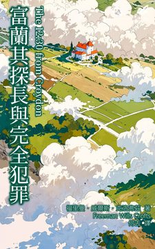
蘿絲・莫利第一次搭飛機的旅程充滿著不安和期待。她和父親、外公以及外公的管家前往巴黎探望在意外中受傷的母親。在飛往巴黎的旅途中，蘿絲被飛機的壯麗景象所吸引，這場冒險令她興奮不已。 然而，隨著飛機降落，喜悅的情緒戛然而止。蘿絲的外公安德魯・克勞瑟卻在飛機落地時不幸去世，震驚而悲痛的侷面瞬間籠罩了這場旅行。這一幕未完的悲劇使一行人的旅程蒙上陰影，而蘿絲和她的父親如何面對接下來的挑戰成為令人關注的焦點。 同時，查爾斯・斯溫本，安德魯的外甥，正深陷於自己的經濟困頓中。一邊試圖拯救面臨破產的工廠，一邊想盡辦法贏得心上人的青睞。他的內心盤旋著一個可怕的想法，如何從舅舅安德魯的死中受益，卻不斷被道德與現實的衝突折磨。這場被欲望和野心驅動的劇碼，是否將引向那個必然的邪惡行動？
在炎熱的午後，故事的主人公被困於盧爾郊外一個難以忍受的地方，那裡的每寸土地和發音困難的地名都讓他不滿。他的姑媽住在布林莫爾這個地方，一個從盧爾輕便鐵路終點站還需要跋涉兩英里才能到達的地方。姑媽總是使用分不清顏色的鋪地物、滿是尖石的道路和過時的交通手段挑戰他的耐力和意志力。 當他某日急需一批法語書籍卻被迫步行前往郵局時，他的姑媽設計了一系列計謀來阻止他駕車。於是，這場關乎自尊的較量就此展開，在這場較量中，姑媽的計謀似乎屢屢得逞，而他卻不得不在無效的溝通和艱難的路途上追尋解決之道。 然而，就在他以為即將失敗之際，他找到裡應外合的方法，隨著計畫的逐步實施。他尋找一切可能的辦法試圖從阻礙中突圍，而這場難堪的冒險將如何收場？這回，他能否如願攻克姑媽的陷阱，順利帶回書籍？轉折就在片刻之後，他該如何擊破命運的圍牆？
《暗道》中，大衛・古迪斯敘述了一個關於冤屈、逃亡與生存的故事。作品聚焦於文森・帕利，一位前證券公司職員，因受牽連而被誣判為謀殺其妻的凶手，面臨無期徒刑。他的生活因一場不公正的判決而支離破碎，誤入狹長的暗道。古迪斯透過帕利所展開的逃亡之旅，深刻剖析個體在極端壓迫下的心理變化，描繪人性在絕境中的掙扎與微光。 帕利在聖昆丁監獄的圍牆逼迫下，最終選擇逃亡，被迫走向未知的險境與徹底的改頭換面。他的幸福期望化為泡影，在謊言與真相中進行著淺浮的交鋒。即便擁有新面孔，過去的陰影仍未遠去，帕利不得不在複雜的人際網中尋求公平與真愛的片刻。
蘇格蘭場探員馬克・布蘭登在達特穆爾度假時，於荒原上邂逅一位令他心動的栗髮女子，又在廢棄採石場偶遇一名留著誇張紅鬍鬚的高大男人。數日後，一則駭人的消息傳遍小鎮——那名紅鬍鬚男子涉嫌殺害了自己的姪女婿麥可・彭迪恩。而那位令布蘭登魂牽夢縈的美麗女子，正是死者的妻子珍妮。 她寫信懇求布蘭登介入調查。平房廚房裡的大片血跡、消失的水泥麻袋、多名目擊者看見嫌犯深夜騎摩托車載著沉重包袱狂奔至海崖——所有證據都指向一個結論：飽受砲彈休克症折磨的羅伯特・雷梅恩在精神崩潰中殺害了彭迪恩，並將屍體拋入大海。 然而，屍體始終未被尋獲，凶手也人間蒸發。就在布蘭登認定案情「簡單明瞭」之際，失蹤的羅伯特竟寄出一封信給兄長班迪戈——而班迪戈不僅拒絕交出此信，更暗示這樁血案背後另有隱情。真相，或許遠比表面所見更加曲折幽暗。
美國富豪維克多・提摩西・史密斯正一面享用美酒，一面在拍賣會上激烈競標，與另一位乘客德・布拉斯托展開火熱的競價對決。突然，會場大廳的燈光故障熄滅，現場陷入一片黑暗。同一時間，一聲槍響傳出。等到燈光重新亮起，史密斯已經遭到槍擊，趴倒在餐桌上身亡。眾人目擊布拉斯托正將手槍丟在地上，但他堅稱沒有犯罪。 船長哈瑞斯・曼斯菲爾德展開調查，卻逐漸發現離奇、矛盾的證據愈來愈多，案情陷入膠著。恰好同船的心理學家海維爾博士、普萊契博士、龐斯博士和米托教授四人，正準備前往倫敦參加心理學研討會，接受船長請託協助調查，於是，他們依據各自專精的心理學理論，展開了一場又一場峰迴路轉的緝凶辯證！
「跨州特快車」——這項意圖挑戰航空旅行的科技奇蹟，即將展開為期三天的橫越大陸首航。車上載滿了精挑細選的名流菁英：掌握金權帝國的銀行家霍奇斯、美麗卻情緒難測的名媛艾凡妮、激進狂熱的技術統治論者霍爾，以及警探麥可・羅德。 羅德本以為這只是一趟防止騙子與瘋子騷擾權貴的例行任務。然而，當列車駛離輝煌的紐約，潛藏在奢華表象下的暗流逐漸湧動。泳池車廂的魅影、關於文明與金錢的激烈辯論、深夜走廊上那一聲不尋常的門閂輕響，都預示著這趟旅程絕不平靜。 黎明時分的游池車廂，赫然躺著一具冰冷的屍體。 然而，為了維護首航的完美聲譽，為了不讓這列象徵文明巔峰的火車誤點，列車長做出了危險的判斷——他拒絕停車報警，甚至試圖用人工呼吸器粉飾這場「意外」。 列車呼嘯著穿過水牛城的晨霧，將法律與秩序遠遠拋在腦後。在封閉的車廂內，兇手與不知情的乘客們被鎖在了一起。隨著車輪轟鳴，一場精心策劃的謀殺案正在加速上演。當奢華的帷幕被鮮血撕裂，誰能從這列停不下來的特快車上全身而退？
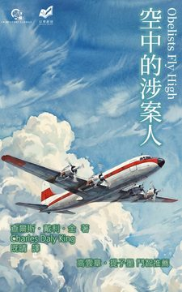
飛機即將墜毀，與持槍凶手對峙的警探麥可・羅德，開始回想起事件的起點。 「您將在四月十三日中部時間正午十二點整死亡。」 全美國最負盛名的外科醫生卡特收到了這則匿名的死亡預告，但他接到電報必須立即動身，替貴為國務卿的哥哥進行緊急的精密手術，因為他是唯一有辦法成功的人。羅德臨危受命，他必須卡特安排一次無人知情、極機密的飛行旅程，讓他在一百小時內盡速抵達國務卿的病房。 這是一個精心設計的「高空密室」。機艙內僅有十個座位，除了卡特及其親屬助理外，其餘四名乘客皆經過背景調查，身家清白。羅德曾向局長保證：「外界不可能接觸到他。」 然而，此刻面對黑洞般的槍口，他才意識到最危險的敵人從來就不在外面。在這封閉的三萬英呎高空，沒有人能逃離，這場與死神的豪賭，終究得在雲端上一較高下！
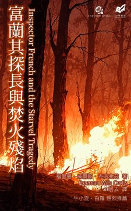
林佛兒獎首獎作家／牛小流：貫串全書的「四重犯罪」，完美串成毫無冷場的故事線，精彩絕倫。 犯罪文學地景調查專家／白羅：創作技法與佈局之成熟，與現代作品相比毫不遜色。 露絲・艾福禮自小失去了父母，由於叔叔西蒙・艾福禮的安排下，她不得以生活在約克郡的史塔維爾這座陰鬱的老房子裡。老宅裡只有幾名不太友善的僕人和園丁作陪，而西蒙則是一位自私守財，甚至對她漠不關心的老者，使她備感孤獨。 一位遠方友人的來信，讓露絲得以暫時離鄉，享受一段自由的旅遊生活。然而，她突然收到一封電報告知史塔維爾發生了一場「可怕的意外」，趕回家後，才得知老宅在一場大火中化為一片廢墟，叔叔西蒙及僕人羅珀夫婦全都喪生火海中。 然而，看似單純的火災意外，卻因為一張二十英鎊鈔票的出現，發生的驚人的反轉。蘇格蘭場刑案調查部的富蘭其探長，必須前往火災現場，在廢墟中尋找真相！
林佛兒獎首獎作家／白帽子：英國古典推理與美國冷硬派雜交育種的蘭花，堂堂盛開！ 《推理》雜誌總編輯／既晴：不動如山的智力帝王、熱血如火的正義騎士 《矛頭蝮蛇》（Fer-de-Lance）是雷克斯・史陶特於1934年創作的小說，這是尼洛・伍爾夫（Nero Wolfe）偵探系列的首部作品，故事背景設於1930年代的美國。故事從伍爾夫的助手──阿奇・古德溫（Archie Goodwin）的視角出發，開篇便展示出私探之眼對日常事物的細膩觀察，並彰顯了伍爾夫這位極具智慧卻又古怪的角色，他因為精於推理解謎、預測案情發展而聞名。 艾勒里・昆恩（Ellery Queen）對《矛頭蝮蛇》給予了高度讚賞，稱讚其情節安排及主角伍爾夫的獨特性格設計。尼洛・伍爾夫系列後來被改編成多部影視作品，顯示出其持久的影響力，成為了二十世紀的推理經典。
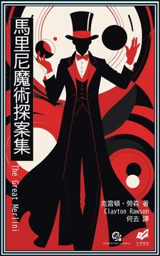
紐約市喧囂的馬戲團後台，受害者竟被一條頭巾勒斃，而所有證人都發誓，唯一的嫌疑犯──一個扮成印度人的魔術師──在窗戶反鎖、門口有人賭博監視之下，憑空消失了。 一間富豪的密室書房，訪客破門而入，發現富豪死於一柄拆信刀。但門窗竟被死者親手用膠帶從內側完全密封。拆信刀消失了，而唯一的目擊證人──房內另一位只穿泳衣的靈媒，堅持凶手是來自「另一個世界」、實體化的惡靈。 這些挑戰物理常識、違反邏輯的謀殺案，只有一人能洞穿真相──偉大的馬里尼。這位經營魔術道具店的魔術師，進入犯罪現場後告訴警方：「世上沒有魔法，只有魔術」。 《馬里尼魔術探案集》收錄了這位魔術師的短篇傑作十二篇。這些故事曾發表於《艾勒里・昆恩推理雜誌》（Ellery Queen Mystery Magazine），包括被譽為「不可能犯罪」類型短篇經典的〈來自另一個世界〉、嫌犯在眾目睽睽之下從電話亭消失的〈從地球表面消失〉。勞森的寫作風格嚴格遵守「公平遊戲原則」，所有破案線索皆誠實呈現於讀者眼前，邀請讀者一起進入這場邏輯與魔術的黃金交點。
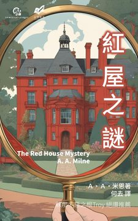
《約翰下雨》／香港名作家蘇那：嶄新的推理氛圍、戲仿的高超技巧 《盲點：黑暗裡的六個證詞》作者之一／惡之根podcast主持人Troy：封閉空間、迷人的閱讀體驗 《推理》雜誌總編輯／犯罪作家既晴：故事結構、邏輯推演的極致演出 《紅屋之謎》（The Red House Mystery，1922）是由著名兒童文學作家Ａ・Ａ・米恩創作的一部推理小說。米恩試圖以出色的敘事技巧與創造力進一步探索推理小說的可能性。故事始於夏日午後紅屋平靜的氛圍被打破，隨著馬克・艾柏列特的「澳洲來的哥哥」的現身，一場匪夷所思的密室謀殺案件展開，進而挑戰著故事中的人物與讀者。本書的創作背景是在戰爭後英國社會，當時人們對於神秘與推理故事有著濃厚的興趣，而米恩則藉著這股潮流，創作出一個既滿足又挑戰讀者智慧的懸疑故事。作品的主題圍繞著人性中的秘密、家庭關係的錯綜複雜，以及社會階層之下隱藏的真相。 這部作品在推出後獲得很高的評價，特別是以其精簡而不失深度的劇情設計以及巧妙精緻的語言風格而受到讚譽。雖然米恩以兒童文學聞名，這部作品的成功令許多人遺憾他未將更多創作才華投入於成人小說。這本書也曾多次被改編為舞台劇及廣播劇，其中舞台版的改編最受歡迎。
十二月初，莫特豐小鎮迎來聖尼古拉節，一場傳統的慶祝活動正如火如荼地進行著。然而，在這節慶背後隱藏著一個即將揭開的陰謀：神父傑羅姆・富克斯被發現暈倒在教堂裡，一名戴著神秘面具的竊賊差點盜走珍貴的聖骨匣。 富克斯神父決定親自前往南錫，向主教報告此事。南錫主教吉貝爾在收到報告後，決定不動用警方，反而採取更為私密的手段進行調查。他求助巴黎主教，然而，登場調查的偵探卻是一位意想不到的葡萄牙貴族──聖誕侯爵！ 聖誕侯爵立刻動身前往莫特豐小鎮，他必須在聖誕節來臨前查出真相……
亞瑟・柯南・道爾〈巴西貓〉 貴族出身的馬歇爾面臨破產危機，他的堂兄艾弗拉德在巴西致富後回國，突然邀請他到莊園作客。馬歇爾希望能趁機借錢，當他來到莊園時，發現堂兄熱衷飼養異國動物，其中最珍稀的，是一隻體型如虎的巨大黑貓。 弗雷德里克・布朗〈來自暹羅的貓〉 深夜時分，布萊恩・卡特是大學心理學系講師，與警探傑克・塞巴斯蒂安正在家中下棋，布萊恩養的暹羅貓陪著他們。突然，有人從窗外開槍射擊屋內。布萊恩懷疑開槍者是實驗室助理科爾，他們必須設法盡快逮捕科爾。 威爾基・柯林斯〈黑色小屋〉 英格蘭西部荒野間有一座黑屋，少女貝希與父親同住。某日父親外出，留下她與小貓波莉，奈夫頓夫婦行經黑屋，寄放了貴重的錢包，說回程再來拿。夫婦離去後，兩個混混來找父親，貝希無意間透露父親不在家。這時，她感覺到混混們似乎不懷好意…… 克蕾格・萊斯〈別靠近〉 小個子律師約翰・馬龍不得不暫時離開芝加哥的酒吧，來到鳥不生蛋的地方接受馬戲團老闆的委託，調查獅子連續謀殺案。馬龍在這裡見到了許多擁有奇異技能的團員，包括魔術師、競技摩托車女騎士、馴獅師、野人和氣象員……到底誰是殺了好幾頭獅子的真凶？ 約瑟・傑佛遜・法瓊〈開槍射貓的男人〉 警局局長與探長艾林頓討論阿布里特涉嫌槍殺貝恩斯的案件。艾林頓認為證據充分，有目擊證人指出，阿布里特曾持槍待在窗邊，半小時後貝恩斯遭到槍殺。案發後，阿布里特逃逸被捕，否認開槍殺人，只說自己開槍射擊的是叫聲煩人的野貓。 Ｐ・Ｇ・伍德豪斯〈非凡旅館命案〉 約翰・岡納船長在南安普敦非凡旅館的房間內離奇死亡，房門從內反鎖，經過驗屍，醫生判斷死因是眼鏡蛇毒，但警方在現場找不到任何蛇的蹤跡。旅館老闆娘皮克特太太委託史奈德偵探事務所調查，年輕助理奧克斯是否能夠破解這件密室謀殺？ 羅依・維克斯〈佩斯利小姐的貓〉 五十四歲的佩斯利小姐是位感情關係一片空白的老婦人，在政府機關擔任女職員三十二年，獨自住在馬普爾頓朗博德公寓，不予任何人往來，沉浸在父親過世前的回憶中。某日，一隻醜陋、行動不便的貓偶然闖入她的生活，她開始學習照顧小貓。 亞瑟・Ｂ・里夫〈不會回來的貓〉 妻子心愛的黑貓「老虎」不知被誰毒死了，妻子悲痛欲絕，堅持不能將貓埋在花園，要我將屍體帶出家門安葬。我為了趕上通勤火車，匆忙用報紙、繩子將老虎屍體包好，計畫搭乘渡輪在前往紐約途中將貓屍丟入水中，沒想到，意外不斷發生…… Ａ・Ｈ・Ｚ・卡爾〈貓咪綁架案〉 私家偵探傑克・泰瑞和妻子在奧菲姆劇院觀看演出，其中最吸引人的是戴夫・奈特和他訓練有素的母貓迪茲的表演。迪茲會翻筋斗、跳舞、拳擊、演奏木琴，甚至配合腹語術演出，奈特為她投保了十萬美元。不料，奈特登門求助，表示迪茲在劇院失蹤了。 安東尼・吉伯特〈鴿群中的貓〉 護士卡洛琳在療養院擔任特別看護，照料曾經當過家庭老師的布朗小姐。布朗小姐無親無故，唯一的嗜好是收集曾照顧過學生的剪報。某日，卡洛琳在八卦雜誌看到珍・拉許的訂婚照，艾蜜莉認出珍的母親希瑟夫人就是她以前的學生，開始談起二十年前的往事。
金獎作家／提子墨：在醉夢與清醒之間，真相與幻覺逐步交錯，勾勒出了黑色都市的孤獨與瘋狂 第六屆林佛兒獎首獎作家／白帽子：危機四伏的芝加哥，猶如猛烈的炮火般震懾人心 黑色酒吧主持人／艾德嘉：複雜的人性、精巧的劇情，連環謀殺案類型先河之作 想像一下，你醉醺醺地走在芝加哥的夏夜街頭，偶然闖進了一樁命案現場。 比爾・史威尼，曾經是《刀鋒報》的社會線記者，如今卻墮落到連帽子都破舊不堪、只剩酒精相伴的境地。就在這個悶熱而荒唐的深夜，他意外來到一棟公寓大樓的玻璃門後，一隻如狼般的巨犬守護著倒臥在地的金髮美女，白色晚禮服上沾滿血跡。人群屏息，警笛逼近，突然，美女的禮服褪下，全裸地倒在血泊之中。 史威尼本可以轉身離去，但他卻被神秘女子的美貌、神秘事件的謎團深深吸引。這不是單純的醉漢幻覺，而是貨真價值的死亡──鮮血、謀殺、藏匿著案件線索的裸女雕像。 還有，潛伏其後的連續殺人魔。
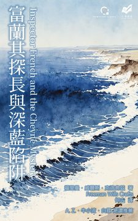
犯罪小說作家／A.Z.：海洋詭計與推理緊密結合 犯罪小說作家／牛小流：幾可亂真的連環詐騙、驚險的綁架與海上追逐 犯罪文學地景調查專家／白羅：雙偵探接力辦案，突破類型框架 麥斯威爾・錢恩，一名熱愛海洋、精通航海技術的天生冒險者，在他從軍參加第一次世界大戰後退伍後，在鄉間過著舒適的生活，偶爾寫寫書。然而，某日他前往倫敦，在普利茅斯酒店遇見了一位已逝父親的老朋友，相談甚歡。 突然，這位長輩提出了與錢恩合作寫書的建議，由他提供親身經歷的船難故事，讓錢恩寫成精彩的冒險小說。對希望在創作事業上成功發展的所有年輕人來說，這具有莫大的吸引力。然而，錢恩並不知道，他正逐漸踏入一個難以捉摸的陷阱…… 二十世紀初，日不落國的榮耀──將化為這部小說中穿梭海洋的解謎冒險故事。而隨著危機步步進逼，蘇格蘭場的富蘭其探長，終於颯然登場。
第六屆林佛兒獎首獎作家／白帽子：融入存在主義的思辨深度、被低估的一部傑作 犯罪文學評論人／輝彌：不只是關於邊緣犯罪，而是活下來後還剩什麼 台灣犯罪作家聯會成員／藍念初：一九六○年代的詩意即興，人物心境與街道場景的交織 黑色文學經典命題：「過去，無論經過多久，都不會過去。」 ｜鋼琴師的指尖，觸碰的是琴鍵，還是死亡？｜ 漆黑、寒冷的夜晚，破門聲打斷樂音，一名傷痕累累的男子闖進費城貧民區一家老舊的酒吧。 泰利循著鋼琴的樂聲，找到了他的弟弟艾迪求援。過去三年，艾迪在這家酒吧擔任鋼琴師，他從來不談自己的事，也不與他人有任何交集；孤家寡人獨來獨往，與這個世界沒有任何聯繫。 然而，兩名來意不善的男子衝入酒吧，艾迪在他們即將帶走泰利的最後一刻遽然出手介入，讓泰利得以順利逃走。不料，兩名男子為了追查泰利的下落，轉而盯上艾迪。於是，艾迪與世隔絕的簡單生活，驟然畫下句點…… 一九六○年，法國導演法蘭索瓦・楚浮將本作改編為電影《槍殺鋼琴師》，為古迪斯的文字賦予嶄新的生命與解讀方式。電影以鮮明的黑色懸疑風格成為法國新浪潮電影中的經典。
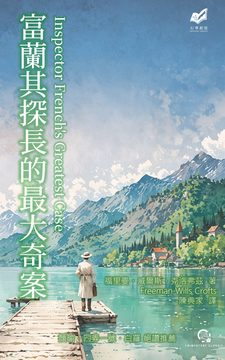
推理作家／四弄一號：刑偵推理極致工藝 犯罪文學地景調查專家／白羅：黃金時期旅情傑作 深夜，倫敦哈頓花園一家珠寶公司發生搶劫殺人案，主任書記員頭部被撥火鉗重擊，死於辦公室內的保險箱前。原本應該上鎖的保險箱遭人打開，箱內價值數萬英鎊的鑽石失竊。 經過現場鑑識，發現保險箱鑰匙疑似被凶手複製，可能是公司內部人士所為。被害者為人正直、操守良好，但案發當夜卻獨自進入辦公室，原因不明──難道，他平日的作為都是偽裝？抑或，他是凶手的內應，在珠寶得手後被黑吃黑？ 蘇格蘭場的富蘭其探長奉命調查此案。原本以為，這只是一樁倫敦市內的搶劫殺人案，詎料，為了追蹤真相，富蘭其必須遠赴荷蘭阿姆斯特丹、法國霞慕尼、西班牙巴塞隆納、瑞士坎德施泰格──一場幅員壯闊、曲折離奇的追凶之旅，就此展開！
在閃爍的燈光下，布莉琪是紐約一家夜店的伴舞，她已經失去夢想，唯一的朋友是窗外派拉蒙大樓上的時鐘，在夜深人靜時給她支持，陪她熬過每一個漫長、重複的夜晚。某夜，她偶然邂逅了一名有錢的年輕舞客奎恩，她對他毫無興趣，只把他當成一張要價一角的舞票。 然而，兩人的命運卻意外地交織在一起。奎恩向布莉琪坦承行竊，布莉琪勸他歸還鉅款。當他們一起回到竊案現場時，竟發現豪宅主人已經被殺。奎恩將是唯一的嫌犯。他們必須在天亮以前查明真相，並一同搭上巴士離開紐約……
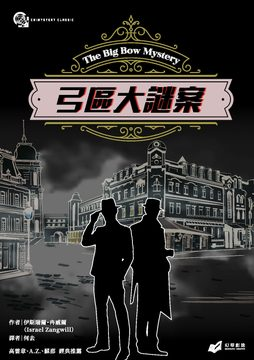
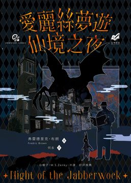
你是否能夠確定，眼前的世界是真實的嗎？還是一場離奇的夢境？ 《號角報》是卡梅爾市這個無聊的鄉下小鎮裡唯一一份報紙，每週五發行。主編史托格一生只愛兩件事：路易斯・卡羅的詩作，以及威士忌，這二十多年來，《號角報》從來沒有登過真正重要的新聞，使他內心一直渴望發生什麼驚天動地的大事件，能讓他取得全國矚目的大獨家。 然而，就在一個版面提早完工、準備付印的星期四晚上，「有個人」替史托格實現他的願望了……一位神秘的訪客，帶來了一個神祕聚會的邀請，地點是一棟荒無人跡的古宅……接下來的發展，讓史托格深陷一連串驚心動魄的冒險之中。夜色更深了，現實與幻想的界限逐漸模糊，讓他不禁懷疑：這一切是真實發生的，還是酒精與路易斯・卡羅詩作激發的幻覺？更關鍵的是，他是否能從惡夢中醒來？或者，是否能活著找出真相？
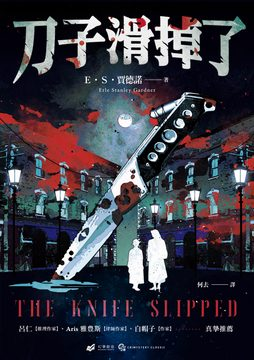
柯賴二氏探案系列是厄爾‧史丹利‧賈德諾以Ａ・Ａ・費爾（A. A. Fair）為筆名所創作，在推理小說史上獨樹一格的系列，主角是一對水火不容的搭檔──柯白莎身材魁梧、個性強勢、視財如命，賴唐諾身材瘦弱，辦案時不是挨揍就是被上銬，卻又能憑著過人才智絕處逢生，巧妙破案。這套系列共發表的二十九部長篇，為冷硬派偵探小說的經典之一。時至二○一六年，失落多年的未發表小說《刀子滑掉了》問世，補足了柯賴二氏探案「失落的環節」。 賈德諾遺失超過75年的神秘書稿《#刀子滑掉了》（The Knife Slipped）中文版！！ 這部偵推作品原本計劃做為「賈氏妙探奇案」（又譯：柯賴二氏探案）系列的第二部，但是卻從未出版過！因為出版商反對 #柯白莎（Bertha Cool）在這一案，說話粗魯、咒罵、抽煙和試圖欺騙他人……等特質，而被擱置出版甚至被遺忘至今。 然而，這個關於婚外情、腐敗、雙重欺騙與三重身份的故事——儘管在1939年可能令人震驚——如今卻是個閃耀著輝煌時代光芒、失而復得的偵推犯罪文壇大禮，將帶著我們回到私家偵探和神秘女郎的全盛時期，回到那個充滿強大罪犯、腐敗警察、火花四濺的對白和美妙情節轉折的年代！ 賴唐諾從未如此酷過！柯白莎從未如此強悍過！而賈德諾的作品也從未如此精彩！
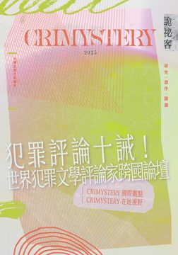
一、當犯罪文學成為文化日常 自台灣犯罪作家聯會法人化滿週年以來，這場文學運動的能量從組織推進到文化生活。《詭祕客》作為年度總結與展演的場域，完整收錄聯會四大發展主軸的具體實踐：深耕創作、建構評論、豐富閱讀、締結國際。 創作上，從林佛兒獎的復辦到新生代作家的崛起，台灣犯罪小說已走出題材窄化的陰影，進入兼具社會性與心理深度的成熟期；評論上，「台灣推理評論新星獎」培育出新世代的思辨聲音，讓評論不再是旁觀，而是創作的續篇；閱讀上，「完美犯罪讀這本！」以金、火、土、水、木五項象徵元素打造出屬於華文世界的年度推理獎項，為每位讀者打開理解文本的新入口。 二、評論的國際現場：思想如何跨語言運作 本期最具代表性的企劃，是台灣首次以「評論」為核心主題的跨國論壇。 由既晴策畫、提子墨主持的「世界犯罪文學評論家跨國論壇」，邀集英國馬丁・愛德華茲、日本大森滋樹與諸岡卓真、加拿大艾瑞克・德索薩、台灣評論家洪敍銘與喬齊安同台對談。這場討論突破以創作為中心的傳統，回到「評論如何建構創作倫理與閱讀價值」的根本問題。 論壇之外，楓雨策劃的「莫比烏斯環座談會」邀集周愛倫、祁牙鳥、惡之根Troy與閱讀探戈等評論者與podcaster，共同討論推理評論的媒介轉向：當閱讀進入聲音與社群時代，評論如何被再度閱讀？ 既晴以〈犯罪評論十誡〉呼應諾克斯的推理十誡，提出「評論應對創作有益，而非對作者有害」的倫理宣言，象徵台灣評論界從旁觀走向對話、從評價走向共創。 這一系列跨語言的交流，使《詭祕客2025》不僅是創作者的刊物，更是一個以評論為軸的知識實驗場——推理評論首次擁有屬於自己的國際現場。 三、翻譯與語言的邊界：從德國到台語 論壇之後，是國際現場的豐富延展。 余心樂從德語世界出發，探討台灣犯罪小說如何在歐洲文學圈發聲；牛小流則觀察新加坡與馬來西亞市場中，華文犯罪小說的出版動態。 喬齊安與日本作家小西雅暉的深度訪談，以及林庭毅專訪譯者明田川聰士，揭示翻譯作為再創作的意義：每一次語言轉換，都是一次新的偵探行動。 特別單元「台語版福爾摩斯翻譯計畫」更以紀品志、賴嘉仕、陳麗君等人之口，思考「邏輯推理」如何在台語語感中被重新發音、重新推理。 這些篇章讓《詭祕客2025》成為一座語言的交匯站——在翻譯與再詮釋之間，犯罪文學展現出語言的生命力。 四、島嶼的犯罪地景：從環島解謎誌到野草計畫 在地篇章是本期的另一個靈魂。 「環島解謎誌」與「犯罪地景踏查計畫」以「地景作為文本」為出發點，將推理小說的案發現場延伸至真實社會的地理與記憶中。 M.S.Zenky 的〈馬祖駐村筆記〉以詩意筆觸書寫離島的孤寂與暴力共存；顏瑜與提子墨以影像與提案紀錄文字跨足影展現場，展現文字如何被拍攝、被再現；李奕萱與楓雨在「野草計畫」中，揭露創作如何被看見、被策展、被集體閱讀。 在「編輯的推理拼圖」單元中，台灣編輯群以舞台化視角重構推理小說的閱讀現場，將創作重新安置於地方與現實的交叉處。這不只是文學的實驗，更是文化地理學式的推理探索。 五、「完美犯罪讀這本！」——從靈異日常到社會派真實 作為年度重頭戲，「完美犯罪讀這本！」選書評鑑集結十五位評論者與作家，共同票選出2025年最具代表性的犯罪文學作品。 這個獎項不是單純的「排行榜」，而是一場年度的閱讀行動—— 一種以評論串連創作、以創作回應現實的公共閱讀節。 六、從真相到書寫：台灣推理的集體呼吸 《詭祕客2025》是推理文學的年鑑，也是一部台灣文化的集體傳記。 在國際論壇的思想高度與在地地景的書寫深度之間，它構築出一條島嶼式的推理軸線—— 一端連向世界，一端扎根土地。 這裡的「推理」不再只是故事的謎題，而是一種倫理思考、一種社會行動。 評論與創作並行，翻譯與地方共鳴，讓台灣推理在全球化與本土性之間找到新的平衡。 在這本書裡， 評論會說話，地景會思考， 而真相，永遠藏在書頁與讀者之間。
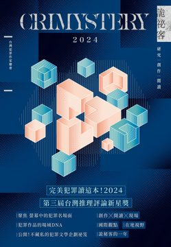
台灣犯罪文學專屬的 創作•閱讀•研究── 【在地 X 國際】 ★智慧閃光的邀請——詭祕客的私房書單 原創的可貴並不在於獨一無二且無法被複製，而是在靈感迸發且被書寫記錄下來的當下，它所能產生震撼人心的力量；而另一方面，如何讓這樣的閃光並非只是一瞬的璀璨，閱讀、學習與實踐，恐怕仍然是一條不可或缺的道路。 在這樣的想像下，本年度的十三作專欄，邀請了十三位作家推薦一本犯罪文學的書籍；這份「私房書單」有更多的選書人的喜好成分，然而在看似沒有標準的擇選中，卻仍然顯現出某些具體的偏向，或許能用來對應當前台灣犯罪文學創作及其傳播的趨勢與重要面向。 ★跨越國境的犯罪文學航路 本期重量級地邀請德語系的海外作家Beate Maxian、Paul Lascaux、Ralf Kramp，在與旅歐作家余心樂的對談中，看見他們創作的核心，是臺灣難能可見的第一手資料。近年也是臺灣作品在國際大放異彩的關鍵時期，本期也收錄了來自海外的第一手報導與見聞。在臺灣本土部分，依然有來自不同地域的作家對談，甚至加入了研究、評論、教學者的對話分享，毫不藏私分享自身寫作經驗。而犯聯本身也增加許多新成員，各自暢談影是改編、IP經驗以及對犯罪文學的觀察，跨越了時間與空間的限制齊聚一堂──
《臺灣西部方言地圖集》（DAWT，2025）是洪惟仁繼《臺灣語言地圖集》（LAT，2019）之後第二本勾劃臺灣語言的地圖集，也是繼《閩南地區方言地圖集》（DASM，2023）之後第二本閩南語方言變體的地圖集。 本地圖集的出版有三個目的： 一、比較DASM地圖，解釋臺灣西部台語方言的來龍去脈 二、印證LAT的台語方言分區 三、作為學校台語教學、維護台灣語言生態的參考 臺灣話源自閩南，但是臺灣沒有一個方言完全拷貝原鄉的任何一個方言。每一個臺灣話方言都是漳、泉方言的融合與重整，加上一些創新演變。閩南語唐山過臺灣三、四百年，兩岸各有發展的方向，方言變體各有自己的歷史。欲知閩南語發展史不能不看DASM，欲知臺灣話的來龍去脈，如何傳承或揚棄原鄉方言，如何演變發展成現代台語的新風貌，不能不看本書。 本書用兩岸方言地圖對照，娓娓道來，告訴你由原始閩南語發展為現代閩南語方言及由原鄉到臺灣的整個閩南語語音史。 本研究訪問了臺灣西部約1500個耆老，收集約1000個方言點，繪製了84張方言變體分佈圖，劃出同語線，每一張地圖都附了地圖簡釋，讓你看圖聽故事。 這是全世界最精細的解釋性方言變體地圖。因為夠精細，因此能夠印證LAT的台語方言分區，並且提出了比LAT更精確的台語分區新地圖。
攝影，既非單純的技術炫技，也不止於美感堆疊，而是一場對生活的凝視與對心靈的回應。在《攝影路上》這本作品中，作者洪建煉以十餘年如一日的觀察與記錄，鋪陳出一條充滿光影、感悟與詩意的生命路徑。 這本書不僅是一部攝影作品集，更是一冊細膩書寫生活的筆記書。從一棵草的隨風搖曳，到斑駁牆面的日影滲透，從山海自然的壯闊到城市角落的人情微光，洪建煉以「隨遇而拍、自然呈現、光影書寫、生命隱喻」為核心原則，拾取時光中每一道微光，將轉瞬即逝的景象，化為可再凝視的靜止瞬間。他用鏡頭寫詩，也用文字思考，用感官觀察世界，更用靈魂安放記憶。 作者曾任國小教師三十餘年，退休後以腳步丈量台灣、以相機紀錄生命。本書內容涵蓋從攝影歷程、拍攝思維、技術反思，到關於觀看、觀想與創作的哲思，佐以實拍照片與隨筆書寫，構成一種介於藝術創作與生活書寫之間的溫潤敘事。 書中亦收錄作者於花蓮、彰化、台中等地舉辦攝影展的紀實與反思，以及與社群互動中所獲得的靈感與回饋。這些影像不以驚豔奪目為傲，而以「日常的陌生化」為魅力，提醒我們：最美的風景不在遠方，而在我們願意多看一眼的角落。 「我希望能好好記錄無法重來的每一天。」這是作者的初衷，也是他將攝影化為日常儀式的信念。在影像與文字的交會處，《攝影路上》邀請讀者一同緩慢前行，不為追逐，而為了凝視——世界的微光、心的迴響，以及生命自身的光影變化。 社群編輯—— Leo 文創業者—— 王幼荷 媒體工作者—— 謝宗璋 數位工作者—— 提子墨 小說家—— A.Z. 國立臺中教育大學美術學系退休教授—— 黃嘉勝 聯合推薦
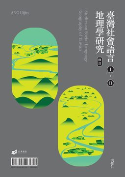
本書為臺灣社會地理語言學家洪惟仁自一九八五年起，歷經三十多年，上山下海深入臺灣各地，實際進行田野調查，並參照臺灣所有語言與方言調查報告及世界最先進的語言分類學與語言地理學理論，進行分析研究的總成果。 本書分為二冊：第一冊《臺灣語言的分類與分區：理論與方法》闡述當代臺灣語言分類與區劃的理論與方法，並說明其語言分佈狀態；第二冊《臺灣語言地圖集》收錄一○五張彩色精美語言地圖，兼具宏觀與微觀，從各種角度與尺度，鉅細靡遺地呈現臺灣所有語種的分類與分佈。一為理論一為實際，二冊互為表裡，不可分離，合稱《臺灣社會語言地理學研究》（Studies on Social Language Geographic of Taiwan）。 第一冊《臺灣語言的分類與分區：理論與方法》（簡稱 CRLT）為本研究的理論、方法與概念，針對「社會語言地理學」的意義、「語言地理學」、「地理語言學」的分科、語言分類與語言區劃的理論與方法，及臺灣語言分佈進行簡要說明，並附「臺灣語言分佈全圖」乙張做為參照。 第二冊《臺灣語言地圖集》（簡稱LAT）為本計畫深入全臺灣各縣市、鄉鎮、村里、聚落，針對所有臺灣現存的語言、方言進行調查或觀察、分析、研究，並做適當的語種分類與地理區劃，利用GIS電腦軟體ArcView繪製而成的彩色地圖集。按區劃層次，第二冊地圖集共繪製臺灣全圖5張，語言州圖7張，區圖21張、片圖52張，地方圖4張，縣市圖16張，共105張彩色精印地圖，並附詳盡的地圖標示說明、「臺灣語種分類系統表」、「臺灣語言區劃系統表」及參考資料。 1. 本書為臺灣史上第一本語言地圖集及其研究專論，紀錄臺灣所有語言，包括閩南語、客語、南島語、華語及少數瀕危語言的分佈狀態。 2. 本書為世界上最精密、最精細的全國性語言地圖集，精細程度達村里以下的自然村。共105張不同尺度、裝載不同資訊量，以GIS精確定位、彩色精印的共時地圖。 3. 本書為世界上極少數由調查到地圖繪製階段，均由個人一貫領導完成的語言地圖集，為臺灣首見、世界少見的社會語言地理學研究之成果。 本研究成果不只為語言學服務，也為其他的領域如歷史學、地理學、社會學、人類學研究服務，或作為語言、文化、族群政策之制定、行政實務、法律判決、人文教育、深度旅遊之參考，可謂臺灣首見、世界罕見的社會語言地理學研究之頂尖成果。
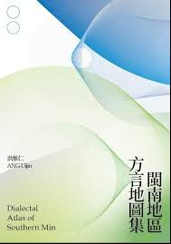